QUESTION 1
图示为经过STP计算收敛后的稳定拓扑，则下列说法正确的有
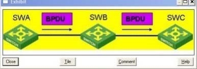
A. SWA为网络中的根桥
B. 该BPDU为配置BPDU,目的地址为01-80-C2-00-00-0
C. 该BPDU的发送周期为HelloTime
D. 端口保存该BPDU的老化时间为MaxAge
Correct Answer: ABCD
Section: (none) Explanation
Explanation/Reference:
QUESTION 2
关于配置BPDU和TCM BPDU,说法正确的有
A. 配置BPDU仅从指定端口发出，TCNBPDU仅从根端口发出
B. 配置BPDU通常仅由根桥周期性发出，TCNBPDU除根桥外其他网桥都可能发出
C. 配置BPDU通常仅从根端口接收，TCNBPDU仅从指定端口接收
D. Alternate端口既不会发送配 BPDU也不会发送TCN BPDU
Correct Answer: ABCD
Section: (none)
指定端口发送配置BPDU，根端口发送TCNBPDU
QUESTION 3
关于TCN BPDU的产生，下列说法正确的有
A. 启用STP的非根桥交换机如果某端口连接了PC机，当该端口进入Forwarding状 交换机不会产生TCN BPDU
B. 网络中某交换机的指定端口链路断掉，则该交换机一定会产生 TCN BPDU
C. 网络中某交换机的Alternate端口链路断掉，则该交换机不会产生TCN BPDU
D. 当交换机某端口选择为指定端口或根端口时，交换机会立即发送TCNBPDU
Correct Answer: C
Section: (none) Explanation
QUESTION 4
二台路由器通过局域网连接在一起，组成VRRP备份组如果路由器RTA收到路由器RTB发送的VRRP 协议报文，报文Priority字段Auth Type字段值为2,则
A. 路由器RTB启用VRRPV2协议
B. 路由器RTB启用VRRPV3协议
C. 路由器RTB为VRRPIP地址拥有者
D. 路由器RTB启用了VRRP简单字符认证
Correct Answer: AC
Section: (none) Explanation
QUESTION 5
二台路由器通过局域网连接在一起，组成VRRP备份组各接口上配置如下:
[RTA-GigabitEthernet1 /0]display this ip address 192.168.0.252 255.255.255.0 vrrp vrid 1 virtual-ip 192.168.1.254 vrrp vrid 1 priority 120
[RTB-GigabitEthernet1/0]display this ip address 192.168.0.253 255.255.255.0 vrrp vrid 1 virtual-ip 192.168.1.254
从上述信息可以得知
A. RTA为备份组Master路由器
B. RTB为备份组Master路由器
C. RTA、RTB都处于 VRRP Initialize 状态
D. RTA、RTB都处于 VRRP Master 状态
Correct Answer: C
Section: (none) Explanation
Explanation/Reference:虚拟IP与实IP不在一个网段会显示initialize（初始化）
QUESTION 6
二台路由器通过局域网连接在一起，组成VRRP备份组在各接口上对VRRP计时器配置如下：
[RTA-GigabitEthernet1 /0]vrrp vrid 1 timer advertise 5
[RTB-GigabitEthernet1/0]vrrp vrid 1 timer advertise 5
VRRP 备份组1运行正常，RTA为Master, RTB为Backup若设备运行一段时间后，路由器RTA故障, 则路由器RTB从Backup变成Master的时间可能为
A. 3秒
B. 5秒
C. 12秒
D. 20秒
Correct Answer: C
Section: (none) Explanation
Explanation/Reference:
QUESTION 7
在PIM-DM组网中，关于SPT形成的过程（不考虑状态刷新机制），描述正确的有
A. 经过扩散-剪枝过程，形成组播源到组播接收者之间的SPT
B. 扩散-剪枝过程周期进行
C. 被剪枝的接口不再向下游发送组播报文
D. 只要网络拓扑、单播路由信息不变，形成的SPT树就不会改变
Correct Answer: AB
Section: (none) Explanation
QUESTION 8
进行三层组播配置之前，首先需要进行的配置是
A. 进入IGMP视图
B. SB置IGMpi议版本
C. 配置PIM协议
D. 通过multicastrouting-enable命令全局启用组播
Correct Answer: D
Section: (none) Explanation先启用全局组播
QUESTION 9
如果需要在一个三层网络中实现组播数据的转发，至少配置如下协议或功能
A. IGMPSnooping 功能
B. IGMP协议
C. PIM协议
D. BSR配置
Correct Answer: BC
Section: (none) Explanation
QUESTION 10
以下属于汇聚层功能的是（选择一项或多项）
A. 拥有大量的接口，用于与 终用户计算机相连（接入层）
B. 接入安全控制（接入层）
C. 高速的包交换（核心层）
D. 复杂的路由策略
Correct Answer: D Section: (none) Explanation
QUESTION 11
以下属于核心层功能的是（选择一项或多项）
A. 拥有大量的接口，用于与 终用户计算机相连（接入层）
B. 接入安全控制（接入层）
C. 高速的包交换
D. 必要的路由策略
Correct Answer: CD
Section: (none)
Explanation
QUESTION 12
以下属于接入层功能的是（选择一项或多项）
A. 拥有大量的接口，用于与 终用户计算机相连
B. 接入安全控制
C. 高速的包交换（核心层）
D. 复杂的路由策略（汇聚层）
Correct Answer: AB
Section: (none) Explanation
QUESTION 13 关于IGMPSnooping 正确的有
A. 同一个VLAN下既可&配置IGMP,也可以配置IGMPSnooping（不可代替的）
B. 端口快速离开是指当交换机从IGMP Leave报文时，直接把该端口从对应的转发表项的出端口列表中删除
C. 可以在交换机上启动未知组播组丢弃功能，当交换机收到未知组播数据报文时，只向其路由器端口转发, 不在VLAN内广播
D. 二层设备上使iIGMP Snooping功能，就能够在数据链路层建立并维护组播转发表项，从而在数据链路层正常转发组播数据(功能描述不相符)
Correct Answer: BC
Section: (none) Explanation
Explanation/Reference:
QUESTION 14
在大型局域网中，网络被分为哪些功能层？
A. 核心层 B. 汇聚层 C. 接入层
D. 管理层
Correct Answer: ABC
Section: (none) Explanation
QUESTION 15
关于RP和BSR,下列说法正确的有
A. PIM-SM中RP可以通过手工指定，也可以通过动态选举
B. 配置RP通过动态选举时，可以把有意成为RP的路由器配置为C-RP
C. 在一个PIM-SM域中只能有一个BSR
D. BSR负责在PIM-SM域i收集并发布RP信息
Correct Answer: ABCD
Section: (none)
Explanation
QUESTION 16
在大型局域网中，常用的链路备份技术有
A. 链路聚合
B. STP
C. Smart Link
D. RRPP
Correct Answer: ABCD
Section: (none) Explanation
QUESTION 17
组播组管理协议的机制主要包含（选择一项或多项）
A. 路由器维护组播组 B. 査询器的选举
C. 成员报告抑制机制
D. 主机加入和离开组播组
Correct Answer: ABCD
Section: (none) Explanation
QUESTION 18
下列关于PIMSM中RP选择的表述，正确的有（选择一项或多项）
A. 首先比较C-RP的优先级，优先级较高者获胜
B. 再比较Hash函数计算的哈希值，值较大者获胜
C. 后比较C-RP地址，值较大者获胜
D. 后比较C-RP地址，值较小者获胜
Correct Answer: ABC
Section: (none) Explanation
QUESTION 19
下列关于PIMSSM的表述，正确的有
A. 为与IGMP早期版本兼容，PIMSSM中接收者也使用IGMP V2发送加入消息
B. PIMSSM可以简单看与PIMSM类似，当主机发送加入消息后，设备向组播源方向发送(*, G)加入消息
C. 组播报文沿着组播源到接收者之间的SPT到达接收者
D. 与PIMSM相比，PIMSSM不需要RP,提高了报文转发效率
Correct Answer: CD
Section: (none) Explanation
QUESTION 20
下列关于PIM加入过程的表述，正确的有
A. PIMSSM中DR的组播加入路径是从源到DR的 优转发路径
B. PIMSM中DR的组播加入路径是从源到DR的 优转发路径
C. PIMSM中RP的组播源加入路径是从源到RP的 优转发路径
D. PIMDM中DR的组播加入路径是从源到DR的 优转发路径
Correct Answer: AC
Section: (none) Explanation
PIMSM—RP,PIMSSM--DR
QUESTION 21
高可靠冗余网络设计的核心目标是
A. 大限度地提高网络带宽
B. 大限度地确保网络访问安全
C. 大限度地避免网络单点故障的存在
D. 大限度地降低网络管理复杂度
Correct Answer: C
Section: (none) Explanation
QUESTION 22
下列技术中属于冗余备份技术中的链路备份技术的有
A. STP
B. RRPP
C. Smart-Link
D. 动态路由
E. 链路聚合
Correct Answer: ABCE
Section: (none) Explanation
QUESTION 23
通过査看PIM路由表项，可以了解到的内容有
A. (S,G)或（*,G)表项的入接口
B. (S,G)或(*:G)表项的上游邻居
C. (S,G)或（*,G)表项的下游接口
D. (S,G)或（*:G)表项的老化时间
Correct Answer: ABCD
Section: (none) Explanation
Explanation/Reference:
QUESTION 24
下列技术中属于三层组播技术的有
A. PIM
B. IGMPSnooping(二层组播)
C. IGMP
D. MVR
Correct Answer: AC
Section: (none) Explanation
QUESTION 25
关于VoiceVLAN的工作模式，说法正确的有
A. VoiceVLAN的工作模式包含自动和手动两种
B. 自动模式下，系统会识别IP Phone发出的报文，如果匹配为语音报文，则将连接IP Phone的端口加入
Voice VLAN
C. 手动模式下，需要手工将IP Phone加入Voice VLAN中
D. 手动模式下，系统将不会向端口下发ACL
Correct Answer: ABC
Section: (none) Explanation
Explanation/Reference:
QUESTION 26
下列选项中，可用于身份认证的技术包括
A. 802.1X认证
B. PortaL认证
C. RADIUS
D. 包过滤
E. EAD
Correct Answer: ABC
Section: (none) Explanation
QUESTION 27
关于VoiceVLAN的端口过滤模式，说法正确的有
A. VoiceVLAN的端口过滤模式可以分为安全模式和普通模式两种
B. 对于普通模式下，端口力口入VoiceVLAN后设备不再检验报文的MAC地址，
C. 安全模式下，设备将对每一个要进入VoiceVLAN传输的报文都进行MAC匹配检査
D. 缺省情况下，VoiceVLAN工作在普通模式（默认工作在安全模式）
Correct Answer: ABC
Section: (none) Explanation
QUESTION 28
在如图所示的组网连接中，SWA/SWB/SWC在同一个MSTP域内并配置相同的域配置
stp region-configuration region-name h3c
instance 1 vlan 10 instance 2 vlan 20 instance 2 vlan 30 active region-configuration
三个互联链路的端口都为Access,且属于如图所标识的VLAN三台交换机分别创建Access链路对应的
VLAN虚接口并在虚接口上运行OSPF其VLAN虚接口的IP地址分配如下：
SWA： vlan-interface 10 (192.168.10.1)； vlan-interface 30(192.168.30.1) SWB： vlan-interface 10 (192.168.10.2); vlan-interface 20(192.168.20.1) swc： vlan-interface 20 (192.168.20.2)； vlan-interface 30(192.168.30.2)
当互联端口都UP且STP和OSPF计算完毕后，下列有关网络连通性描述正确的有
A. 三台交换机可以两两建立OSPF邻居关系
B. 三台交换机中其中有两台交换机无法建立OSPF邻居关系
C. 三台交换机的所有互联地址都可以相互可达
D. 6个互联地址之间，至少有两个互联地址相互不可达
Correct Answer: A
Section: (none) Explanation
Explanation/Reference:
QUESTION 29
在如图所示的组网连接中，SWA和SWB同时开启STP和Loopback-detection 请确认SWA和SWB 各端口状态描述正确的有
A. SWA的G1/0/1可能由STP检测到环路存在而被阻塞
B. SWB的G1/0/2或G1/0/3之间由STP检测到环路存在而阻塞其中之一
C. SWB的G1/0/2和G1/0/3之间由Loopback-detection检测到环路存在而阻塞其中之一
Correct Answer: B
Section: (none) Explanation
QUESTION 30
在如图所示的组网连接中，SWA和SWB为三层交换机，运行STP+VRRP,且初始配置完成后SWA为STP的根和VRRP的Master，SWC为二层交换机下联接入终端，下列有关网络链路故障后的描述正确
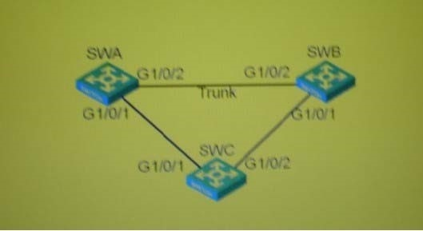
A. 当SWA和SWB之间的链路中断后，STP的拓扑将变化，SWC的两个上行端口都将变为Forwarding
B. 当SWA和SWB之间的链路中断后，VRRP的Master将发生切换，SWB将成为新的VRRPMaster
C. 当SWA和SWC之间的链路中断后，STP的拓扑将变化，SWC的G1/0/2变为Forwarding
D. SWA和SWC 间的链路中断后，VRRP的Master将保持不变^但SWC下联终端无发和网关通信
Correct Answer: A
Section: (none) Explanation
Explanation/Reference:
QUESTION 31
在如图所示的组网连接中，SWA和SWB为三层交换机，运行STP+VRRP,且初始配置完成后SWA 为STP的根和VRRP的MasterSWC为二层交换机下联接入终端下列有关网络链路故障后的描述正确
A. 当SWB和SWC之间的链路中断后，STP其余链路上的端口状态没有变化，都仍然保持Forwarding
B. 当SWB和SWC之间的链路中断后，VRRP的Master将保持不变，SWC下联终端仍然可以正常通信
C. 当图示中只有SWB和SWC之间的链路完好时，SVVA和SWB都将成为VRRP的Master,此时SWC下端可以和网关正常通信
D. 当图示中只有SWB和SWC之间的链路完好时，VRRP的Master将保持不变，但SWC下联终端无法和网关通信
Correct Answer: AB
Section: (none) Explanation
Explanation/Reference:
QUESTION 32
主机 PCA、PCB 和 PCC 分别连接接在交换机 SWA 的 Ethernet1/0/1 Ethernet1/0/2 和 Ethernet1/0/3 端口上,并且其地址处于同一网段,在SWA上査看VLAN有如下显示：
[SWA]display vlan 10
VLAN ID: 10
VLAN Type: static
Route Interface: not configured
Description: VLAN 0010
Name: VLAN 0010 Tagged Ports: none Untagged Ports:
Ethernet1/0/1 Ethernet1/0/24
[SWA]display vlan 20
VLAN ID: 20
VLAN Type: static
Route Interface: not configured
Description: VLAN 0020 Name: VLAN 0020
Tagged Ports: none Untagged Ports:
Ethernet1/0/2Ethernet1/0/24
[SWA]display vlan 30
VLAN ID: 30
VLAN Type: static
Route Interface: not configured
Description: VLAN 0030
Name: VLAN 0030 Tagged Ports: none Untagged Ports:
Ethernetl/0/1 Ethernetl/0/2 Ethernet1/0/24
从以上输出信息可以判断
A. PCA可以和PCB互通
B. PCA可以和PCC互通
C. PCB可以和PCC互通
D. PCA、PCB和PCC之间两两不能互通
Correct Answer: BC
Section: (none) Explanation
Explanation/Reference:
QUESTION 33 在交换机SWA上执行display interface Ethernet 1/0/2命令后，输出信息如下:
[SWA]display interface Ethernet 1/0/2
Ethernetl/0/2 current state: UP
PVID: 10
Mdi type: auto
Link delay is 0(sec)
Port link-type: trunk
Port priority: 0
从以上输出可以判断
A. 端口Ethernetl/0/2只允许VLAN 1和VLAN 10的数据侦通过
B. 当前交换机存在的VLAN只有VLAN1和VLAN10
C. 带有VLAN1标签的数据帧离开端口Ethernet1/0/2时不会被剥离标签
D. 带有VLAN20标签的数据帧进入端口Ethernet1/0/2时将被丢弃
Correct Answer: BCD
Section: (none) Explanation
Explanation/Reference:
QUESTION 34
交换机SWA, SWB通过二根光纤千兆以太网链路连接在一起，其中交换机SWA上有如下接口配置: [SWA]interface GigabitEthernet 1/0/1
[SWA-GigabitEthernet1/0/1]gvrp
[SWA-GigabitEthernet1/0/1]port link-type trunk
[SWA-GigabitEthernet1/0/1]port trunk permit vlan 1 10
[SWA]interface GigabitEthernet 1/0/2
[SWA-GigabitEthernet1/0/2]port link-type trunk
[SWA-GigabitEthernet1/0/2]port trunk permit vlan 1 10
从上述可以得知
A. GigabitEthernet1/0/1 和 GigabitEthe1/0/2 无法加入同一个聚合组
B. 只有将GigabitEthe1/0/2的配置改为与GigabitEthe1/0/1 一致，二者才可以加入同一个聚合组
C. 若SWA4换机开启MSTP,则GigabitEthernet 1/0/1和GigabitEthernet 1/0/2之中有一个会被阻塞
D. 若SWA交换机开启MSTP,则GigabitEthe1/0/1和GigabitEthe1/0/2可以参加转发
Correct Answer: D
Section: (none) Explanation
Explanation/Reference:
QUESTION 35
关于优先级的映射和优先级的信任，说法正确的有
A. 报文进入交换机端口后，会默认根据802.1P的优先级进入队列
B. 报文进入交换机端口后，会默认根据DSCP的优先级进入队列
C. 报文进入交换机后，如果要根据802.1P或DSCP值入队列，则必须配置端口信任802.1P或DSCP
D. 报文进入交换机端口后，默认会根据端口的优先级进入队列
Correct Answer: CD
Section: (none) Explanation
QUESTION 36
交换机的MAC地址表项可能包含下列哪些要素-
A. MAC地址
B. 端口号
C. VLANID
D. 老化时间
E. IP地址
Correct Answer: ABCD
Section: (none) Explanation
QUESTION 37
交换机SWA,SWB和SWC连接形如：
SWA——SWB——SWC
三台交换机都正确配置了 GVRP协议，以便互相通告VLAN信息如果在SWA上手工创建VLAN2,下列描述正确的是
A. SWA马上向SWB发送第一个Join信息，再等待Jointimer时间发送第二个Join消息
B. SWA等待Holdtimer时间向SWB发送第一个Join消息，再等待Jointime时间发送第二个Join消息
C. SWB接收到第一个Join消息之后马I向SWC发送第一个Join信息，再等待Jointime时间发送第二个Join消息
D. SWB接收到第一个Join消息之后等待Holdtimer时间向SWC发送第一个Join消息，再等待Jointimer时间发送第二个Join消息
Correct Answer: BD
Section: (none) Explanation
Explanation/Reference:
QUESTION 38
要把交换机SWA的Ethernet1/0/1端口配置为Hybrid端口，其PVID为VLAN20,且在发送VLAN20
的数据帧时不打标签，在发送VLAN 10的数据帧时打标签，则下面的配置过程正确的是 (选择一项或多项）
A. [SWA]vlan10
[SWA-vlan 10]quit
[SWA]vlan 20
[SWA-vlan20]port Ethernet 1/0/1
[SWA-vlan20]quit
[SWA]interface Ethernet 1/0/1
[SWA-Ethernet1 /0/1 ]port link-type hybrid
[SWA-Ethernet1 /0/1]port hybridvlan 10 tagged
B. [SWA]vlan10
[SWA-vlan 10]quit
[SWA]vlan 20
[SWA-vlan20]quit
[SWA]interface Ethernet 1/0/1
[SWA-Ethernet1/0/1]port link-type hybrid
[SWA-Ethernet1/0/1]port hybrid pvid vlan 20
[SWA-Ethernet1 /0/1 ]port hybrid vlan 10 tagged
C. [SWA]vlan10
[SWA-vlan10]quit
[SWA]vlan 20
[SWA-vlan20]quit
[SWA]interface Ethernet 1/0/1
[SWA-Ethernet1/0/1]port link-type hybrid
[SWA-Ethernet1/0/1]port hybrid pvid vlan 20
[SWA-Ethernet1/0/1]port hybrid vlan 10 tagged
[SWA-Ethernet1 /0/1 ]port hybrid vlan 20 untagged
D. [SWA]interfaceEthernet 1/0/1
[SWA-Ethernet1/0/1]port link-type hybrid
[SWA-Ethernet1/0/1]port hybrid pvid vlan 20
[SWA-Ethernet1/0/1]port hybrid vlan 10 tagged
[SWA-Ethernet1/0/1]port hybrid vlan 20 untagged
[SWA-Ethernet1/0/1]quit
[SWA]vlan 10
[SWA-vlan10]quit[SWA]vlan 20
E. 以上各项均不正确
Correct Answer: AC
Section: (none) Explanation
Explanation/Reference:
QUESTION 39
园区网的安全性应该考虑到如下哪些方面-
A. 有效识别合法和非法用户
B. 对网络设备、网络拓扑进行有效管理
C. 有效的访问控制
D. 对物理线路进行保护
Correct Answer: ABCD
Section: (none) Explanation
QUESTION 40
交换机SWA的Ethemet1/0/1端口配置如下：
interface Ethernet 1/0/1 port link-type trunk port trunk permit vlan 10
port trunk pvid vlan 20
现在要把交换机SWA的Ethernet 1/0/1端口修改为Hybrid端口，PVID为VLAN20,且在发送VLAN10的数据帧打标签,则下面的配置过程正确的是(选择一项或多项）
A. [SWA-Ethernet1/0/1]portlink-type access
[SWA-Ethernet1/0/1]port access vlan 20
[SWA-Ethernet1/0/1]port link-type hybrid
[SWA-Ethernet1/0/1]port hybrid vlan 10 tagged
B. [SWA-Ethernet1/0/1]portlink-type access
[SWA-Ethernet1/0/1]port link-type hybrid
[SWA-Ethernet1/0/1]port hybrid pvid vlan 20
[SWA-Ethernet1/0/1]port hybrid vlan 10 tagged
C. [SWA-Ethernet1/0/1]undoportlink-type
[SWA-Ethernet1 /0/1 ]portlink-type hybrid
[SWA-Ethernet1/0/1]port hybrid pvid vlan 20
[SWA-Ethernet1/0/1]port hybrid vlan 10 tagged
D. [SWA-Ethernet1/0/1]port link-type hybrid
E. 以上各项均不正确
Correct Answer: ABC
Section: (none) Explanation
Explanation/Reference:
QUESTION 41
交换机SWA的Ethernets端口配置如下：
interface Ethernet 1/0/1 port link-type trunk port trunk permit vlan 10 port trunk pvid vlan 20
现在要把交换机SWA的Ethernet1/0/1端口修改为Hybrid端口，PVID为VLAN20,且在发送VLAN20的
数据帧是不打标签，在发送VLAN 10的数据帧打标签，则下面的配置过程正确的是 (选择一项或多项）
A. [SWA-Ethernet1/0/1]port link-type access
[SWA-Ethernet1/0/1]port access vlan 20
[SWA-Ethernet1/0/1]port link-type hybrid
[SWA-Ethernet1/0/1]port hybrid vlan 10 tagged
B. [SWA-Ethernet1/0/1]portlink-type access
[SWA-Ethernet1/0/1]port link-type hybrid
[SWA-Ethernet1/0/1]port hybrid pvid vlan 20
[SWA-Ethernet1/0/1]port hybrid vlan 10 tagged
C. [SWA-Ethernet1/0/1]undoportlink-type[SWA-Ethernet1 /0/1 ]portlink-type hybrid[SWA-Ethernet1/0/1]port hybrid pvid vlan 20
[SWA-Ethernet1/0/1]port hybrid vlan 10 tagged
D. [SWA-Ethernet1/0/1]port link-type hybrid
E. 以上各项均不正确
Correct Answer: A
Section: (none) Explanation
Explanation/Reference:
QUESTION 42
交换机SWA使用出厂缺省配置现在要把交换机SWA的Ethernet 1/0/1端口配置为Trunk端口，PVID 为VLAN20,且允许VLAN10 下面的配置过程正确的是_
A. [SWA]vlan10
[SWA-vlan10]quit
[SWA]vlan 20
[SWA-vlan20]port Ethernet 1/0/1 [SWA-vlan20]quit
[SWA]interface Ethernet 1/0/1
[SWA-Ethernet1/0/1]port link-type trunk
[SWA-Ethernet1/0/1]port trunk permit vlan 10
B. [SWA]vlan10
[SWA-vlan10]quit
[SWA]vlan 20
[SWA-vlan20]quit
[SWA]interface Ethernet 1/0/1
[SWA-Ethernet1/0/1]port access vlan 20
[SWA-Ethernet1/0/1]port link-type trunk
[SWA-Ethernet1/0/1]port trunk permit vlan 10
C. [SWA]vlan10
[SWA-vlan10]quit
[SWA]vian 20
[SWA-vlan20]quit
[SWA]interface Ethernet 1/0/1
[SWA-Ethernet1/0/1]port link-type trunk
[SWA-Ethernet1/0/1]port trunk pvid vlan 20
[SWA-Ethernet1 /0/1 ]port trunk permit vlan 10
D. [SWA]interfaceEthernet 1/0/1
[SWA-Ethernet1/0/1]port link-type trunk
[SWA-Ethernet1/0/1]port trunk pvid vlan 20
[SWA-Ethernet1/0/1]port trunk permit vlan 10
[SWA-Ethernet1/0/1]quit [SWA]vlan 10
[SWA-vlan10]quit[SWA]vlan 20
Correct Answer: CD
Section: (none) Explanation
QUESTION 43
园区网中实施网络安全管理措施时，如下哪些属于针对非法访问网络资源而部署的网络访问控制技术或措施
A. 添加防火墙
B. 部署端点准入防御
C. Portal认证
D. 添加IAS设备(IllegalAccess System,非法访问系统）
Correct Answer: ABC
Section: (none) Explanation
QUESTION 44
在如图所示的交换网络中，三台交换机都只有缺省VLAN1,三台交换机的互联端口都为Trunk,且允许所有 VLAN通过，三台交换机都开启了全局和端口的GVRP功能在交换机SVVA上创建了 VLAN10,在交换机SWC 上创建了 VLAN20,在三台交换机上査看各Trunk端口状态信息，下面显示正确的是
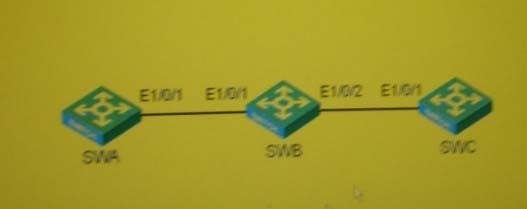
A. [SWA]display interface Ethernet 1/0/1Ethernetl/0/1 current state: UP ......
PVID: 1
Mdi type: auto
Link delay is 0(sec)
Port link-type: trunk
VLAN passing: 1 (default vlan), 10,20
VLAN permitted: 1 (default vlan), 2-4094
Trunk port encapsulation: IEEE 802.1q
B. [SWB]display interface Ethernet 1/0/1Ethernetl/0/1 current state: UP ......
PVID: 1
Mdi type: auto
Link delay is 0(sec)
Port link-type: trunk
VLAN passing: 1 (default vlan), 10,20
VLAN permitted: 1 (default vlan), 2-4094
Trunk port encapsulation: IEEE 802.1q
C. [SWB]display interface Ethernet 1/0/2Ethernetl/0/2 current state: UP ......
PVID: 1
Mdi type: auto
Link delay is 0(sec)
Port link-type: trunk
VLAN passing: 1 (default vlan), 10,20
VLAN permitted: 1 (default vlan), 2-4094
Trunk port encapsulation: IEEE 802.1q
D. [SWC]display interface Ethernet 1/0/1Ethernetl/0/1 current state: UP ......
PVID: 1
Mdi type: auto
Link delay is 0(sec)
Port link-type: trunk
VLAN passing: 1 (default vlan), 10,20
VLAN permitted: 1 (default vlan), 2-4094
Trunk port encapsulation: IEEE 802.1q
Correct Answer: AD
Section: (none) Explanation
Explanation/Reference:
QUESTION 45
在如图所示的交换网络中，三台交换机都只有缺省VLAN 1,三台交换机的互联端口都为Trunk,且允许所有 VLAN通过，三台交换机都开启了全局和端口的GVRP功能在交换机SVVA上创建了 VLAN10,在交换机SWC 上创建了 VLAN20,在三台交换机上査看各Trunk端口状态信息，下面显示正确的是(选择一项或多项）
A. [SWA]display interface Ethernet 1/0/1 Ethernetl/0/1 current state: UP ......
Mdi type: auto
Link delay is 0(sec)
Port link-type: trunk
VLAN passing: 1 (default vlan), 10
VLAN permitted: 1 (default vlan), 2-4094
Trunk port encapsulation: IEEE 802.1q
B. [SWB]display interface Ethernet 1/0/1Ethernet1/0/1 current state: UP ......
PVID: 1
Mdi type: auto
Link delay is 0(sec)
Port link-type: trunk
VLAN passing: 1 (default vlan), 10
VLAN permitted: 1 (default vlan), 2-4094
Trunk port encapsulation: IEEE 802.1q
C. [SWB]display interface Ethernet 1/0/2Ethernet1/0/2 current state: UP ......
PVID: 1
Mdi type: auto
Link delay is 0(sec)
Port link-type: trunk
VLAN passing: 1 (default vlan), 10
VLAN permitted: 1 (default vlan), 2-4094
Trunk port encapsulation: IEEE 802.1q
D. [SWC]display interface Ethernet 1/0/1Ethernet1/0/1 current state: UP ......
PVID: 1
Mdi type: auto
Link delay is 0(sec)
Port link-type: trunk
VLAN passing: 1 (default vlan), 10
VLAN permitted: 1 (default vlan), 2-4094
Trunk port encapsulation: IEEE 802.1q
Explanation/Reference:
QUESTION 46
在图示的组网模型中，配置完成后，发现用户认证失败，那么该故障可能的原因是
A. RADIUSServer上没有配置该用户名
B. RADIUSClient上没有指定缺省域
C. RADIUSServer与RAD旧s Client之间的报文共享密钥不一致
D. RADIUSServer与RAD旧s Client之间的网线没有连接
Correct Answer: ABCD
Section: (none) Explanation
QUESTION 47
交换机SWA上启用了GVRP,设置了 Hold定时器的值为100厘秒，现在要修改其他定时器的值，下列配置正确的是
A. [SWA-Ethernet1/0/1]garptimer join 50
B. [SWA-Ethernet1/0/1]garp timer join 200
C. [SWA-Ethernet1/0/1]garptimer leave 400
D. [SWA]garp timer leaveall 415
Correct Answer: B
Section: (none) Explanation
Explanation/Reference:
QUESTION 48
如果交换机的某个端口下同时开启了基于端口的VLAN、基于MAC地址的VLAN、基于协议的VLAN和基于IP 子网的VLAN,则缺省情况下，VLAN将按照顺序进行匹配
A. 端口VLAN MACVLAN 协议 VLAN IP 子网 VLAN
B. 端口VLAN IP子网 VLAN 端口VLAN MAC VLAN
C. MACVLAN 端口VLAN 协议VLAN 子网VLAN
D. MACVLAN 子网VLAN 协议VLAN 端口VLAN
Correct Answer: D
Section: (none) Explanation
Explanation/Reference:
QUESTION 49
如下哪些报文是TACACS+的认证报文
A. start
B. Request
C. Rsponse
D. Continue
Correct Answer: AD
Section: (none) Explanation
QUESTION 50
下面哪种划分VLAN的方法具有当用户物理位置移动时，即从一个交换机换到其他的交换机时，VLAN不用重新配置的优点-（选择一项或多项）
A. 基于端口的VLAN
B. 基于MAC地址的VLAN
C. 基于协议的VLAN
D. 基于IP子网的VLAN
Correct Answer: BCD
Section: (none) Explanation
QUESTION 51
关于根桥保护，以下说法正确的有
A. 没有配置根桥保护时，根桥收到优先级更高的BPDU会失去根桥的地位
B. 配置根桥保护后，端口收到了优先级高的BPDU,这些端口的状态将被设置为Listening不再转发报文
C. 端口会经历从Listening状态到Fonwarding状态的转变，在此期间如果端口没有收到更优的BPDU 时，端口会恢复原来的转发状态 D. 根桥保护在端口视图配置
Correct Answer: ABCD
Section: (none) Explanation
Explanation/Reference:
QUESTION 52
在图示的组网模型中，如果RAD旧sClient上收到Accoing那么下列说法可能正确的是
A. 该报文是Host发出的
B. 该报文是RADIUSServer发出的
C. 该报文是停止计费响应报文
D. 该报文是开始计费响应报文
Correct Answer: BC
Section: (none) Explanation
QUESTION 53 主机PCA、PCB 和 PCC 分别连接在交换机 SWA 的 GigabitEthernet1/0/1 GigabitEthernet1/0/2 和 GigabitEthernet1/0/3端口分别属于VLAN2、VLAN3和VLAN10,并且主机ife址都处于同一网段要求PCA和 PCB都能访问PCC,但PCA和PCB之间不能互访，则在SWA的配置过程中，应包括下列哪项配置-
A. [SWA]vlan2 [SWA-vlan2]port GigabitEthernet 1/0/1
B. [SWA]vlan3 [SWA-vlan3]port GigabitEthernet 1/0/2
C. [SWA]vlan10 [SWA-vlan 10]isolate-user-vlan enable
D. [SWA]isolate-user-vlan 10 secondary 2 3
[SWA]vian10 [SWA-vlan 10]port GigabitEthernet 1/0/3
Correct Answer: ABC
Section: (none) Explanation
Explanation/Reference:
QUESTION 54 交换机SWA 的端口 Ethemet1/0/1、Ethernet1/0/2 和 Ethernet1/0/3 分别为 Access、Trunk和 Hybrid 端口，
PVID都为VLAN10在SWA上执行命令undo vlan10后，査看各端口配置可以看到下列哪-配置
A. interfaceEthernet1/0/1
B. interfaceEthernet1/0/1 port access vlan 10
C. interface Ethernet 1/0/2 port link-type trunk port trunk permit vlan 1
D. interface Ethernet 1/0/2 port link-type trunk port trunk permit vlan 1 port trunk pvid vlan 10
E. interfaceEthernet1/0/3 port link-type hybrid port hybrid vlan 1 untagged
F. interfaceEthernet1/0/3 port link-type hybrid port hybrid vlan 1 untagged port hybrid pvid vlan 10
G. 以上配置全部有误
Correct Answer: ADF
Section: (none) Explanation
Explanation/Reference:
QUESTION 55
在如图所示的交换网络中，交换机SWA上设置VLAN10为Isolate-user-vlanVLAN2和VLAN3为VLAN 10 的 Secondary VLAN ；交换机 SWB 上创建 VLAN2?VLAN20,并且设置 VLAN20 为Isolate-user-vlan, VLAN4为
VLAN20的Secondary VLA 按照如图所示设置好各设备的IP地址后，可以判断
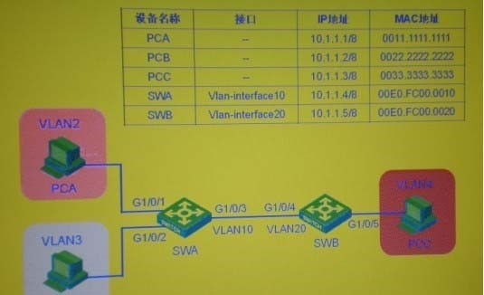
A. PCA可以和PCB互通
B. PCA可以和PCC互通
C. PCA可以和SWA互通
D. PCA可以和SWB互通
E. SWA可以和SWB互通
Correct Answer: BDE
Section: (none) Explanation
Explanation/Reference:
QUESTION 56
对于SSH用户采用publickey认证方式时，在配置密钥方面的描述哪些是正确的-
A. 需要在服务器端配置客户端的RSA主机私钥
B. 需要客户端为该SSH用户指定与主机公钥对应的RSA私钥
C. 可以采用拷贝粘贴的方式将客户端的主机公钥配置到服务器端
D. 不能通过拷贝粘贴的方式将客户端的主机私钥配置到服务器端
Correct Answer: BC
Section: (none) Explanation
QUESTION 57 在如图所示的交换网络中，交换机SWA上设置VLAN10为Isolate-user-vlan VLAN2和VLAN3为VLAN 10 的 Secondary VLAN ；交换机 SWB 上创建 VLAN2?VLAN20,并且设置 VLAN20 为Isolate-user-vlan, VLAN4 为 VLAN20 的 Secondary VLAN设置好各设备的 IP 地址后，在 SWA 上査看MAC地址表，将显示PCB属于
（选择一项或多项）
A. VLAN 1
B. VLAN2
C. VLAN3
D. VLAN4
E. VLAN 10
F. VLAN20
Correct Answer: CE
Section: (none) Explanation
Explanation/Reference:
QUESTION 58
如下信息是某H3C网络设备上的snmp相关配置：
snmp-agent
snmp-agent local-engineid 800007DB00E0FC79887C6877
snmp-agent community read public snmp-agent community write private snmp-agent sys-info version all
对此设备进行snmp访问的结果描述正确的是
A. 可以成功通过snmpv1访问和设置此设备
B. 可以成功通过snmpv2c访问和设置此设备
C. 可以成功通过snmpV3访问和设置此设备
D. 无论采用那个版本，都无法访问和设置此设备
Correct Answer: AB
Section: (none) Explanation
Explanation/Reference:
QUESTION 59 在如图所示的交换网络中，交换机SWA上设置VLAN10为Isolate-user-vlan VLAN2和VLAN3为VLAN 10 的 Secondary VLAN ；交换机 SWB 上创建 VLAN2-VLAN20,并且设置 VLAN20 为Isolate-user-vlan, VLAN4为
VLAN20的Secondary VLAN。 按照如图所示设置好各设备的IP地址后，在SWA和SWB上都开启了本地代理
ARP功能。 初时，交换机和pc没有学习到各自对应的ARP表项在PCA ping PCB的过程中，PCA会发送
ARP请求PCB收到ARP请求报文后发送的目的mac响应中，目的MAC地址为
A. FFFF.FFFF.FFFF
B. 0011.1111.1111
C. 00E0.FC00.0010
D. 00E0.FC00.0020
Correct Answer: D
Section: (none) Explanation
Explanation/Reference:
QUESTION 60 在如图所示的交换网络中，交换机SWA上设置VLAN10为Isolate-user-vlan VLAN2和VLAN3为VLAN 10 的 Secondary VLAN ；交换机 SWB 上创建 VLAN2?VLAN20,并且设置 VLAN20 为Isolate-user-vlan, VLAN4为
VLAN20的Secondary VLA 按照如图所示设置好各设备的IP地址后，如果在SWA和SWB上都开启了本地代
理ARP功能，并且SWA和SWB都允许发送ICMP报文，则在PCA上执行命令tracert 10.1.1.2, PCA上将显示需要经过跳才能到达PCB（请填写阿拉伯数字）
Correct Answer: 2
Section: (none) Explanation
Explanation/Reference:
QUESTION 61
在如图所示的交换网络中，交换机SWA上设置VLAN10为Isolate-user-vlan VLAN2和VLAN3为VLAN 10 的 Secondary VLAN ；交换机 SWB 上创建 VLAN2?VLAN20,并且设置 VLAN20 为Isolate-user-vlan, VLAN4为
VLAN20的Secondary VLA 按照如图所示设置好各设备的IP地址后，如果在SWA和SWB上都开启了本地 ARP代理功能，并且SWA和SWB都允许发送ICMP报文，则在PCA上执行命令tracert 10.1.1.2, PCA上显示第一跳到达的目的IP地址为
Correct Answer: 10.1.1.5
Section: (none) Explanation
Explanation/Reference:
QUESTION 62
在如图所示的交换网络中，交换机SWA上设置VLAN10为Isolate-user-vlan VLAN2和VLAN3为VLAN 10 的 Secondary VLAN ；交换机 SWB 上创建 VLAN2?VLAN20,并且设置 VLAN20 为Isolate-user-vlan, VLAN4为
VLAN20的Secondary VLA 按照如图所示设置好各设备的IP地址后，在SWA和SWB上都开启了本地代理 ARP功能 初时，交换机和pc没有学习到各自对应的ARP表项在PCA ping PCB的过程中，PCA会发送ARP 请求，交换机向PCB转发的ARP请求报文的源MAC地址为
A. 0000.0000.0000
B. 0011.1111.1111
C. 00E0.FC00.0010
D. 00E0.FC00.0020
Correct Answer: D
Section: (none) Explanation
Explanation/Reference:
QUESTION 63 在如图所示的交换网络中，交换机SWA上设置VLAN10为Isolate-user-vlan VLAN2和VLAN3为VLAN 10 的 Secondary VLAN ；交换机 SWB 上创建 VLAN2-VLAN20,并且设置 VLAN20 为Isolate-user-vlan, VLAN4为
VLAN20的Secondary VLAN 按照如图所示设置好各设备的IP地址后，下面说法正确的为（选择一项或多项）
A. PCA的报文从SWA的GigabitEther1/0/1端口进入，从GigabitEther1/0/3 端口出来后不带VLAN Tag
B. PCA的报文从SWA的GigabitEthem1/0/3端口出来，进入SWB的GigabitEthe1/0/3端口后所带的 VLAN Tag 为 VLAN2
C. SWB访问 PCA 时，报文从 SWB 的 GigabitEthem1/0/4所带的 VLAN Tag 为 VLAN 1
D. SWB的报文从SWA的GigabitEthem1/0/3端口进入,从GigabitEthem1/0/1端口出来后所带的VLANTag 为 VLAN2
Correct Answer: A
Section: (none) Explanation
Explanation/Reference:
QUESTION 64
在SNMPvl的消息中，由Agent发往NMS的消息有
A. GetRequest
B. GetNextRequest
C. SetRequest
D. GetResponse
E. Trap
Correct Answer: DE
Section: (none) Explanation
QUESTION 65 在如图所示的交换网络中，交换机SWA上设置VLAN10为Isolate-user-vlanVLAN2和VLAN3为VLAN10的 Secondary VLAN在以下 交换机SWA上VLAN10虚接口链路层UP?(选择一项或多项）
A. GigabitEthernet1/0/1端口UP
B. GigabitEthernet1/0/2端口 UP
C. GigabitEthernet1/0/3端口UP
D. GigabitEthernet1/0/1、GigabitEthernet1/0/2和 GigabitEthem1/0/3三个端口都 UP
Correct Answer: ABCD
Section: (none) Explanation
Explanation/Reference:
QUESTION 66 主机PCA、PCB 和 PCC 分别连接在交换机 SWA 的 GigabitEthernet1/0/1端□ UP、Ethernet1/0/2 和
Ethernet1/0/3 端
口上，并且其地址处于同一网段，i交换&SWA上配
[SWA]vlan 10
[SWA-vlan10]port ethernet 1/0/1
[SWA-vlan10]quit
[SWA]vlan 20
[SWA-vlan20]port ethernet 1/0/2
[SWA-vlan20]quit
[SWA]vlan 30
[SWA-vlan30]port ethernet 1/0/3
[SWA-vlan30]quit
[SWA]interface ethernet 1/0/1
[SWA-Ethernet1/0/1]port link-type hybrid
[SWA-Ethernet1 /0/1 ]port hybrid vlan 10 30 untagged
[SWA-Ethernet1/0/1]quit
[SWA]interface ethernet 1/0/2
[SWA-Ethernet1/0/2]port link-type hybrid
[SWA-Ethernet1 /0/2]port hybrid vlan 20 30 untagged
[SWA-Ethernet1/0/2]quit
[SWA]interface ethernet 1/0/3
[SWA-Ethernet1/0/3]port link-type hybrid
[SWA-Ethernet1 /0/3]port hybrid vlan 10 20 30 untagged
-于上述信息可以判断__（选择一项或多项）
A. PCA和PCB之间可以互通
B. PCA和PCC之间可以互通
C. PCB和PCC直接可以互通
D. 三台PC之间两两不能互通
E. 配置命令有误
Correct Answer: BC
Section: (none) Explanation Explanation/Reference:
QUESTION 67
要通过SNMP査询某设备的CPU利用率，在执行査询动作之前，网络管理应用程序应该掌握下面的哪些信息
A. 设备的SNMP团体属性 B. 设备的管理IP地址
C. 设备CPU利用率的OID
D. 设备CPU利用率的实例ID
Correct Answer: ABCD
Section: (none) Explanation
QUESTION 68
下列有关远程端口镜像描述正确的有
A. 远程端口镜像必须包含镜像源交换目的交换机
B. 远程端口镜像的反射端口是必不可少的
C. 远程端口镜像的ProbeVLAN应该禁止MAC地址学习
Correct Answer: AC
Section: (none) Explanation
QUESTION 69
在NTP客户端和服务器模式中，下列哪种NTP验证组合可以成功同步?
A. NTP客户端和服务器都使能验证
B. NTP客户端和服务器都未使能验证
C. NTP客户端使能验证，服务器端没有使能验证
D. NTP客户端未使能验证，服务器端使能验证
Correct Answer: ABD
Section: (none) Explanation
QUESTION 70 在如图所示的交换网络中，交换机SWA上设置VLAN10为Super VLAN, VLAN2和VLAN3为VLAN10的 Sub VLAN,端口 Ethernet1/0/3为Trunk端口，PVID 为 VLAN1,允许所有 VLAN 通过；交换机 SWB上创建 VLAN2~VLAN20,端口Ethernet1/0/4为Trunk端口，PVID 为 VLAN1,允许所有 VLAN 通过按照如图所示设置好各设备的IP地址后，可以判断_
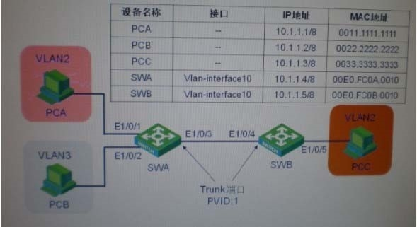
A. PCA可以和PCB互通
B. PCA可以和PCC互通
C. PCA可以和SWA互通
D. PCA可以和SWB互通
E. 以上答案都不对
Correct Answer: BC
Section: (none) Explanation
Explanation/Reference:
QUESTION 71 在如图所示的交换网络中，交换机SWA上设置VLAN10为Super VLAN, VLAN2和VLAN3为VLAN10的 Sub VLAN,端口 Ethernet1/0/3为Trunk端口，PVID 为 VLAN1,允许所有 VLAN 通过；交换机 SWB上创建 VLAN2~VLAN20,端口Ethernet1/0/4为Trunk端口，PVID 为 VLAN1,允许所有 VLAN 通过按照如图所示设置好各设备的IP地址后，可以判断_（选择一项或多项）
A. SWB可以和PCA互通
B. SWB可以和PCB互通
C. SWB可以和PCC互通
D. SWB可以和SWA互通
E. 以上答案都不对
Correct Answer: E
Section: (none) Explanation
Explanation/Reference:
QUESTION 72 在如图所示的交换网络中，交换机SWA上设置VLAN10为Super VLAN, VLAN2和VLAN3为VLAN10的 Sub VLAN,端口 Ethernet1/0/3为Trunk端口，PVID 为 VLAN1,允许所有 VLAN 通过；交换机 SWB上创建 VLAN2~VLAN20,端口Ethernet1/0/4为Trunk端口，PVID 为 VLAN1,允许所有 VLAN 通过按照如图所示设置好各设备的IP地址后，在SWA上査看MAC地址表，可以判断PCC属于
A. VLAN 1
B. VLAN2
C. VLAN3
D. VLAN 10
Correct Answer: B
Section: (none) Explanation
Explanation/Reference:
QUESTION 73 在如图所示的交换网络中，交换机SWA上设置VLAN10为Super VLAN, VLAN2和VLAN3为VLAN10的 Sub VLAN,端口 Ethernet1/0/3为Trunk端口，PVID 为 VLAN1,允许所有 VLAN 通过；交换机 SWB上创建 VLAN2~VLAN20,端口Ethernet1/0/4为Trunk端口，PVID 为 VLAN1,允许所有 VLAN 通过按照如图所示设置好各设备的IP地址后，可以判断_下面说法正确的为
A. PCA的报文从 SWA 的 Ethernet1/0/1 端口进入，从 Ethemet1/0/3端口出来不带tag
B. PCA的报文从 SWA 的 Ethernet1/0/1 端口进入，从 Ethemet1/0/3端口出来所带VLAN Tag VLAN 1
C. PCA的报文从SWA的Ethernet1/0/1端口进入,从Ethernet1/0/3端口出来后所带的VLANTag为VLAN2
D. PCA的报文从SWA的Ethernetl/0/1端口进入,从Ethernet1/0/3端口出来后所带的VLANTag为VLAN 10
Correct Answer: C
Section: (none) Explanation
Explanation/Reference:
QUESTION 74 在如图所示的交换网络中，交换机SWA上设置VLAN10为SuperVLAN, VLAN2和VLAN3为VLAN10的Sub VLAN,要求PCA和PCB可以互访则交换机SWA上的配置应包括下列哪些项-
A. [SWA]vlan2
[SWA-vlan2]port Ethernet 1/0/1
B. [SWA]vlan3
[SWA-vlan3]port Ethernet 1/0/2
C. [SWA]vlan10
[SWA-vlan 10]super vlan
D. [SWA]vlan 10
[SWA-vlan 10]supervlan
E. [SWA]vlan10
[SWA-vlan 10]subvlan 2 3
F. [SWA]supervlan10 subvlan 2 3
G. [SWA]vlan10
[SWA-vlan10] local-proxy-arp enable
[SWA] interface Vlan-interface 10
[SWA-Vlan-interface10]ip address 10.1.1.4 255.255.255.0
H. [SWA]interfaceVlan-interface 10
[SWA-Vlan-interface10]ip address 10.1.1.4 255.255.255.0
[SWA-Vlan-interface10]local-proxy-arp enable
Correct Answer: ABDEH
Section: (none) Explanation
Explanation/Reference:
QUESTION 75
在如图所示的交换网络中，交换机SWA上设置VLAN10为SuperVLAN, VLAN2和VLAN3为VLAN10的Sub
VLAN,要求PCA和PCB可以互访在完成交换机SWA的配置后，在PCA可以ping通PCB之后，关于PCA、
PCB和交换机SWA上的ARP表项，下面描述正确的为_(选择一项i多项）
A. 在PCA 上学习到的 ARP 表项为：Internet AddressPhysical AddressType
10.1.1.2 0022-2222-2222 dynamic
B. 在PCB 上学习到的 ARP 表项为：Internet AddressPhysical AddressType
10.1.1.1 00E0-FC0A-0010 dynamic
C. 在 SWA 上学习到的 ARP i项为：IP Address MAC Address VLAN IDInterfaceAging Type 10.1.1.1 0011-1111-11112Eth1/0/1 20D 10.1.1.2 0022-2222-22223Eth 1/0/2 20D
D. 以上各项都不正确
Correct Answer: BC
Section: (none)
Explanation
Explanation/Reference:
QUESTION 76 在如图所示的交换网络中，交换机SWA上设置VLAN10为Super VLAN, VLAN2和VLAN3为VLAN10的 Sub VLAN,端口 Ethernet1/0/3为Trunk端口，PVID 为 VLAN1,允许所有 VLAN 通过；交换机 SWB上创建
VLAN2~VLAN20,端口Ethernet1/0/4为Trunk端口，PVID 为 VLAN1,允许所有 VLAN 通过SWA上査看
Ethernet 1/0/3端口信息，下面显示正确的为
A. [SWA]display interface Ethernet 1/0/3Ethernet1/0/3 current state: UP ......
PVID: 1
Mdi type: auto
Link delay is 0(sec)
Port link-type: trunk
VLAN passing: 1 (default vlan), 2-3,10
VLAN permitted: 1 (default vlan), 2-4094
Trunk port encapsulation: IEEE 802.1q
B. [SWA]display interface Ethernet 1/0/3Ethernet1/0/3 current state: UP ......
PVID: 1
Mdi type: auto
Link delay is 0(sec)
Port link-type: trunk
VLAN passing: 1 (default vlan), 2-3
VLAN permitted: 1 (default vlan), 2-9, 11-4094
Trunk port encapsulation: IEEE 802.1q
C. [SWA]display interface Ethernet 1/0/3Ethernet1/0/3 current state: UP ......
PVID: 1
Mdi type: auto
Link delay is 0(sec)
Port link-type: trunk
VLAN passing: 1 (default vlan), 2
VLAN permitted: 1 (default vlan), 2-9, 11-4094
Trunk port encapsulation: IEEE 802.1q
D. [SWA]display interface Ethernet 1/0/3Ethernet1/0/3 current state: UP ...... PVID: 1
Mdi type: auto
Link delay is 0(sec)
Port link-type: trunk
VLAN passing: 1 (default vlan), 2
VLAN permitted: 1 (default vlan), 2-4094
Trunk port encapsulation: IEEE 802.1q
Correct Answer: B
Section: (none) Explanation
Explanation/Reference:
QUESTION 77 关于Isolate-user-vlan技术和Super VLAN技术的描述，下面正确的是
A. Isolate-user-vlan是一个二层VLAN技术，所以支持isolate-user-vlan技术的交换机都是二层交换机
B. SuperVLAN技术也称为VLAN聚合:主要目的是为解决IP地址浪费或VLAN接口数量不够
C. SuperVLAN是一个三层VLAN技术，所以支持Super VLAN技术的交换机都是三层交换机
Correct Answer: BC
Section: (none) Explanation
QUESTION 78 在交换机SWA上执行displayinterface Ethernet 1/0/1命令后，输出信息如下：
[SWA]display interface Ethernet 1/0/1
Ethernet1/0/1 current state: UP
PVID: 10
Mdi type: auto
Link delay is 0(sec)
Port link-type: trunk
VLAN passing: 1 (default vlan), 10
VLAN permitted: 1 (default vlan), 2-4094
Trunk port encapsulation: IEEE 802.1q
Port priority: 0
从以上输出可以判断
A. 端口Ethemetl/OM是一个Trunk端口，只允许VLAN 1和VLAN 10的数据侦通过
B. 不带VLAN标签的数据帧进入端口Ethernet1/0/1时会被打上VLAN1的标签
C. 带有VLAN1标签的数据侦离开端口Ethemet1/0/1时不会被剥离标签
D. 端口Ethemet1/0/1是一个Trunk端口，允许任意VLAN的数据帧通过
Correct Answer: CD
Section: (none) Explanation
Explanation/Reference:
QUESTION 79 关于Isolate-user-vlan 和Super VLAN的配置，下面描述正确的是
A. Isolate-user-vlan接口上开启本地代理ARP功能后可以实现不同SecondaryVLAN内的主机互通
B. SuperVLAN接口开启本地代理ARP功能后可以实现不同SubVLAN内的i机互通
C. 建立Isolate-user-vlan和Secondary VLAN映射关系后，系统将禁止向Secondary VLAN中添加/删除端口 以及删除VLAN的操作
D. 建立SuperVLAN和Sub VLAN映射关系后，系统将禁止向Sub VLAN中添加/删除端口以及刪除VLAN 的操作
Correct Answer: BC
Section: (none) Explanation
QUESTION 80
关于SuperVLAN和Sub VLAN的关系，下面描述正确的是
A. SuperVLAN相当于把Sub VLAN做了聚合，实现所有Sub VLAN共享同一个三层接口
B. SuperVLAN只建立三层接口，负责Sub VLAN的三层转发
C. Sub VLAN只包含物理端口，内部主机以Super VLAN接口地址作为网关
D. 虽然SuperVLAN配置时不可以包含物理端口，但建立Super VLAN和Sub VLAN间的映射关系后， SubVLAN包含的物理端口都属于Super VLAN
Correct Answer: ABC
Section: (none) Explanation
QUESTION 81
关于SuperVLAN技术中Sub VLAN间的互通说法正确的是
A. 不同SubVLAN内的主机IP地址都属于同一个网段，它们可以通过二层转发直接互通
B. 不同SubVLAN内的主机IP地址都属于同一个网段，但由于Sub VLAN的隔离作用，Sub VLAN间是没法实现互通的
C. 不同SubVLAN中的主机之间二层隔离，三层可以通过Super VLAN接口的普通代理ARP技术实现互 通
D. 不同SubVLAN中的主机之间二层隔离，三层可以通过Super VLAN接口的本地代理ARP技术实现互 通
Correct Answer: D
Section: (none) Explanation
QUESTION 82
对下列关于配置命令：
[H3C] ntp-service refclock-master 127.127.1.1 6
的理解，哪些是正确的
A. 该命令可以在所有H3C ?系列交换机上配置成功
B. 该命令是将本地时钟配置为系统的参考时钟
C. 成功配置此命令的设备，其用层数表示的时钟精度为6
D. 成功配置此命令的设备，可以作为时钟服务器对外提供时钟同步服务了
Correct Answer: BCD
Section: (none) Explanation
Explanation/Reference:
QUESTION 83
在H3C系列交换机上设置当前VLAN的类型为SuperVLAN的配置命令为
Correct Answer: supervlan
Section: (none) Explanation
Explanation/Reference:
QUESTION 84 主机PCA、PCB 和 PCC 分别与交换机 SWA 的 GigabitEthernet1/0/1 GigabitEthernet1/0/2 和
GigabitEthernet1/0/3端口相连，主机地址都处于同一网段，如果要实现PCA和PCB都能访问PCC,但PCA和
PCB之间互相隔离，下面哪些技术或方法可以实现客户的需求
A. 端口隔离技术
B. 利用端口Hybrid属性
C. Isolate-user-vlan 技术
D. SuperVLAN 技术
Correct Answer: ABC
Section: (none) Explanation
Explanation/Reference:
QUESTION 85
在H3C系列交换机上开启全局GVRP功能的配置命令为
A. GVRP
Correct Answer: A
Section: (none) Explanation
Explanation/Reference:
QUESTION 86
在H3C系列交换机上开启以太网端口的QinQ功能的配置命令为
A. qinq enable
Correct Answer: A
Section: (none) Explanation
Explanation/Reference:
QUESTION 87
在H3C系列交换机开启QinQ功能的端口上配置bpdu-tunnddotlq stp命令之前,在此端口上必须要配置的命令为
A. stp disable
Correct Answer: A
Section: (none) Explanation
Explanation/Reference:
QUESTION 88
如图所示的网络中，交换机SWA为二层交换机，路由器RTA为各PC的网关在路由器RTA上做了如下配置：
[RTA]interface Ethernet 0/0.1
[RTA-Ethernet0/0.1]ip address 10.10.10.1 255.255.255.0
[RTA-EthernetO/0.1 ]vlan-type dotlq vid 1
[RTA-Ethernet0/0.1 Jinterface ethernet 0/0.2
[RTA-Ethernet0/0.2]ip address 20.20.20.1 255.255.255.0
[RTA-Ethernet0/0.2]vlan-type dotlq vid 2
[RTA-Ethernet0/0.2]interface ethernet 0/0.3
[RTA-Ethernet0/0.3]ip address 30.30.30.1 255.255.255.0
[RTA-Ethernet0/0.3]vlan-type dotlq vid 3
交换机SWA上完成相配置后，PCA、PCB和PCC都可以ping通自己的网关，下面关于交换机SWA端口 Ethernet1/0/4正确的是（选择一项或多项）
A. interfaceEthernet1/0/4port link-mode bridge port link-type trunk
port trunk permit vlan all
B. interfaceEthernet1/0/4port link-mode bridge port link-type trunk port trunk permit vlan all
port trunk pvid vlan 2
C. interface Ethernet1/0/4port link-mode bridge port link-type trunk port trunk permit vlan all port trunk pvid vlan 3
D. interface Ethernet 1/0/4port link-mode bridge port link-type trunk port trunk permit vlan all port trunk pvid vlan 10
Correct Answer: D
Section: (none) Explanation
Explanation/Reference:
QUESTION 89
如图所示的网络中，在交换机SWA上完成相应配置后，交换机SWA接收到PCA访问PCB的数据帧时，根据来判断査MAC地址表还是査路由表
A. 数据帧的VLAN属性
B. 数据帧的目的MAC地址
C. 数据帧的源MAC地址
D. 数据帧的源MAC地址
E. 数据帧的源IP地址
Correct Answer: B
Section: (none) Explanation
Explanation/Reference:
QUESTION 90
如图所示的网络中，在交换机SWA上完成相应配置，且交换机SWA和各PC都学习到了相应的ARPPCA访问 PCB时发送了 ICMP请求报文，报文的目的MAC地址为_
A. FFFF.FFFF.FFFF
B. MAC-10
C. MAC-20
D. MAC-B
Correct Answer: B
Section: (none) Explanation
Explanation/Reference:
QUESTION 91
如图所示的网络中，在交换机SWA上完成相应配置，且交换机SWA和各PC都学习到了相应的ARPPCA访问 PCB发送了 ICMP请求报文，交换机SWA向PCB转发此MAC地址为
A. MAC_A
B. MAC10
C. MAC20
D. 0000.0000.0000
Correct Answer: C
Section: (none) Explanation
Explanation/Reference:
QUESTION 92
下面关于交换机VLAN间通信说法正确的是
A. 交换机划分VLAN后，只有本VLAN内的主机可以通信，VLAN间的主机是没有办法互通的
B. 二层交换机划分VLAN后，不同VLAN的主机可以借助路由器实现通信，方法是路由器到各个VLAN各有一个物理接口和一条物理连接
C. 二层交换机划分VLAN后，不同VLAN的主机可以借助路由器实现通信，方法是路由器用一个接口连接交换机的Trunk 口，且路由器必须支持802.1 Q协议
D. 三层交换机划分VLAN后，不同VLAN的主机可以实现通信，方法是三层交换机为每个VLAN创建一个虚拟的三层VLAN接口，需为VLAN接口配置相应的IP地址，此地址作为各自VLAN内主机的网关
Correct Answer: BCD
Section: (none) Explanation
QUESTION 93
下面关于三层交换机的说法正确的是
A. 三层交换机上实际上结合了二层交换机和路由器的部分功能，提高了网络集成度，增强了转发性能
B. 三层交换机在功能上实现了VLAN的划分、VLAN内部的二层交换和VLAN间路由的功能
C. 三层交换机中包含二层VLAN转发引擎和三层转发引擎两个部分
D. 三层交换机的三层转发引擎就相当于传统组网中的路由器的功能,使用硬件ASIC技术实现跨网段 的三层路由转发
Correct Answer: ABCD
Section: (none)
Explanation
QUESTION 94
三层交换机收到数据帧进行二/三层转发判
A. 如果数据帧的目的MAC地址是本交换机的VLAN接口MAC地址，交换机做三层转发
B. 如果数据帧的目的MAC地址不是本交换机的VLAN接口MAC地址，交换机査找MAC地址表做VLAN内二层转发
C. 如果数据帧的目的IP地址和源IP地址是同一网段，则交换机做二层转发
D. 如果数据帧的目的IP地址和源IP地址不是同一网段，则交换机査找路由表做三层转发
Correct Answer: AB
Section: (none)
Explanation
QUESTION 95
下面关于精确匹配交换机和 长匹配交换机的描述正确的是
A. 精确匹配交换机通过软件査找路由表进行逐包转发
B. 精确匹配交换机是在首包通过软件査找处理之后，再通过硬件完成后续报文的转发，但不能应对蠕虫病毒对路由造成的冲击
C. 长匹配交换机通过软件査找路由表进行逐
D. 长匹配交换机通过硬件表项来代替软件路由表，在査找时遵循 长匹配原则，在网络蠕虫极其严重的情况下，仍然能保证IP报文的线速转发
Correct Answer: BD
Section: (none)
Explanation
QUESTION 96
下面关于H3C三层交换机VLAN接口的IP地址描述正确的是
A. 只要给一个VLAN接口配置IP地址，交换机就具有三层路由转发功能
B. 只有给两个及两个以上的VLAN接口配置了IP地址，交换机才具有三层路由转发功能
C. 当给VLAN接口配置主IP地址时，如果接口上已经有主IP地址，必须删除原主IP地址才能配置新的主IP地址
D. 在删除VLAN接口的主IP地址之前必须先删除从IP地址
Correct Answer: BD
Section: (none)
Explanation
Explanation/Reference:
QUESTION 97
下面关于H3C交换机静态路由描述正确的是（选择一项或多项）
A. 二层交换机不支持路由转发功能，所以二层交换机不可以配置静态路由
B. 二层交换机可以配置静态路由
C. 只有三层交换机才可以配置静态路由
D. 交换机在配置静态路由时，可以直接指定出接口而不需要指定下一跳
Correct Answer: B
Section: (none)
Explanation
QUESTION 98 在交换机SWA上执行displayinterface Ethernet 1/0/1命令后，输出信息如下：
[SWA]display interface Ethernet 1/0/1
Ethernetl/0/1 current state: UP
PVID: 10
Mdi type: auto
Link delay is 0(sec)
Port link-type: trunk
VLAN passing: 1 (default vlan), 10
VLAN permitted: 1 (default vlan), 2-4094
Trunk port encapsulation: IEEE 802.1q
Port priority: 0
从以上输出可以判断
A. 端口Ethernetl/0/1是一个Trunk端口，允许所有VLAN的数据侦通过
B. 带有VLAN1标签的数据帧离开端口Ethernetl/0/1时会被剥离标签
C. 带有VLAN20标签的数据帧可以从端口Ethernetl/0/1转发出去
D. 带有VLAN10标签的数据帧进入端口Ethernetl/0/1时不会被丢弃
Correct Answer: AD
Section: (none) Explanation
Explanation/Reference:
QUESTION 99 在交换机SWA上执行display interface Ethernet 1/0/1命令后，输出信息如下:
[SWA]display interface Ethernet 1/0/1
Ethernetl/0/1 current state: UP
PVID: 10
Mdi type: auto
Link delay is 0(sec)
Port link-type: trunk
VLAN passing: 1 (default vlan), 10
VLAN permitted: 1 (default vlan), 2-4094
Trunk port encapsulation: IEEE 802.1q
Port priority: 0
从以上输出可以判断
A. 端口Ethernetl/0?是一个Trunk端口，只允许VLAN 10的数据帧通过
B. 不带VLAN标签的数据帧进入端口Ethernet1/0/1时会被打上VLAN10的标签
C. 带有VLAN1标签的数据帧进入端 Ethernet1/0/1时不会被丢弃
D. 带有VLAN10标签的数据帧Ethernetl/0/1时不会被剥离标签
Correct Answer: BC
Section: (none) Explanation
Explanation/Reference:
QUESTION 100 在交换机SWA上执行display interface Ethernet 1/0/1命令后，输出信息如下: [SWA]display interface Ethernet 1/0/1
Ethernetl/0/1 current state: UP
PVID: 10
Mdi type: auto
Link delay is 0(sec)
Port link-type: trunk
VLAN passing: 1 (default vlan), 10
VLAN permitted: 1 (default vlan), 2-4094
Trunk port encapsulation: IEEE 802.1q
Port priority: 0
从以上输出可以判断
A. 带有VLAN10标签的数据帧离开端口 Ethemet1/0/1时会被剥离标签
B. 带有VLAN20标签的数据帧不能从端口Ethemetl/O/1转发出去
C. 带有VLAN1标签的数据侦进入端口Ethemet1/0/1时会被丢弃
D. 带有VLAN10标签的数据帧进入端口 Ethernet1/0/1时会被丢弃
Correct Answer: AB
Section: (none) Explanation
Explanation/Reference:
QUESTION 101 主机PCA的IP地址为40.1.1.1,MAC地址为0011.1111.11, 接在交换机的GigabitEthernet1/0/1口，在交换机上配置了如下命令：
[H3C]vlan 10
[H3C-vlan10]quit
[H3C]vlan 20
[H3C-vlan20]protocol-vlan ipv4
[H3C-vlan20]quit
[H3C]vlan 30
[H3C-vlan30]quit
[H3C]mac-vlan mac-address 0022-2222-2222 vlan 30
[H3C]vlan 40
[H3C-vlan40]ip-subnet-vlan ip 40.1.1.0 255.255.255.0
[H3C-vlan40]quit
[H3C]interface GigabitEthernet 1/0/1
[H3C-GigabitEthernet1/0/1]port link-type hybrid
[H3C-GigabitEthernet1/0/1]port hybrid pvid vlan 10
[H3C-GigabitEthernet1/0/1]port hybrid vlan 10 20 30 40 untagged
[H3C-GigabitEthernet1/0/1]port hybrid protocol-vlan vlan 20 0
[H3C-GigabitEthernet1/0/1]port hybrid ip-subnet-vlan vlan 40
[H3C-GigabitEthernet1 /0/1 ]mac-vlan enable
配置完成后，可以判断PCA会加入
A. VLAN 10
B. VLAN20
C. VLAN30
D. VLAN40
Correct Answer: D
Section: (none) Explanation
Explanation/Reference:
QUESTION 102
主机PCA的IP地址为40.1.1.1,MAC地址为0011.1111.1111,连接在交换机SWA的GigabitEthernet1/0/1端口上，在交换机SWA上配置了如下命令：
[SWA]vlan 10
[SWA-vlan10]quit
[SWA]vlan 20
[SWA-vlan20]protocol-vlan ipv4
[SWA-vlan20]quit
[SWA]vlan 30
[SWA-vlan30]quit
[SWA]mac-vlan mac-address 0011-1111-1111 vlan 30
[SWA]vlan 40
[SWA-vlan40]ip-subnet-vlan ip 50.1.1.0 255.255.255.0
[SWA-vlan40]quit
[SWA]interface GigabitEthernet 1/0/1
[SWA-GigabitEthernet1/0/1]port link-type hybrid
[SWA-GigabitEthernet1/0/1]port hybrid pvid vlan 10
[SWA-GigabitEthernet1/0/1]port hybrid vlan 10 20 30 40 untagged
[SWA-GigabitEthernet1/0/1]port hybrid protocol-vlan vlan 20 0
[SWA-GigabitEthernet1/0/1]port hybrid ip-subnet-vlan vlan 40
[SWA-GigabitEthernet1/0/1]mac-vlan enable
[SWA-GigabitEthernet1/0/1]vlan precedence ip-subnet-vlan
配置完成后，可以判断PCA会加入
A. VLAN 10
B. VLAN20
C. VLAN30
D. VLAN40
Correct Answer: C
Section: (none) Explanation
Explanation/Reference:
QUESTION 103
在如图所示的交换网络中，三台交换机都只有缺省VLAN1,三台交换机的互联端口都为Trunk,且允许所有 VLAN通过，三台交换机都开启了全局和端口的GVRP功能在交换机SWA上创建了 VLAN10,在SWC上创建
了 VLAN20,并且在交换机SWA上设置Ethemet1/0/1端口的GVRP注册模式为Fixed,在三台交换机査看各
Trunk端口状态信息，下面显示正确的是 （选择一项或多项）
A. [SWA]display interface Ethernet 1/0/1Ethernet1/0/1 current state: UP ......
PVID: 1
Mdi type: auto
Link delay is 0(sec)
Port link-type: trunk
VLAN passing: 1 (default vlan), 10,20
VLAN permitted: 1 (default vlan), 2-4094
Trunk port encapsulation: IEEE 802.1q
B. [SWB]display interface Ethernet 1/0/1Ethernetl/0/1 current state: UP ......
PVID: 1
Mdi type: auto
Link delay is 0(sec)
Port link-type: trunk
VLAN passing: 1 (default vlan), 10,20
VLAN permitted: 1 (default vlan), 2-4094
Trunk port encapsulation: IEEE 802.1q
C. [SWB]display interface Ethernet 1/0/2Ethernetl/0/2 current state: UP ......
PVID: 1
Mdi type: auto
Link delay is 0(sec)
Port link-type: trunk
VLAN passing: 1 (default vlan), 10,20
VLAN permitted: 1 (default vlan), 2-4094
Trunk port encapsulation: IEEE 802.1q
D. [SWC]display interface Ethernet 1/0/1Ethernetl/0/1 current state: UP ......
PVID: 1
Mdi type: auto
Link delay is 0(sec)
Port link-type: trunk
VLAN passing: 1 (default vlan), 10,20
VLAN permitted: 1 (default vlan), 2-4094
Trunk port encapsulation: IEEE 802.1q
Correct Answer: D
Section: (none) Explanation
Explanation/Reference:
QUESTION 104
在如图所示的交换网络中，三台交换机都只有缺省VLAN1,三台交换机的互联端口都为Trunk,且允许所有VLAN通过，三台交换机都开启了全局和端口的GVRP功能在交换机SWA上创建了 VLAN10,
在SWC上创建了 VLAN20,并且在交换机SWA上设置Ethemet1/0/1端口的GVRP注册模式为Fixed, 在三台交换机査看各Tmnk端口状态信息，下面显示正确的是（选择一项或多项）
A. [SWA]display interface Ethernet 1/0/1Ethernetl/0/1 current state: UP ......
PVID: 1
Mdi type: auto
Link delay is 0(sec)
Port link-type: trunk
VLAN passing: 1 (default vlan), 10
VLAN permitted: 1 (default vlan), 2-4094
Trunk port encapsulation: IEEE 802.1q
B. [SWB]display interface Ethernet 1/0/1Ethernet1/0/1 current state: UP ......
PVID: 1
Mdi type: auto
Link delay is 0(sec)
Port link-type: trunk
VLAN passing: 1 (default vlan), 10
VLAN permitted: 1 (default vlan), 2-4094
Trunk port encapsulation: IEEE 802.1q
C. [SWB]display interface Ethernet 1/0/2Ethernet1/0/2 current state: UP ......
PVID: 1
Mdi type: auto
Link delay is 0(sec)
Port link-type: trunk
VLAN passing: 1 (default vlan), 10
VLAN permitted: 1 (default vlan), 2-4094
Trunk port encapsulation: IEEE 802.1q
D. [SWC]display interface Ethernet 1/0/1Ethernet1/0/1 current state: UP ......
PVID: 1
Mdi type: auto
Link delay is 0(sec)
Port link-type: trunk
VLAN passing: 1 (default vlan), 10
VLAN permitted: 1 (default vlan), 2-4094
Trunk port encapsulation: IEEE 802.1q
Correct Answer: AB
Section: (none) Explanation
Explanation/Reference:
QUESTION 105
在如图所示的交换网络中，三台交换机都只有缺省VLAN1,三台交换机的互联端口都为Trunk,且允许所有
VLAN通过，三台交换机都开启了全局和端口的GVRP功能在交换机SWA上创建了 VLAN10,在交换机SWC
上创建了 VLAN20,并且在交换机SWA上设置Ethernetl/0/1端口的GVRP注册模式为 Fixed,在SWA上执行display vlanSWA上存在的VLAN有（选择一项或多项）
A. VLAN1
B. VLAN 10
C. VLAN20
Correct Answer: AB
Section: (none) Explanation
Explanation/Reference:
QUESTION 106
在如图所示的交换网络中，三台交换机都只有缺省VLAN1,三台交换机的互联端口都为Trunk,且允许所有
VLAN通过，三台交换机都开启了全局和端口的GVRP功能在交换机SWA上创建了 VLAN10,在交换机SWC 上创建了 VLAN20,并且在交换机SWA上设置Ethernetl/0/1端口的GVRP注册模式为Fixed,在SWB上执行 display vlan命令査看VLASWB上存在的VLAN有（选择一项或多项）
A. VLAN1
B. VLAN 10
C. VLAN20
Correct Answer: ABC
Section: (none) Explanation
Explanation/Reference:
QUESTION 107
在如图所示的交换网络中，三台交换机都只有缺省VLAN1,三台交换机的互联端口都为Trunk,且允许所有
VLAN通过，三台交换机都开启了全局和端口的GVRP功能在交换机SWA上创建了 VLAN10,在交换机SWC 上创建了 VLAN20,并且在交换机SWA上设置Ethernetl/0/1端口的GVRP注册模式为Forbidden,在三台交换机上査看各Trunk端口状下面显示正确的是 (选择一项或多项）
A. [SWA]display interface Ethernet 1/0/1Ethernet1/0/1 current state: UP ......
PVID: 1
Mdi type: auto
Link delay is 0(sec)
Port link-type: trunk
VLAN passing: 1 (default vlan),
VLAN permitted: 1 (default vlan), 2-4094
Trunk port encapsulation: IEEE 802.1q
B. [SWB]display interface Ethernet 1/0/1Ethernet1/0/1 current state: UP ......
PVID: 1
Mdi type: auto
Link delay is 0(sec)
Port link-type: trunk
VLAN passing: 1 (default vlan),
VLAN permitted: 1 (default vlan), 2-4094
Trunk port encapsulation: IEEE 802.1q
C. [SWB]display interface Ethernet 1/0/2Ethernet1/0/2 current state: UP ......
PVID: 1
Mdi type: auto
Link delay is 0(sec)
Port link-type: trunk
VLAN passing: 1 (default vlan), 10,20
VLAN permitted: 1 (default vlan), 2-4094
Trunk port encapsulation: IEEE 802.1q
D. [SWC]display interface Ethernet 1/0/1Ethernet1/0/1 current state: UP ......
PVID: 1
Mdi type: auto
Link delay is 0(sec)
Port link-type: trunk
VLAN passing: 1 (default vlan), 10,20
VLAN permitted: 1 (default vlan), 2-4094
Trunk port encapsulation: IEEE 802.1q
Correct Answer: AB
Section: (none) Explanation
Explanation/Reference:
QUESTION 108
主机PCA的IP地址为40.1.1.1, MAC地址为0011.1111.1111PCA连接在交换机SWA的 GigabitEthernet1/0/1端口上在交换机SWA上配置了如下命令：
[SWA]vlan 10
[SWA-vlan10]quit
[SWA]vlan 20
[SWA-vlan20]protocol-vlan ipv4
[SWA-vlan20]quit
[SWA]vlan 30
[SWA-vlan30]quit
[SWA]mac-vlan mac-address 0011-1111-1111 vlan 30
[SWA]vlan 40
[SWA-vlan40]ip-subnet-vlan ip 40.1.1.0 255.255.255.0
[SWA-vlan40]quit
[SWA]interface GigabitEthernet 1/0/1
[SWA-GigabitEthernet1/0/1]port link-type hybrid
[SWA-GigabitEthernet1/0/1]port hybrid pvid vlan 10
[SWA-GigabitEthernet1/0/1]port hybrid vlan 10 20 30 40 untagged
[SWA-GigabitEthernet1/0/1]port hybrid protocol-vlan vlan 20 0
[SWA-GigabitEthernet1/0/1]port hybrid ip-subnet-vlan vlan 40
[SWA-GigabitEthernet1/0/1]mac-vlan enable
配置完成后，可以判断PCA会加入
A. VLAN 10
B. VLAN20
C. VLAN30
D. VLAN40
E. 配置命令有误
Correct Answer: C
Section: (none) Explanation
Explanation/Reference:
QUESTION 109
主机PCA的IP地址为40.1.1.1,MAC地址为0011.1111.1111PCA连接在交换机SWA的 GigabitEthernet1/0/1端口上在交换机SWA上配置了如下命令：
[SWA]vlan 10
[SWA-vlan10]quit
[SWA]vlan 20
[SWA-vlan20]protocol-vlan ipv4
[SWA-vlan20]quit
[SWA]vlan 30
[SWA-vlan30]quit
[SWA]mac-vlan mac-address 0011-1111-1111 vlan 30
[SWA]vlan 40
[SWA-vlan40]ip-subnet-vlan ip 40.1.1.0 255.255.255.0
[SWA-vlan40]quit
[SWA]interface GigabitEthernet 1/0/1
[SWA-GigabitEthernet1/0/1]port link-type hybrid
[SWA-GigabitEthernet1/0/1]port hybrid pvid vlan 10
[SWA-GigabitEthernet1/0/1]port hybrid vlan 10 20 30 40 untagged
[SWA-GigabitEthernet1/0/1]port hybrid protocol-vlan vlan 20 0
[SWA-GigabitEthernet1/0/1]port hybrid ip-subnet-vlan vlan 40
[SWA-GigabitEthernet1/0/1]mac-vlan enable
[SWA-GigabitEthernet1/0/1]vlan precedence ip-subnet-vlan
配置完成后，可以判断PCA会加入
A. VLAN 10
B. VLAN20
C. VLAN30
D. VLAN40
E. 配置命令有误
Correct Answer: D
Section: (none) Explanation
Explanation/Reference:
QUESTION 110
在如图所示的交换网络中，三台交换机都只有缺省VLAN1,三台交换机的互联端口都为Trunk,且允许所有
VLAN通过，三台交换机都开启了全局和端口的GVRP功能在交换机SWA上创建了 VLAN10,在交换机SWC
上创建了 VLAN20,并且在交换机SWA上设置Ethernetl/0/1端口的GVRP注册模式为Forbidden,在 SWC 上执行 display vlanSWC 上存在的 VLAN 有（选择一项或多项）
A. VLAN 1
B. VLAN 10
C. VLAN20
Correct Answer: AC
Section: (none) Explanation
Explanation/Reference:
QUESTION 111
在如图所示的交换网络中，三台交换机都只有缺省VLAN1,三台交换机的互联端口都为Trunk,且允许所有
VLAN通过，三台交换机都开启了全局和端口的GVRP功能在交换机SWA上创建了 VLAN10,在交换机SWC 上创建了 VLAN20,并且在交换机SWA上设置Ethernetl/0/1端口的GVRP注册模式为Forbidden,在SWB上执行 display vlan命令査看VL^SWB上存在的VLAN有（选择一项或多项）
A. VLAN1
B. VLAN 10
C. VLAN20
Correct Answer: AC
Section: (none) Explanation
Explanation/Reference:
QUESTION 112
在如图所示的交换网络中，交换机SWA上设置VLAN10是Isolate-user-vlan VLAN2和VLAN3是VLAN 10 的 Secondary VLAN ；交换机 SWB 上创建 VLAN2?VLAN20,并且设置 VLAN20 是Isolate-user-vlan, VLAN4是
VLAN20的Secondary VLA 按照如图所示设置好各设备的IP地址后，可以判断
A. PCC可以和PCA互通
B. PCC可以和PCB互通
C. PCC可以和SWA互通
D. PCC可以和SWB互通
Correct Answer: ABC
Section: (none)
Explanation
Explanation/Reference:
QUESTION 113 在如图所示的交换网络中，交换机SWA上设置VLAN10为Isolate-userW VLAN2和VLAN3为VLAN 10 的 Secondary VLAN ；交换机 SWB 上创建 VLAN2?VLAN20,并且设置 VLAN20 为Isolate-user-vlan, VLAN4为
VLAN20的Secondary VLA 按照如图所示设置好各设备的IP地址后，在SWA上査看MAC地址表，可以判断
PCA属于_(选择二项或多项）
A. VLAN1
B. VLAN2
C. VLAN3
D. VLAN4
E. VLAN10
F. VLAN20
Correct Answer: BE
Section: (none) Explanation
Explanation/Reference:
QUESTION 114 在如图所示的交换网络中，交换机SWA上设置VLAN10为Isolate-userW VLAN2和VLAN3为VLAN 10 的 Secondary VLAN ；交换机 SWB 上创建 VLAN2?VLAN20,并且设置 VLAN20 为Isolate-user-vlan, VLAN4为
VLAN20的Secondary VLAN 按照如图所示设置好各设备的IP地址后，在SWA上査看MAC地址表，可以判断
PCC属于
A. VLAN 1
B. VLAN2
C. VLAN3
D. VLAN4
E. VLAN 10
F. VLAN20
Correct Answer: E
Section: (none) Explanation
Explanation/Reference:
QUESTION 115 在如图所示的交换网络中，交换机SWA上设置VLAN10为Isolate-userW VLAN2和VLAN3为VLAN 10 的 Secondary VLAN ；交换机 SWB 上创建 VLAN2?VLAN20,并且设置 VLAN20 为Isolate-user-vlan, VLAN4为
VLAN20的Secondary VLAN 按照如图所示设置好各设备的IP地址后，在SWB上査看MAC地址表，可以判断 SWA属于
A. VLAN 1
B. VLAN2
C. VLAN3
D. VLAN4
E. VLAN 10
F. VLAN20
Correct Answer: F
Section: (none) Explanation
Explanation/Reference:
QUESTION 116 在如图所示的交换网络中，交换机SWA上设置VLAN10为Isolate-userW VLAN2和VLAN3为VLAN 10 的 Secondary VLAN ；交换机 SWB 上创建 VLAN2?VLAN20,并且设置 VLAN20 为Isolate-user-vlan, VLAN4为
VLAN20的Secondary VLAN 按照如图所示设置好各设备的IP地址后，下面说法正确的是（选择一项或多项）
A. PCA的报文从SWA的GigabitEthem1/0/1端口进入,从GigabitEthem1/0/3 端口出来后所带的VLAN Tag 为 VLAN2
B. PCA的报文从SWA的GigabitEthem1/0/端口出来，进入SWB的GigabitEthem1/0/4端口后所带的 VLAN Tag 为 VLAN20
C. SWB访问 PCA 时，报文从 SWB 的 GigabitEthem1/0/4所带的 VLAN Tag 为 VLAN10
D. SWB的报文从SWA的GigabitEthem1/0/3端口进入,从GigabitEthem1/0/3端口出来后所带的VLAN Tag 为 VLAN20
Correct Answer: B
Section: (none) Explanation
Explanation/Reference:
QUESTION 117 在如图所示的交换网络中，交换机SWA上设置VLAN10为Isolate-userW VLAN2和VLAN3为VLAN 10 的 Secondary VLAN ；交换机 SWB 上创建 VLAN2-VLAN20,并且设置 VLAN20 为Isolate-user-vlan, VLAN4为 VLAN20的Secondary VLA 按照如图所示设置好各设备的IP地址后，下面说法正确的是（选择一项或多项）
A. PCA的报文从SWA的GigabitEthem1/0/1端口进入,从GigabitEthem1/0/3端口出来后所带的VLAN Tag VLAN 1
B. PCA的报文从SWA的GigabitEthem1/0/3端口出来，进入SWB的GigabitEthem1/0/4端口后所带的 VLAN Tag 为 VLAN 10
C. SWB访问 PCA 时，报文从 SWB 的 GigabitEth1/0/4不带 VLAN Tag
D. SWB的报文从SWA的GigabitEthem1/0/3端口进入,从GigabitEthem1/0/1端口出i后所带的VLAN Tag 为 VLAN 10
Correct Answer: C
Section: (none) Explanation
Explanation/Reference:
QUESTION 118 在如图所示的交换网络中，交换机SWA上设置VLAN10为Isolate-user-vlan VLAN2和VLAN3为VLAN 10 的 Secondary VLAN ；交换机 SWB 上创建 VLAN2?VLAN20,并且设置 VLAN20 为Isolate-user-vlan, VLAN4为
VLAN20的Secondary VLAN 按照如图所示设置好各设备的IP地址后，下面说法正确的是（选择一项或多项）
A. PCA的报文从SWA的GigabitEthe1/0/1端口进入,从GigabitEthem1/0/3 端口出来后所带的VLAN Tag 为 VLAN 10
B. PCA的报文从SWA的GigabitEthem1/0/3端口出来，进入SWB的GigabitEthem1/0/4端口后不带 VLAN Tag
C. SWB访问PCA 时，报文从 SWB 的 GigabitEthem1/0/4端口出来后，所带的 VLAN Tag 为 VLAN20
D. SWB的报文从 SWA 的 GigabitEthernet1/0/3从 GigabitEthem1/0/1端口出来后不带 VLAN
Correct Answer: D
Section: (none) Explanation
Explanation/Reference:
QUESTION 119 在如图所示的交换网络中,交换机SWA上设置VLAN 10为Super VLAN ，VLAN2和VLAN3为VLAN 10的 Sub VLAN,端口 Ethernetl/0/3为Trunk端口，PVID 为 VLAN1,允许所有 VLAN 通过；交换机 SWB上创建 VLAN2~VLAN20,端口 Ethernetl/0/4为Trunk端口，PVID为VLAN1,允许所有VLAN通过，按照如图所示设置
好各设备的IP地址后，可以判断（选择一项或多项）
A. PCC可以和PCB互通
B. PCC可以和SWA互通
C. PCC可以和SWB互通
D. SWA可以和SWB互通
Correct Answer: B
Section: (none) Explanation
Explanation/Reference:
QUESTION 120 在如图所示的交换网络中,交换机SWA上设置VLAN 10为Super VLAN ，VLAN2和VLAN3为VLAN 10的 Sub VLAN,端口 Ethernetl/0/3为Trunk端口，PVID 为 VLAN1,允许所有 VLAN 通过；交换机 SWB上创建 VLAN2~VLAN20,端口 Ethernetl/0/4为Trunk端口，PVID为VLAN1,允许所有VLAN通过，按照如图所示设置
好各设备的IP地址后，可以判断（选择一项或多项）
A. SWA可以和PCA互通
B. SWA可以和PCB互通
C. SWA可以和PCC互通
D. SWA可以和SWB互通
Correct Answer: ABC
Section: (none) Explanation
Explanation/Reference:
QUESTION 121 在如图所示的交换网络中,交换机SWA上设置VLAN 10为Super VLAN ，VLAN2和VLAN3为VLAN 10的 Sub VLAN,端口 Ethernetl/0/3为Trunk端口，PVID 为 VLAN1,允许所有 VLAN 通过；交换机 SWB上创建 VLAN2~VLAN20,端口 Ethernetl/0/4为Trunk端口，PVID为VLAN1,允许所有VLAN通过，按照如图所示设置好各设备的IP地址后，在SWB上査看MAC地址表，可以判断PCA属于
A. VLAN 1
B. VLAN2
C. VLAN3
D. VLAN 10
Correct Answer: B
Section: (none) Explanation
Explanation/Reference:
QUESTION 122 在如图所示的交换网络中,交换机SWA上设置VLAN 10为Super VLAN ，VLAN2和VLAN3为VLAN 10的 Sub VLAN,端口 Ethernetl/0/3为Trunk端口，PVID 为 VLAN1,允许所有 VLAN 通过；交换机 SWB上创建 VLAN2~VLAN20,端口 Ethernetl/0/4为Trunk端口，PVID为VLAN1,允许所有VLAN通过，按照如图所示设置
好各设备的IP地址后，下面说法正确的是
A. PCC的报文从SWB的Ethernet1/0/4端口出来，进入SWA的Ethernet1/0/3端口后所带的vlan tag 为 VLAN 1
B. PCC的报文从SWB的Ethernet1/0/4端口出来，进入SWA的Ethernet1/0/3端口后所带的vlan tag为 VLAN2
C. PCC的报文从SWB的Ethernet1/0/4端口出来，进入SWA的Ethernet1/0/3端口后所带的vlan tag为 VLAN3
D. PCC的报文从SWB的Ethernet1/0/4端口出来，进入SWA的Ethernet1/0/3端口后所带的vlan tag为 VLAN 10
Correct Answer: B
Section: (none) Explanation
Explanation/Reference:
QUESTION 123
如图所示的网络中，交换机SWA为二层交换机，路由器RTA为各PC的网关在路由器RTA上做了如下配置:
[RTA]interface Ethernet 0/0
[RTA-Ethernet0/0]ip address 10.10.10.1 255.255.255.0
[RTA-Ethernet0/0]interface ethernet 0/0.2
[RTA-Ethernet0/0.2]ip address 20.20.20.1 255.255.255.0
[RTA-Ethernet0/0.2]vlan-type dotlq vid 2
[RTA-Ethernet0/0.2]interface ethernet 0/0.3
[RTA-Ethernet0/0.3]ip address 30.30.30.1 255.255.255.0
[RTA-Ethernet0/0.3]vlan-type dotlq vid 3
在交换机SWA上完成相应配置后，PCA、PCB和PCC都可以ping通自己的网关，下面交换机SWA端口 Ethernetl/0/4的配置应为（选择一项或多项）
A. interfaceEthernet 1/0/4port link-mode bridge port link-type trunk port trunk permit vlan all
B. interfaceEthernet1/0/4port link-mode bridge port link-type trunk port trunk permit vlan all port trunk pvid vlan 2
C. interface Ethernet1/0/4port link-mode bridge port link-type trunk port trunk permit vlan all port trunk pvid vlan 3
D. interface Ethernet 1/0/4port link-mode bridge port link-type trunk port trunk permit vlan all port trunk pvid vlan 10
Correct Answer: A
Section: (none) Explanation
Explanation/Reference:
QUESTION 124
如图所示的网络中，在交换机SWA上完成相应配置，且交换机SWA和各PC都学习到了相应的ARP表项PCA 访问PCB时发送了 ICMP请求报文，报文的目的IP地址为
A. 10.1.1.1
B. 10.1.1.2
C. 20.1.1.1
D. 20.1.1.2
Correct Answer: D
Section: (none) Explanation
Explanation/Reference:
QUESTION 125
如图所示的网络中，在交换机SWA上完成相应配置，且交换机SWA和各PC都学习到了相应的ARP表项PCA 访问PCB发送了 ICMP请求报文，交换机SWA向PCB转发此报文时，报文的源IP地址为
A. 10.1.1.1
B. 10.1.1.2
C. 20.1.1.1
D. 20.1.1.2
Correct Answer: B
Section: (none) Explanation
Explanation/Reference:
QUESTION 126
在GARP应用实体之间的信息交换中使用的GARP消息有.
A. Empty
B. JoinIn
C. JoinEmpty
D. JoinAll
E. Leave
F. LeaveAll
G. LeaveEmpty
Correct Answer: ABCEF
Section: (none) Explanation
QUESTION 127
关于STP协议下列说法正确的是
A. STP用于构建局域网中两节点之间的 短路径
B. STP用于消除局域网中的数据链路层环路
C. STP主要使用在令牌环网中
D. 当活动链路发生故障时，STP可以激活冗余链路，恢复网络的连通性
Correct Answer: BD
Section: (none) Explanation
QUESTION 128
局域网存在环路可能会导致.
A. 广播风暴
B. 端口速率发生变化
C. 端口双工模式发生变化
D. MAC地址学习错误
Correct Answer: AD
Section: (none) Explanation
QUESTION 129
如上拓扑，SWA、SWB和SWC构成的环路启用STP,则如下说法正确的有
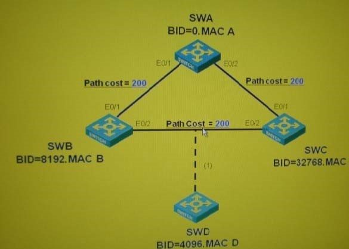
A. 加入SWD之前，STP收敛后，SWB的端口E0/2为Alternate端口
B. 加入SWD之前，STP收敛后，SWC会从E0/1和E0/2均收到配置BPDU
C. STP收敛后，将SWD通过图中虚线链路1和网络相连，则SWD会首先发送以自己为根的配置BPDU,经过长Hello Time后，SWC会向SWD发送以SWA为根的配置BPDU
D. STP收敛后，将SWD通过图中虚线链路1和网络相连，则SWD会首先发送以自己为根的配置BPDU,SWB 会立即回应以SWA为根的配置BPDU
Correct Answer: BD
Section: (none) Explanation
Explanation/Reference:
QUESTION 130
关于STP端口状态，下列说法正确的有
A. 当端口处于Listening状态时，会接收配置BPDU并进行计算，但是不发送配置BPDU
B. 当端口处于Learning状态时，开始学习MAC地址，但是不转发数据
C. 无论端口 终确定何种角色，在Listening状态和Learning状态停留的时间都为一个ForwardDelay时长
D. 当端口处于Listening状态和Learning状态时，如果端口角色变为Alternate端口，则该端口状态会直接转变为Blocking
Correct Answer: BD
Section: (none) Explanation
Explanation/Reference:
QUESTION 131
如图， 初SWA通过E0/1和SWB相连，SWB通过端口E0/2和SWC相连，SWA和SWC没有直接相连启用 STP并等待其收敛后，将SWA和SWC连接，由此导致交换机端口STP状态的变化，关于此变化的正确描述有
A. SWA的端口E0/2和SWC的端口 E0/1都将在Listening状态和Learning状态各停留一个Forward Delay时长
B. SWB的端口E0/2和SWC的端口 E0/2都将在Listening状态和Learning状态各停留一个Forward Delay时长
C. SWC的端口E0/2会从Listening状态直接进入Forwarding状态
D. SWB的端口E0/2会从Forwarding状态直接进入Blocking状态
Correct Answer: AD
Section: (none) Explanation
Explanation/Reference:
QUESTION 132
关于STP端口的角色及其状态，下列说法正确的有
A. 指定端口会经历两个ForwardDelay时长进入Forwarding状态
B. 只有指定端口 终会处于Forwardig状态
C. 只有Alternate端口会处于Blocking 状态
D. 角色为Alternate的端口不会经历Listeing状态和Learning状态
Correct Answer: ACD
Section: (none) Explanation
QUESTION 133
网络拓扑如图在SWA、SWD上启用STP,则关于SWA和SWD端口状态变化的说法正确的有
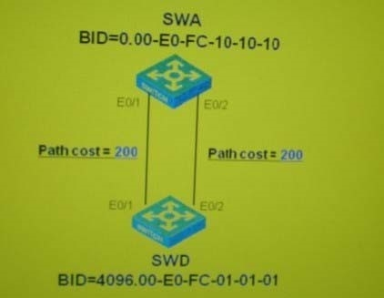
A. SWA的EO/1和SWD的EO/1都需要经过Listening和Learning状态的ForwardDelay延迟进入Forwarding 状态
B. SWD的EO/1端口在Listening状态发生端口角色的改变，由指定端口转变为根端口
C. SWD的E0/2端口在Learning状态发生端口角色的改变，由指定端口转变为Altenet
D. 如果将SWD的桥优先级修改0,则SWA的端口 E0/2会直接进入Blocking状态,不需要Forward Delay的延迟 Correct Answer: ABD
Section: (none) Explanation
Explanation/Reference:
QUESTION 134
网络拓扑如图在SWA、SWD上启用STP,则关于SWA和SWD端口状态变化的说法正确的有
A. SWD的端口EO/1会在Listening状态由指定端口变为根端口
B. 如果将SWD的端口EO/2链路的开销值改为100,则端口 E0/2会立刻转变为新的根端口并进入Forwarding 状态
C. 如果将SWD的桥优先级设置为0,则SWD的端口E0/1和E0/2都会经过Listening状态和Learning状态后进入
Forwarding状态
D. 如i将SWD的桥优先级设置为0,则SWA的端口 E0/1的角色会由指定端口转变为根端口，且在转变过程中端口维持Forwarding状态不变
Correct Answer: A
Section: (none) Explanation
Explanation/Reference:
QUESTION 135
如图组网，初始时链路2没有连接，交换机均没有启用STP,PCB可以将数据发到PCA如果此时链路1故障，维护人员将链路2连接，则关于PCB到PCA数据传送业务的恢复过程说法正确的有（假设PCA不会主动发送数据）
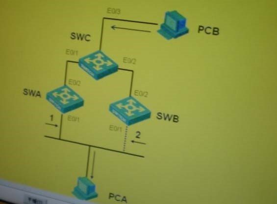
A. SWB的E0/1接口可以立即进入转发状态
B. SWC可以立即将PCB到PCA的数据转发到SWB
C. PCB到PCA的业务恢复默认需要30秒的时间
D. PCB到PCA的业务恢复默认需要300秒的时间
Correct Answer: AD
Section: (none) Explanation
Explanation/Reference:
QUESTION 136
如图组网，SWA和SWC启用STP,SWC为根，SWB没有启用STP初始时链路2没有连接，PCB可以将数据发到PCA,如果此时链路1故障，维护人员将链路2连接，则关于PCB到PCA数据传送业务的恢复过程说法正确的有（假设PCA不会主动发送数据）
A. 由于SWB没有启用STP,则PCB到PCA业务恢复默认需要300秒的时间
B. SWA会产生TCNBPDU并通知SWC, SWC会发送TC置位的配置BPDU,此后一段时间SWC和SWA 的MAC地址老化时间将变为Forward Delay时长
C. SWB的端口E0/1可以立即进入转发状态，不需要延迟
D. 该情况下，默认15秒后，PCB到PCA的业务即可恢复
Correct Answer: BCD
Section: (none) Explanation
Explanation/Reference:
QUESTION 137
如图组网，SWB和SWC启用STP, SWC为根，SWA没有启用STP初始时链路2没有连接，PCB可以将数据发到PCA,如果此时链路1故障，维护人员将链路2连接，则关于PCB到PCA数据传送业务的恢复过程说法正确的有（假设PCA不会主动发送数据）
A. 由于SWA没有启用STP,所以业务恢复需要等待SWC的MAC地址老化，默认需要300秒的时间
B. SWB的端口E0/1需要等待默认30秒进入转发状态，所以PCB到PCA的业务恢复总共需要默认30秒的时间
C. SWB的端口E0/1进入Forwarding状态引发拓扑改变过程，使得MAC地址老化时间缩短，所以PCB到 PCA的业务恢复总共需要默认45秒的时间
D. SWA端口E0/1链路中断后不会向SWC发送TCN BPDU
Correct Answer: CD
Section: (none) Explanation
Explanation/Reference:
QUESTION 138
如图组网，SWA和SWB启用STP, SWC没有启用STP初始时链路2没有连接，PCB可以将数据发到PCA,如果此时链路1故障，维护人员将链路2连接，则关于PCB到PCA数据传送业的恢复过程的说法正确的有（假设 PCA不会主动发送数据)__
A. 由于SWA链路中断会引发拓扑改变处理过程，使得SWA和SWB的MAC地址老化时间缩短，所以业务恢复默认需要15秒时间
B. 由于SWB的端口E0/1默认需要30秒的时间进入转发状态，所以业务需要默认30秒的时间才能恢复
C. 当SWB的端口E0/1进入Forwarding状态会引发拓扑改变处理过程，所以业务 终恢复需要默认30
+15=45秒的时间
D. 业务恢复需要等待SWC的MAC地址老化，所以需要默认300秒的时间
Correct Answer: D
Section: (none)
Explanation
Explanation/Reference:
QUESTION 139
如题图，SWA、SWB、SWC和SWD启用了 STP，SWA、SWB和SWC组成环路，拓扑稳定后，将SWD和
SWB相连假设各链路开销相同，则关于STP的拓扑改变处理过程，以下说法正确的有
A. SWD会从端口 E0/1 发出 TCN BPDU
B. SWB会从端口 E0/2 发出 TCN BPDU
C. 如果SWC和SWA之间的链路中断，则SWC会从端口E0/3发出TCN BPDU
D. 如果SWB和SWC之间的链路中断，则SWB和SWC均会从端口E0/2发出TCN BPDU
Correct Answer: B
Section: (none) Explanation
Explanation/Reference:
QUESTION 140
如题图组网，SWA、SWB和SWC启用STP,如果拓扑收敛后，将SWA的桥优先级设置为61440,则下列说法正确的有
A. 优先级调整后，开始SWA仍然会发送以自己为根的配置BPDU
B. SWC收到低优先级的配置BPDU后会立即回应以自身为根的配置BPDU
C. SWB在本地保存的配置BPDU老化后会向SWA发送以自身为根的配置BPDU
D. 默认30秒后拓扑会重新实现收敛
Correct Answer: AC
Section: (none) Explanation
Explanation/Reference:
QUESTION 141
如题图组网，SWA、SWB和SWC启用STP,且SWB的MAC地址小于SWA的MAC地址如果拓扑收敛, SWB的桥优先级设置为0,则下列说法正确的有
A. 优先级调整后，SWB会立即从端口E0/1和E0/2发送以自己为根的配置BPDU
B. SWC收到SWB发送的配置BPDU后，不会马上进行更新，而会等待本地保存的配置BPDU老化后再进行更新
C. SWA会立即确定端口E0/1为根端口
D. 默认30秒后拓扑会重新实现收敛
Correct Answer: ACD
Section: (none) Explanation
Explanation/Reference:
QUESTION 142
关于配置BPDU和TCNBPDU,说法正确的有
A. 配置BPDU仅从指定端口发出，TCNBPDU仅从根端口发出
B. 配置BPDU通常仅由根桥周期性发出，TCNBPDU除根桥外其他网桥都可能发出
C. 配置BPDU通常仅从根端口接收，TCNBPDU仅从指定端口接收
D. AIternate端口既不会发送配置BPDU也不会发送TCNBPDU
Correct Answer: ABCD
Section: (none) Explanation
Explanation/Reference:
QUESTION 143
关于TCNBPDU的产生，下列说法正确的有
A. 启用STP的非根桥交换机如果某端口连接了PC机，当该端口进入Forwarding状 交换机不会产生
TCN BPDU
B. 网络中某交换机的指定端口链路断掉，则该交换机一定会产生TCNBPDU
C. 网络中某交换机的alternate端口down掉，则该交换机不会产生TCN BPDU
D. 当交换机某端口选择为指定端口或根端口时，交换机会立即发送TCNBPDU
Correct Answer: C
Section: (none) Explanation
Explanation/Reference:
QUESTION 144
下列关于STP协议的说法，正确的有
A. STP中的端口从Blocking到Forwarding必须经过两个ForwardDelay的时长，此后才可以发送数据
B. 当拓扑变化频繁时，会导致一些端口经常处于Blocking状态，可能会造成网络长期的中断
C. 如果STP网络中存在大量的主机，则主机的频繁上下线会产生大量的TCN BPDU
D. STP网络中所有的VLAN共享一颗生成树，无法实现不同VLAN在Trunk链路上的负载分担
Correct Answer: ABCD
Section: (none) Explanation
QUESTION 145
关于STP根桥的说法正确的是
A. 根桥指在一个PhysicalSegment上优先级 高的网桥
B. 根桥上的所有端口均为定端口 C. 根桥上没有根端口
D. 根桥上可能存在Alternate端口
Correct Answer: CD
Section: (none) Explanation
Explanation/Reference:
QUESTION 146
关于STP的桥ID,下列说法正确的是
A. 网络中具有 小桥ID的网桥，经过STP计算， 终将会成为根桥
B. 桥ID由桥MAC地址和优先级字段组成，进行桥ID的比较时，先比较MAC地址，MAC地址值小者为优
C. SWA和 SWB 的 MAC 地址分别为 00-E0-FC-00-00-11 和 00-E0-FC-11-00-11,两者优先级分别为 32768 和4096,则当SWA和SWB进行环形组网并启用生成树协议后，SWA将成为根桥 D. 桥优先级字段长度为2个字节，因此桥优先级的取值范围为0-65535
Correct Answer: A
Section: (none) Explanation
Explanation/Reference:
QUESTION 147
图示为经过STP计算收敛后的稳定拓扑，则下列说法正确的有
A. SWA为网络中的根桥
B. 该BPDU为配置BPDU,目的地址为01-80-C2-00-00-0
C. 该BPDU的发送周期为HelloTime
D. 端口保存该BPDU的老化时间为MaxAge
Correct Answer: ABCD
Section: (none) Explanation
Explanation/Reference:
QUESTION 148
拓扑如图，进行STP计算，正确的结果是
A. SWA为网络中的根桥
B. SWB的端口E0/2为指定端口
C. SWD的端口E0/2为根端口
D. SWC会从E0/3端口向SWD转发配置BPDU
Correct Answer: ABD
Section: (none) Explanation
QUESTION 149
拓扑如图，进行STP计算，正确的结果是
A. SWA的端口E0/1和E0/2均为指定端口
B. SWD的端口E0/1为根端口
C. SWA的端口 E0/2 为 Alternate 端口
D. SWD的端口E0/1和E0/2均会收到配置BPDU
Correct Answer: ABD
Section: (none) Explanation
Explanation/Reference:
QUESTION 150
拓扑如图，进行STP计算，正确的结果是：
A. 由于根桥ID、根路径开销、指定桥ID、指定端口均相同，故无法确定SWD的根端口
B. SWD需要通过比较自身接收配置BPDU的端口的ID来确定根端口
C. 如果将SWD的桥优先级设置为0,则SWD将成为根桥，且端口E0/1和E0/2均为指定端口
D. 如果将SWD的桥优先级设置为0,则SWD的端口 E0/2将只接收配置BPDU而不发送配置BPDU
Correct Answer: BD
Section: (none) Explanation
QUESTION 151
关于RSTP和STP的关系，说法正确的有
A. RSTP在旧EE802.1 D标准中定义，其协议思想和STP相同，但在收敛时间上作了改进
B. 运行RSTP的交换机可以和运行STP的交换机协同工作，并改善STP的收敛时间
C. RSTP可以在STP的基础之上实现不同VLAN的数据在Trunk链路上的负载分担
D. RSTP具备STP的所有功能，但其仅使用了一种类型的BPDU
Correct Answer: D
Section: (none) Explanation
QUESTION 152
关于RSTP中的端口状态和角色，说法正确的有
A. RSTP中端口共有三种状态，其中端口进入Learning状态后开始收发BPDU，并确定端口角色
B. RSTP中的Discarding端口如同STP中的Blocking端口，端口在Discarding状态时不会发送BPDU,但会接受BPDU
C. RSTP中Alternate端口用于为根端口做备份，Backup端口用于为指定端口做备份
D. RSTP中的根端口和指定端口的定义和STP中相同
Correct Answer: CD
Section: (none) Explanation
QUESTION 153
如图，各交换机启用RSTP,假设各链路开销值相同，则下列说法正确的
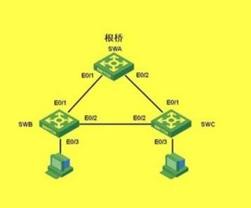
A. SWB的端口 E0/1 为 Alternate 端口
B. 网络计算收敛不需要等待两倍的ForwardDelay时间
C. 如果在SWB上取消RSTP,则SWC的端口E0/1将成为根端口
D. 如果将SWB和SWC的RSTP均取消，则SWA的端口E0/2将会成为Backup端口
Correct Answer: ABCD
Section: (none)
Explanation
Explanation/Reference:
QUESTION 154
关于生成树中桥优先级的配置，以下说法正确的有
A. 桥的优先级共16位，取值范围为0-65535
B. 如果交换机没有配置桥的优先级，则默认取值为32768
C. 桥优先级的取值步长为4096
D. 优先级取值越小表明该桥的优先级越低
Correct Answer: BC
Section: (none)
Explanation
QUESTION 155
关于H3C交换机的生成树端口开销配置，下列说法正确的有
A. H3C交换机支持三种端口开销标准,分别为dot1d-1998、dot11和legacy,通过命令stp pathcost-standard可以切换遵循的端口开销标准
B. H3C交换机默认遵循的生成树端口开销标准为legacy
C. 默认情况下，端口开销值越大，表明端口带宽越小
D. 如果不同厂商的交换机互联，应当尽量配置各交换机遵循相同的端口开销标准，否则可能会导致生成树计算结果偏离网络设计初衷
Correct Answer: ABCD
Section: (none)
Explanation
QUESTION 156
关于生成树协议中定时器的配置，说法正确的有
A. 应该将HelloTime调为 大值，将Forward Delay调为 小值，这样可以减少网络中的Hello消息数量,并且端口可以尽快进入转发状态
B. 应该将MaxAge调为 小值，这样可以缩短BPDU的老化时间，及时发现链路故障
C. 适当的Helloinme值，可以满足降低生成树计算损耗的同时增强生成树的健壮性，取值过大或过小都会对生成树计算产生和网络的稳定产生影响
D. 不建议手工配置Hello Forward Delay和Max Age,交换机会通过网络直径值自动为定时器设置较优的值
Correct Answer: CD
Section: (none)
Explanation
QUESTION 157
关于生成树配置中的stpmcheck命令，说法正确的有
A. 该命令用于RSTP交换机和MSTP交换机互连时使用
B. 该命令在不同厂商的交换机互连，且运行MSTP时使用，用于检査摘要信息
C. 该命令用于运行RSTP或MSTP的交换机端口连接STP设备时使用
D. 通过在RSTP或MSTP交换机的端口上运行该命令，可以将端口的生成树模式切换到STP
Correct Answer: C
Section: (none) Explanation
QUESTION 158
关于RSTP和STP的BPDU格式的对比，下列说法正确的有
A. RSTP没有为拓扑改变过程单独定义BPDU类型
B. RST BPDU中，Flags字段的8位均有实际含义
C. 在RSTP定义的拓扑改变处理过程中没有使用到TCA位
D. RST BPDU中，Flags字段中的P/A标志位用于根端口快速切换机制
Correct Answer: ABC
Section: (none) Explanation
QUESTION 159
关于RSTP和STP的BPDU处理方式的对比，说法正确的有
A. RSTP沿袭了STP中配置BPDU的发送方式，配置BPDU仅由根桥周期性发出
B. RSTBPDU的老化时间由Max age减少为3个连续的Hello Time时长
C. RSTP中，处于阻塞状态的端口在收到地优先的BPDU时，可以立即做出回应
D. RSTP交换机收到配置BPDU后，对优先级向量的计算、比较方法和STP相同
Correct Answer: BCD
Section: (none) Explanation
QUESTION 160
关于RSTP和STP的计算收敛的对比，说法正确的有
A. 如果STP想缩短收敛时间，只能配置较小的ForwardDelay时间，但是可能会影响到网络的稳定性
B. 相对于STP,RSTP定义了边缘端口，这样可以使得连接i机的端口快速进入转发状态
C. 相对于STP,RSTP定义了根端口快速切换机制^这样可以使得Alternate快速成为新的根端口
D. 相对于STP,RSTP定义了指定端口快速切换机制，这样可以使得指定端口快速进入转发状态而不需要等待两倍的Forward Delay时间
Correct Answer: ABCD
Section: (none) Explanation
QUESTION 161
如图组网，交换机启用RSTP,关于其配置下列说法正确的有
A. 可以将SWB和SWC互连的端口配置为边缘端口，实现拓扑的快速收敛
B. 可以将SWB和SWC的端口E0/3配置为边缘端口
C. 配置为边缘端口的端口可以直接进入转发状态，不需要延时
D. 如果边缘端口收到BPDU则会进入阻塞状态
Correct Answer: BC
Section: (none)
Explanation
Explanation/Reference:
QUESTION 162
如图组网，交换机启用RSTP,假设各链路开销值均相同，则下列说法正确的有

A. 拓扑收敛后SWD将会有一个端口为Alternate端口
B. 如果SWD的端口EO/1 DOWN掉，则SWD的端口 E0/2会立即从Alternate端口转变为新的根端口 C. 假设将SWB和SWC的生成树运行模式修改为STP,则SWD的Alternate端口变为新的根端口后仍然可以直接进入转发状态
D. 如果SWD上有多个Alternate端口，则当根端口DOWN掉后，SWD会从这些Alternate端口中选择优先级高的端口作为新的根端口
Correct Answer: AD
Section: (none) Explanation
Explanation/Reference:
QUESTION 163
如图组网，SWA和SWD启用RSTP,而SWB和SWC没有启用生成树协议，则下列说法正确的有
A. SWD将会有一个端口的角色为Alternate
B. 由于SWB和SWC没有启用生成树协议，所以当SWD的根端口DOWN掉后，Alternate端口不能马上成为新的根端口并进入转发状态
C. 当SWB的端口EO/2DOWN掉后，SWD的端口 E0/2会成为新的根端口并立即进入转发状态
D. 当SWB的端口EO/2DOWN掉后，SWD的端口 E0/2会等待3个Hello Time后才会成为新的根端口并进入转发状态
Correct Answer: AD
Section: (none) Explanation
Explanation/Reference:
QUESTION 164
关于RSTP中的指定端口快速切换机制，说法正确的有
A. 指定端口快速切换机制必须在点到点链路
B. 同步过程的目的是在网桥本地消除环路产生的可能，同步过程中需要阻塞所有指定端口
C. 当RSTP中的指定端口处于Discarding状态时会发送Proposal位置位的RSTBPDU
D. 指定端口收到Proposal位置位的RST BPDU, 并缺点本端口为跟端口后,该端口将发送Agreement位置位的 RST BPDU
Correct Answer: ACD
Section: (none) Explanation
QUESTION 165
如图组网，开始SWA和SWB之间没有连接，SWA和SWB启用RSTP,当拓扑稳定后，连接SWA和SWB的端口 E1/0/1,假设SWA将成为新的根桥，则下列说法正确的有
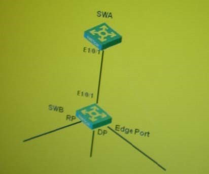
A. SWA和SWB的端口E1/0/1会发送Proposal消息，请求进入转发状态
B. SWB在收到SWA发送的Proposal消息，会立即回复Agreement消息
C. SWB在收到SWA发送的Proposal 消息, 会启用同步过程将旧的根端口、指定端口以及边缘端口阻塞
D. SWB不需要自行生成BPDU,其回应的Agreement消息内容拷贝自SWA发送的Proposal消息
Correct Answer: AD
Section: (none) Explanation
Explanation/Reference:
QUESTION 166
如图组网，开始SWA和SWB之间没有连接，SWA和SWB启用RSTP,当拓扑稳定后，连接SWA和SWB的端口假设SWA将成为新的根桥，则下列说法正确的有
A. SWB在完成同步过程后，会向SWA回复Agreement消息，此时其端口E1/0/1会立即进入转发状态
B. SWA的端口E1/0/1在收到SWB发送的Agreement消息后，会立即进入转发状态
C. SWB的指定端口将会和下游交换机继续进P/A握手过程
D. 在P/A过程中，不会使用任何的定时器，所以可以保证指定端口快速进入转发状态，从而实现网络的快速收敛
Correct Answer: ABCD
Section: (none)
Explanation
Explanation/Reference:
QUESTION 167
如图组网，交换机均运行RSTP,初始时SWA、SWB和SWC通过链路1、2、3互连，则当网络连接发生下列变化时，说法正确的有
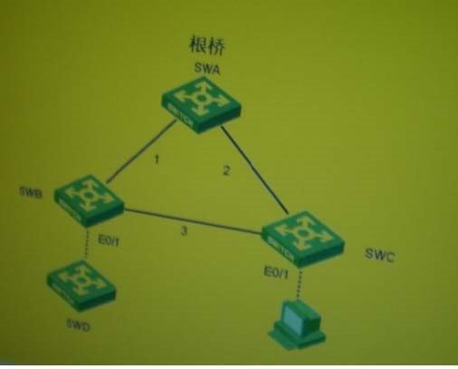
A. 当SWB和SWC之间的链路DOWN掉，则SWB和SWC均会发送TC置位的RST BPDU
B. 如图当SWB和另一运行RSTP的交换机SWD相连后，SWB会发送TC置位的RSTBPDU
C. 如图当SWB和另一运行RSTP的交换机SWD相连后，SWD会发送TC置位的RSTBPDU
D. 当SWC的边缘端口E0/1连接一台PC机后，SWC会发送TC置位的RST BPDU
Correct Answer: B
Section: (none) Explanation
Explanation/Reference:
QUESTION 168
如图组网，交换机均运行RSTP,初始时SWA、SWB和SWC互连，当拓扑稳定后连接SWB和SWD,则下列说法正确的有
A. SWB会清除端口 E0/1和E0/2学到的MAC地址并从这两个端口中发出TC置位的RST BPDU
B. SWA收到TC置位的BPDU后，会将MAC地址表全部清空，并从E0/2发送TC置位的RSTBPDU
C. SWC收到TC置位的BPDU后，会将端口E0/1学到的MAC地址清空，并从该端口发送TC置位的RST BPDU
D. SWB会在两倍的HelloTime时间内发送TC置位的RST BPDU
Correct Answer: ACD
Section: (none) Explanation
Explanation/Reference:
QUESTION 169
关于RSTP和STP的兼容运行，下列说法正确的有
A. 当RSTP交换机和STP交换机一起工作时，需要通过命令stpmode stp将RSTP交换机的工作模式切换为 STP
B. RSTP交换机和STP交换机一同工作时，其连接STP交换机的端口将会切换到STP模式
C. 当RSTP交换机上的某端口切换到STP模式后，该端口将不再具备RSTP的快速收敛特性
D. 当RSTP交换机和STP交换机的连接断开后，之前连接STP交换机的端口将会自动切回到RSTP模式
Correct Answer: BC
Section: (none)
Explanation
QUESTION 170
关于MSTP和RSTP的对比，说法正确的有
A. MSTP继承了RSTP中的所有快速
B. MSTP可以实现VLAN间的负载分担
C. MSTP和RSTP的使用的BPDU格式相同
D. MSTP和RSTP中端口的状态和角色完全相同
Correct Answer: AB
Section: (none)
Explanation
QUESTION 171
关于MSTP根桥的指定，说法正确的有
A. 如果不经指定，默认情况下MST域中所有实例的根桥都为IST的根桥
B. 通过rootprimary命令可以指定某实例中的首选 通过命令指定后，该根桥的优先级不能被修改
C. 通过rootsecondary命令可以指定某实例中的备用根桥，当根桥出现故障或被关机时，备份根桥可以取代根桥成为指定生成树实例的根桥
D. 如果设置了多个备份根桥，当根桥故障时，MAC地址 小的备份根桥将成为指定MST实例的根
Correct Answer: ABCD
Section: (none)
Explanation
Explanation/Reference:
QUESTION 172
关于MSTP的兼容性配置，说法正确的有
A. 通过命令stpcompliance可以配置端口的MSTP兼容工作方式,其中参数auto指端口只收发与非标准格式兼容的MSTP消息
B. H3C交换机的端口可以配置自动识别MSTP消息的格式并根据识别结果确定发送消息的格式
C. 如果端口识别/发送MSTP消息的方式配置成了dotls,则端口只发送和接收标准格式的MSTP消息
D. 如果端口接收到的MSTP报文格式与所配置的报文格式不一致，则端口将成为指定端口，端口状态保持在Discarding状态，以防止出现环路
Correct Answer: BCD
Section: (none)
Explanation
QUESTION 173
关于MSTP的兼容性配置，说法正确的有
A. 不同厂商交换机进行MSTP互通时，只要保证域名、修订级别、VLAN实例映射关系配置完全相同，就可以保证交换机属于同一个MST域
B. 由于不同厂商密钥不同,即使VLAN实例映射关系相同，也可能得到不同的摘要结果
C. H3C交换机可以通过配置摘要侦听，实现和其他厂商交换机的MSTP互通，
D. 配置了摘要侦听时，H3C交换机在进行摘要计算时，会使用和对端厂商相同的哈希算法和密钥
Correct Answer: BC
Section: (none) Explanation
QUESTION 174
关于MSTP的P/A机制，说法正确的有
A. RSTP和MSTP均要求上游设备的指定端口在接收到下游设备的Agreement报文后才能进行快速迁移
B. MSTP中，下游设备只有在收到上游设备发送的Proposal和Agreement均置位的BPDU,才会回应
Agreement 置位的 BPDU
C. 图中，默认情况下SWA的端口 E1/0/1需要等待两倍的Forward Delay时长才可以进入Forwarding状态
D. 通过在端口配置stp no-agreement-check, MSTP交换机将不会检査上游发送的Proposal BPDU 中是否将Agreement位置位
Correct Answer: ABCD
Section: (none) Explanation
QUESTION 175
关于MSTP,说法正确的有
A. MSTP在802.1s中定义^其既可以满足快速收敛，又可以实现负载分担
B. MSTP的基本思想是为每一个VLAN计算一颗生成树，每一颗树对应一个生成树实例
C. MSTP中一个生成树实例可以包含多个VLAN
D. MSTP中一个VLAN可以根据^要映射到多个生成树实例
Correct Answer: AC
Section: (none) Explanation
QUESTION 176
关于MST域，说法正确的有
A. 属于同一个MST域的交换机一定具有相同的VLAN和实例映射关系
B. 如果两个交换机配置的MST域名不相同，则这两个交换机一定属于不同的MST域
C. 运行MSTP的交换机之间需要交互完整的VLAN和实例的映射关系，如果映射关系不同则交换机不属于同一个MST域
D. MST域之间运行的是RSTP
Correct Answer: ABD
Section: (none) Explanation
Explanation/Reference:
QUESTION 177
关于MSTP的基本概念，说法正确的有
A. CIST是网络中所有交换机计算生成的一棵树，其树根即为网络中的总根
B. CIST的总根是网络所有交换机中，桥ID小的交换机
C. CIST的域根是指某一个域中，优先级 高的交换机
D. CIST的域根即为某一个域中IST的根桥
Correct Answer: ABD
Section: (none) Explanation
Explanation/Reference:
QUESTION 178
关于MSTP的基本概念，说法正确的有
A. CST是指域之间的一棵生成树，它是MST域之间运行STP/RSTP得到的
B. CST运行时，将MST域视为逻辑上的一台交换机，CST的根桥为总根所属的域
C. IST是MST域内的一棵生成树，IST对应的实例号为0
D. 默认情况MST域内的所有VLAN都映射到IST
Correct Answer: ABCD
Section: (none) Explanation
Explanation/Reference:
QUESTION 179
关于MSTP的基本概念，说法正确的有
A. IST是CIST在MST域内的一个片断，IST的根为MST域内优先级 高的桥
B. IST的根为IST中距离总根 近的桥
C. 一个MST域可以包含多个MSTI实例，不同的MST域可以包含不同的MSTI实例
D. —个MSTI实例可以映射多个VLAN,不同MST域中的VLAN映射关系可以不同
Correct Answer: ABCD
Section: (none) Explanation
Explanation/Reference:
QUESTION 180
关于MSTP的基本概念，说法正确的有
A. Master桥即为IST的域根
B. Master端口指MST域的域边界端口
C. Master端口在所有MSTI上的角色都相同
D. 如果把MST域看作逻辑上的一个网桥，则Master端口即为该逻辑网桥的根端口
Correct Answer: ACD
Section: (none) Explanation
Explanation/Reference:
QUESTION 181
关于MSTP的BPDU格式，说法正确的有
A. MSTP的BPDU由RSTBPDU字段和MST专有字段组成
B. 如果将MST域看作逻辑上运行RSTP的交换机，则CIST外部路径开销即相当于该RSTP交换机的根路径开销
C. 如果将MST域看作逻辑上运行RSTP的交换机，则CIST域根ID即相当于该RSTP交换机的指定桥ID, 通常该ID为MST域内值 小的桥ID
D. 计算CST仅需要RSTBPDU字段的值即可
Correct Answer: ABD
Section: (none)
Explanation
QUESTION 182
关于MSTP的BPDU格式，说法正确的有
A. IST的计算仅需要MST专有字段中的值即可
B. MST配置ID字段用于判断交换机是否属于同一个MST域
C. MSTI配置消息用于MSTI的生成树计算
D. MSTI配置消息的数量由VLAN数决定
Correct Answer: BC
Section: (none)
Explanation
QUESTION 183
关于MSTP的BPDU格式，说法正确的有
A. MSTI域根ID为MSTI中优先级 高的桥的ID
B. 同一条链路在不同的MSTI中端口路径开销值可以不同
C. MSTI配置消息中的Flags字段的定义和RST BPDU中Flags字段的定义完全相同
D. MST域根ID字段长度4 8个字节，高位两个字节为桥优^级，取值范围为0-61440步长4096
Correct Answer: AB
Section: (none)
Explanation
QUESTION 184
关于MSTP的BPDU格式，说法正确的有
A. 如果交换机没有配置VLAN到实例的映射，则MSTBPDU中将不会携带任何MSTI配置消息
B. MSTI计算过程中将使用RSTBPDU中的定时器值，而不会在每一个MSTI配置消息中携带定时器参数
C. MSTI指定桥优先级字段长度为8个字节，包含两个字节的桥优先级以及6个字节的桥MAC地址
D. MSTI指定端口优先级字段长度为2个字节，包含1个字节的端口优先级以及1个字节的端口号
Correct Answer: AB
Section: (none)
Explanation
QUESTION 185
关于MSTP的计算过程，说法正确的有
A. MSTP的计算过程为,首先通过MSTBPDU进行CST和IST的计算,然后域内的交换机发送MSTI BPDU进行各实例生成树的计算
B. MSTP中由于链路两端的端口在不同的实例中可能均为指定端口，所以链路两端的端口可能同时既会接收也会发送MST BPDU
C. 在进行CST计算时，会优先考虑外部路径开销，只有在外部路径开销相同时才会比较内部路径开销
D. CST上的Alternate端口和Backup端口一定是域边界端口，一定不会处于MST域内
Correct Answer: BD
Section: (none) Explanation
Explanation/Reference:
QUESTION 186
关于MSTP的计算过程说法正确的有
A. MST域的Master端口一定位于IST的域根上
B. 每一个MST域均会存在Master端口
C. 实际计算过程中CST和IST的计算并没有先后次序，而是同步完成的
D. 实际计算过程中，要先计算完成CIST,然后再进行MSTI的计算
Correct Answer: AC
Section: (none) Explanation
Explanation/Reference:
QUESTION 187
关于MSTP的计算过程说法正确的有
A. 不同MST域中VLAN和实例的映射关系是独立的，可以不同也可以相同
B. 在MSTI计算完成后，域和域之间的数据流一定会经过Master端口
C. 在MSTI计算完成后，同一个物理端口在不同的实例可能具有不同的角色
D. MSTI的根桥IST的根桥可以是同一台交换机
Correct Answer: ACD
Section: (none) Explanation
Explanation/Reference:
QUESTION 188
当运行MSTP的交换机和运行RSTP的交换机一起工作时，说法正确的有
A. RSTP交换机会将MST域看作一台逻辑上的交换机，桥ID为MST域中和RSTP交换机直连的那台交换机的ID
B. MSTP交换机会将RSTP交换机看作由一台交换机单独构成的MSTP域
C. MSTP交换机和RSTP交换机可以属于同一个MST域
D. MSTP交换机会将RSTBPDU解析为MST BPDU,其中IRPC为0
Correct Answer: BD
Section: (none) Explanation
QUESTION 189
关于MSTP的快速收敛机制，说法正确的有
A. MSTP支持RSTP的所有快速收敛机制
B. MSTP和RSTP的所有快速收敛机制都相同
C. MSTP中可以针对实例指定边缘端口，即端口可以在某些实例中为边缘端口，某些实例中为普通端口
D. MSTP可以和RSTP交换机协同工作，实现快速收敛
Correct Answer: AD
Section: (none) Explanation
QUESTION 190
在进行MSTP的配置时，区域视图的配置步骤包含
A. 使用region-name命令配置域名
B. 使用revsion命令配置修订级别
C. 配置VLAN和实例的映射关系
D. 配置实例的首选根桥和备用根桥
Correct Answer: ABC
Section: (none) Explanation
Explanation/Reference:
QUESTION 191
关于BPDU保护，以下说法正确的有
A. 没有配置BPDU保护的边缘端口收到BPDU会转变为非边缘端口
B. BPDU保护在被保护的端口视图配置
C. BPDU保护在系统视图配置
D. 配置BPDU保护后，边缘端口收到BPDU会被关闭
Correct Answer: ACD
Section: (none) Explanation
QUESTION 192
关于根桥保护，以下说法正确的有
A. 没有配置根桥保护时，根桥收到优先级更高的BPDU会失去根桥的地位
B. 配置根桥保护后，端口收到了优先级高的BPDU,这些端口的状态将被设置为Listening不再转发报文
C. 端口会经历从Listening状态到Forwarding状态的转变，在此期间如果端口没有收到更优的BPDU时，端口会恢复原来的转发状‘
D. 根桥保护在端口视图配置
Correct Answer: ABCD
Section: (none) Explanation
QUESTION 193
关于环路保护，以下说法正确的有
A. 链路阻塞或链路单通可能会导致环路产生
B. 在启动了环路保护功能后，当端口保存的BPDU老化时，环路保护生效
C. 根端口的角色如果发生变化就会变为Discarding状态，不转发报文，从而不会在网络中形成环路 Discarding状态会一直维持，直到端口再次收到BPDU,重新成为根端口
D. 在MSTP中，此功能对根端口、Alternate端口和Backup端口有效
Correct Answer: ABCD
Section: (none) Explanation
QUESTION 194
关于TC保护，以下说法正确的有
A. 交换机在接收到TC-BPDU报文后，会执行MAC地址表项的删除操作
B. TC保护功能使能后，设备在收到TC-BPDU报文后的10秒内，允许收到TC-BPDU报文后立即进行地址表项删除操作的次数可以由用户控制
C. 系统会监控在该时间段内收到的TC-BPDU报文数是否大于阈值，如果大于阈值，则设备在该时间超时后再进行一次地址表项刪除操作这样就可以避免频繁地删除转发地址表项
D. TC保护在系统视图配置
Correct Answer: ABCD
Section: (none) Explanation
QUESTION 195
关于生成树保护机制的配置，下列说法正确的有
A. BPDU保护需要在指定为边缘端口的端口视图下配置
B. 根桥保护命令在网络中的根桥上配置才会起到保护作用
C. 环路保护命令需要在物理环路上的每一个端口上配置
D. 配置了TC保护门限值后，如果设备在默认10秒内收到的TC报文数超过该门限值，则设备在这10秒内将不再进行删除地址表项的操作
Correct Answer: D
Section: (none) Explanation
QUESTION 196
客户采购了一台路由器，如果此路由器性能指标为平均无故障工作时间MTBF>Y14 8年，平均维修时间 MTTR<U1则此路由器可靠性为
A. 99.9%
B. 99.99%
C. 99.999%
D. 99.9999%
Correct Answer: C
Section: (none) Explanation
QUESTION 197
客户采购了一台路由器设备，如果此路由器性能指标为平均无故障工作时间MTBFW5000,平均维修时间MTTRSOQ 5则此路由器可靠性为
A. 99.9%
B. 99.99%
C. 99.999%
D. 99.9999%
Correct Answer: B
Section: (none) Explanation QUESTION 198
二台路由器通过局域网连接在一起，组成VRRP备份组，各接口上配置如下：
[RTA-GigabitEthernet1/0]display this ip address 192.168.0.252 255.255.255.0 vrrp vrid 1 virtual-ip 192.168.0.254 vrrp vrid 1 priority 120 shutdown
[RTB-GigabitEthernet1/0]display this ip address 192.168.0.253 255.255.255.0
vrrp vrid 1 virtual-ip 192.168.0.254
从上述信息可以得知
A. 路由器RTA处于VRRPMaster状态，路由器RTB处于VRRP Backup状态
B. 路由器RTA处于VRRPBackup状态，路由器RTB处于VRRP Master状态
C. 路由器RTA处于VRRP Initialize状态，路由器RTB处于VRRP Master状态
D. 路由器RTA处于VRRP Master状态，路由器RTB处于VRRP Master状态
Correct Answer: C
Section: (none) Explanation
QUESTION 199
下列关于SOA和ITolP的说法正确的是
A. SOA解决方案要求对IT基础架构进行整合，基于网络技术搭建统一的IT基础架构平台
B. SOA以网络为基础，消除异构系统带来的信息鸿沟，整合存储、安全、多媒体等各种服务，实现IT基础设施的构件化和资源化
C. ITolP解决方案体现了SOA的核心思想
D. ITolP允许灵活、快速、高效地构建企业智能应用，能快速适应企业业务流程的变化
Correct Answer: CD
Section: (none) Explanation
QUESTION 200
在PIM-DM组网中，关于路由器发送Prune(剪枝）消息，描述正确的有
A. 路由器无本地直连组播接收者时，会向所有PIM邻居发送Prune
B. 路由器（S,G)表项中出接口列表为空时,会向所有PIM邻居发送Prune消息
C. Assert(断言）失败的一方会向获胜一方发送
D. 路由器接口收到Prune消息后，从此将不在此接口发送相应组播组的报文
Correct Answer: C
Section: (none) Explanation
Explanation/Reference:
QUESTION 201
如图所示PIM-DM组网中，路由器RT1、RT2的部分单播路由表如下
<RT1>display ip routing-table
Routing Tables: Public
Destination/MaskProtoPreCost NextHop Interface
10.1.1.0/30 Direct 0010.1.1.2Port1
10.1.1.1/32 Direct 0010.1.1.1Port1
10.1.1.2/32 Direct 00127.0.0.1 InLoopO
11.1.1.0/30 Direct 0011.1.1.1Port2
11.1.1.1/32 Direct 00127.0.0.1 InLoopO
12.1.1.0/30 Direct 0012.1.1.1Port3
12.1.1.1/32 Direct 00127.0.0.1 InLoopO
100.1.1.0/240SPF 10 1563 10.1.1.1 Portl
127.0.0.0/8 Direct 00127.0.0.1 InLoopO
127.0.0.1/32Direct 00127.0.0.1 InLoopO
100.1.0.0/160SPF 10 311.1.1.2 Port2
<RT2>display ip routing-table
Routing Tables: Public
Destination/MaskProtoPreCost NextHop Interface
20.1.1.0/30 Direct 0020.1.1.2Port1
20.1.1.1/32 Direct 0020.1.1.1 Portl
20.1.1.2/32 Direct 00127.0.0.1 InLoopO
11.1.1.0/30 Direct 0011.1.1.2Port2
11.1.1.2/32 Direct 00127.0.0.1 InLoopO
22.1.1.0/30 Direct 0022.1.1.1Port3
22.1.1.1/32 Direct 00127.0.0.1 InLoopO
100.1.1.0/240SPF 10 1564 11.1.1.1 Port2
127.0.0.0/8 Direct 00127.0.0.1 InLoopO
127.0.0.1/32Direct 00127.0.0.1 InLoopO
100.1.0.0/160SPF 10 220.1.1.1 Portl
那么，路由器RT1、RT2的（S,G)表项的出、入接口列表分别为
A. RT1出接口列表：Port2、Port3
B. RT2出接口列表：Port2、Port3
C. RT1入接口列表：Portl
D. RT2入接口列表：Portl
Correct Answer: AC
Section: (none) Explanation
Explanation/Reference:
QUESTION 202
客户要求核心交换机采用以太网链路聚合技术，则
A. 聚合端口是物理端口，需要采购以太网链路聚合板卡
B. 聚合端口是多个逻辑端口组成的逻辑端口，不需要采购以太网链路聚合板卡
C. 聚合端口是多个物理端口组成的逻辑不需要采购以太网链路聚合板卡
D. 聚合端口支持二层聚合端口和三层聚合端口
Correct Answer: CD
Section: (none) Explanation
QUESTION 203
交换机SWA、SWB通过二根光纤千兆以太网链路连接在一起，其中交换机SWA上有如下接口配置:
[SWA]interface GigabitEthernet 1/0/1
[SWA-GigabitEthernet1/0/1]gvrp
[SWA-GigabitEthernet1/0/1]port link-type trunk
[SWA-GigabitEthernet1/0/1]port trunk permit vlan 1 10
[SWA]interface GigabitEthernet 1/0/2
[SWA-GigabitEthernet1/0/2]port link-type trunk
[SWA-GigabitEthernet1/0/2]port trunk permit vlan 1 10
如要配置链路聚合将这两条链路聚合在一起，如果SWB上配置是正确的，从上述信息可以得知
A. 只有在GigabitEthernet1/0/2和Gigabit1/0/1上允许所有VLAN通过，二者才可以加入同一个聚合组
B. 只有将GigabitEthe1/0/2的配置改为与GigabitEthe1/0/1 一致，二者才可以加入同一个聚合组
C. 在SWASWB上都配置了链路聚合后，若SWA和SWB都在聚合端口上开启MSTP,则GigabitEthe1/0/1和 GigabitEthe1/0/2之中有一个会被阻塞
D. 在SWA和SWB上都配置了链路聚合后，若SWA和SWB都在聚合端口上开启MSTP，则
GigabitEthernet1/0/1 和 GigabitEthe1/0/2 可以参加转发
Correct Answer: D
Section: (none) Explanation
Explanation/Reference:
QUESTION 204
交换机SWA、SWB通过二根光纤千兆以太网链路连接在一起，其中交换机SWA上有如下接口配置：
[SWA]interface GigabitEthernet 1/0/1
[SWA-GigabitEthernet1/0/1]port link-type trunk
[SWA-GigabitEthernet1/0/1]port trunk permit vlan 1 10 100
[SWA]interface GigabitEthernet 1/0/2
[SWA-GigabitEthernet1/0/2]port link-type trunk
[SWA-GigabitEthernet1/0/2]port trunk permit vlan 1 10
若要配置链路聚合将这两条链路聚合在一起。如果SWB上配置是正确的，从上述信息可以得知
A. 因为允许通过的VLAN不同，GigabitEthe1/0/1和GigabitEthe1/0/2无法加入同一个聚合组
B. 只有将GigabitE1/0/2的配置改为与GigabitEthe1/0/1 一致，二者才可以加入同一个聚合组
C. 不需要更改允许通过的VLAN配置，GigabitEthernet1/0/1和GigabitEthernet 1/0/2就可以加入同一个聚合组
D. 在SWA和SWB上都配置了链路聚合后，若交换机SWA和SWB开启MSTP,则GigabitEthe1/0/1和
GigabitEthernet 1/0/2 的 MSTP 端口状态一致
Correct Answer: AB
Section: (none) Explanation
Explanation/Reference:
QUESTION 205
二台交换机SWA.SWB通过四根以太网线连接在一起,其中交换机SWA上对应端口为Ethernet1/0/1、Ethernet 1/0/2, Ethernet 1/0/3、Ethernet 1/0/4在SWA上对此4个端口配置了静态链路聚合从上述信息可以得知__
A. 在各端口配置一致的情况下，Ethernet1/0/1端口为聚合组参考端口 B. 在各端口配置一致的情况下，Ethernet1/0/2端口为聚合组参考端口 C. 在各端口配置一致的情况下，Ethernet1/0/3端口为聚合组参考端口
D. 在各端口配置一致的情况下，Ethernet1/0/4端口为聚合组参考端口
Correct Answer: A
Section: (none)
Explanation
QUESTION 206
客户要求在网络设计时，关键部位必须有高可靠性设备，且可靠性要达到99.999%则设备的运行情况应满足
A. 每年故障时间不超过1分钟 B. 每年故障时间不超过3分钟 C. 每年故障时间不超过6分钟
D. 每年故障时间不超过9分钟
Correct Answer: AB
Section: (none) Explanation
Explanation/Reference:
QUESTION 207
客户要求在网络设计时，关键部位必须有高可靠性设备，且可靠性要达到99.999%则设备的运行情况应满足
A. MTBF>Y699^； MTTR<U1
B. MTBF>Y343^； MTTR<U1
C. MTBF>Y28年；MTTR<U1
D. MTBF>Y9年；MTTR<U1
Correct Answer: ABC
Section: (none) Explanation
Explanation/Reference:
QUESTION 208
二台交换机SWA、SWB通过四根以太网线连接在一起，其中交换机SVVA上对应接口有如下配置：
[SWA-Ethernet1/0/1]display this
duplex full speed 10
[SWA-Ethernet1/0/2]display this
duplex full speed 10
[SWA-Ethernet1/0/3]display this duplex half speed 100
[SWA-Ethernet1/0/4]display this duplex half speed 100
从上述信息可以得知
A. 四个以太网口通过静态聚合加入同一个聚合组，Selected端口为Ethernet1/0/1和Ethernet1/0/2
B. 四个以太网口通过静态聚合加入同一个聚合组，Selected端口为Ethernet1/0/1和Ethernet1/0/3 C. 四个以太网口通过静态聚合加入同一个聚合组，Selected端口为全部四个端口
D. 四个以太网口通过静态聚合加入同一个聚合组，Selected端口为Ethernet1/0/3和Ethernet1/0/4
Correct Answer: A
Section: (none) Explanation
Explanation/Reference:
QUESTION 209
客户的二台交换机SWA、SWB通过七根以太网线连接在一起，并配置了静态链路聚合，交换机SWA上对应
端口为 Ethernet 1/0 Ethernet 1/0/2、Ethernet 1/0/3、Ethernet 1/0/4、Ethernet 1/0/5、Ethernet1/0/6、
Ethernet 1/0/7,配置方式为按照端口顺序依次配置如果交换机SWA、SWB每个聚合组只支持6个端口，则
A. 在各端口配置一致的情况下，Ethernet1/0/1端口为聚合组Unselected端口
B. 在各端口配置一致的情况下，SWA在7个端口中随机选择一个端口为聚合组Unselected端口
C. 在各端口配置一致的情况下，Ethernet1/0/6端口为聚合组Unselected端口
D. 在各端口配置一致的情况下，Ethernet1/0/7端口为聚合组Unselected端口
Correct Answer: D
Section: (none) Explanation
Explanation/Reference:
QUESTION 210
客户的二台交换机SWA、SWB通过七根以太网线连接在一起，并配置了动态链路聚合，交换机SWA
上对应端口为 Ethernet 1/0 Ethernet 1/0/2、Ethernet 1/0/3、Ethernet 1/0/4、Ethernet 1/0/5、Ethernet
1/0/6、Ethernet1/0/7如果交换机SWA、SWB每个聚合组只支持6个端口，且SWA交换机有如下配置：
[SWA]interface Ethernet 1/0/7
[SWA-Ethernet1/0/7]lacp port-priority 4096 i设备上査看LACP状态输出如下：
[SWA]display lacp system-id
Actor System ID: 0x8000, 00e1-fc00-5000
[SWB]display lacp system-id
Actor System ID: 0x8000, 00e0-fc43-7384
从上述信息可以得知_
A. 在各端口配置一致的情况下，Ethernet1/0/1端口为聚合组Unselected端口 B. 在各端口配置一致的情况下，Ethernet1/0/2端口为聚合组Unselected端口 C. 在各端口配置一致的情况下，Ethernet1/0/6端口为聚合组Unselected端口
D. 在各端口配置一致的情况下，Ethernet1/0/7端口为聚合组Unselected端口
Correct Answer: D
Section: (none) Explanation
Explanation/Reference:
QUESTION 211
客户的二台交换机SWA、SWB通过七根以太网线连接在一起，并配置了动态链路聚合，交换机SWA
上对应端口 Ethernet 1/0/1, Ethernet 1/0/2、Ethernet 1/0/3、Ethernet 1/0/4、Ethernet 1/0/5、Ethernet
1/0/6、
Ethernet 1/0/7o如果交换机SWA、SWB每个聚合组只支持6个端口，且SWA交换机有如下配置：
[SWA]interface Ethernet 1/0/7
[SWA-Ethernet1/0/7]lacp port-priority 4096 i设备上査看LACP状态:输出信肩:如下：
[SWA]display lacp system-id
Actor System ID: 0x8000, 00e1-fc00-5000
[SWB]display lacp system-id
Actor System ID: 0x8000, 00e0-fc43-7384
如果更改SWA的LACP系统优先级为4096,从上述信息可以得知
A. 在各端口配置一致的情况下，Ethernet1/0/1端口为聚合组Unselected
B. 在各端口配置一致的情况下，SWA在端口Ethem射1/0/1至Ethernet 1/0/6这六个端口中随机选择一个端口为聚合组UnselectM
C. 在各端口配置一致的情况下，Ethernet1/0/6端口为聚合组Unselected端口
D. 在各端口配置一致的情况下，Ethernet1/0/7端口为聚合组Unselected端口
Correct Answer: C
Section: (none) Explanation
Explanation/Reference:
QUESTION 212
客户的局域网交换机SWA双上行连接交换机SWB和交换机SWC,通过SmartLink保证链路可靠性，如果交换机SWA设备MAC地址为000f-e269-42d1， 交换机SWB设备MAC地址为000f-e269-42d2，交换机SWC设备 MAC地址为000f-e269-42d3从上述信息可以得知
A. 当交换机SWA连接交换机SWB线路故障,交换机SWA发送Flush报文的目的mac是000f-e269-42d1
B. 当交换机SWA连接交换机SWB线路故障,交换机SWA发送Flush报文的目的mac是000f-e269-42d2
C. 当交换机SWA连接交换机SWB线路故障,交换机SWA发送Flush报文的目的mac是000f-e269-42d3
D. 以上答案都不正确
Correct Answer: D
Section: (none) Explanation
Explanation/Reference:
QUESTION 213
客户的局域网交换机SWA双上行连接交换机SWB和交换机SWC,通过SmartLink保证链路可靠性 SWA交换机有如下配置：
[SWA-smlk-group1]smart-link flush enable control-vlan 10
SWB交换机有如下配置?
[SWB-GigabitEthernet1/0/1]smart-link flush enable control-vlan 100
SWC交i机有如下配置：
[SWC-GigabitEthernet1/0/1]smart-link flush enable control-vlan 100
如果交换机SWA交换机SWB交换机SWC互连接口允许所有VLAN通过,从上述信息可以得知
A. 不更改配置，则SWA交换机SmartLink备份功能无法实现
B. 更改SWB交换机、SWC交换机接收控制VLAN为10,则SWA交换机SmartLink备份功能可正常实现
C. 更改SWB交换机、SWC交换机接收控制vlan为10，SWB交换机、SWC交换机通过流量刷新MAC和ARP
D. 不需要修改任何配置，SWA交换机SmartLink备份功能可实现
Correct Answer: BD
Section: (none) Explanation
Explanation/Reference:
QUESTION 214
客户的局域网交换机SWA通过Gigabitthem 2/0/1连接SWB,通过GigabitEthernet 2/0/2连接SWC 且S\NA交换机有如下配置：
[SWA]smart-link group 1
[SWA-smlk-group1 ]protected-vlan reference-instance 0 to 32
[SWA-smlk-group1]port gigabitethernet 2/0/1 slave
[SWA-smlk-group1]port gigabitethernet 2/0/2 master
[SWA-smlk-group1 ]flush enable control-vlan 10
如果交换机SWA、交换机SWB、交换机SWC互连接口允许所有VLAN通过,从上述信息可以得知
A. 正常情况下，SWA交换机流量将通过Gigabitethernet 2/0/1上行
B. 正常情况下，SWA交换机流量将通过Gigabitethernet 2/0/2上行
C. 如果Gigabitethernet 2/0/1端口故障，则SWA交换机将在所有VLAN内广播flush报文
D. 如果Gigabitethernet 2/0/2端口故障，则SWA交换机将在所有VLAN内广播flush报文
Correct Answer: B
Section: (none) Explanation
Explanation/Reference:
QUESTION 215 客户的局域网交换机SWA通过GigabitEthenet 2/0/1连接SWB、通过GigabitEthernet 2/0/2连接
SWC且SWA交换机有如下配置：
[SWA]stp region-configuration
[SWA-mst-region]instance 0 vlan 1 to 100
[SWA-mst-region]instance 2 vlan 101 to 200
[SWA]smart-link group 1
[SWA-smlk-group1 ]protected-vlan reference-instance 0
[SWA-smlk-group1]port gigabitethernet 2/0/1 master
[SWA-smlk-group1 ]port gigabitethernet 2/0/2 slave
[SWA] smart-link group 2
[SWA-smlk-group2]protected-vlan reference-instance 2
[SWA-smlk-group2]port gigabitethernet 2/0/2 master
[SWA-smlk-group2]port gigabitethernet 2/0/1 slave
i口果SWA、SWB、SWC连接口允许所有VLAN通过，从上述信息可以得知
A. SWA交换机VLAN2流量将通过GigabitEthernet 2/0/1上行
B. SWA交换机VLAN2流量将通过Gigabitethernet 2/0/2上行
C. SWA交换机VLAN102流量将通过Gigabitethernet 2/0/1上行
D. SWA交换机VLAN102流量将通过GigabitEthe 2/0/2上行
Correct Answer: AD
Section: (none) Explanation
Explanation/Reference:
QUESTION 216 以下关于SmartLink & Monitor Link原理说法正确的是
A. SmartLink是一种端口联动方案，监控设备上行链路。跟据上行链路的Up/Down状态变化来触发下行链路的Up/Down变化
B. MonitorLink实现了主备链路的冗余备份，并在主用链路发生故障后使流量能够迅速切换到备用链路上
C. MonitorLink通过发送Flush报文来通知其他设备进行MAC地址转发表项和ARP表项的刷新操作
D. SmartLink通过发送Flush报文来通知其他设备进行MAC地址转发表项和ARP表项的刷新操作
Correct Answer: D
Section: (none) Explanation
Explanation/Reference:
QUESTION 217
客户局域网交换机SVVA和多台交换机相连如果已知SWA上配置了Monitor Link M,交换机SWA上有如下配置信息：
[SWA]monitor-link group 1
[SWA-mtlk-group1] port gigabitethernet 1/0/1 uplink
[SWA-mtlk-group1] port gigabitethernet 1/0/2 uplink
[SWA-mtlk-group1] port gigabitethernet 1/0/3 uplink
[SWA-mtlk-group1] port gigabitethernet 2/0/1 downlink
从上述信息可以得知
A. GigabitEthernet1/0/1 端口为 Down 状态，则 Gigabitethernet 2/0/1 端口也会为 Down 状态
B. GigabitEthernet1/0/2 端口为 Down 状态，则 Gigabitethernet 2/0/1 端口也会为 Down 状态
C. GigabitEthernet1/0/2 端口为 Down 状态，则 GigabitEthernet 2/0/1 端口也会为 Down 状态
D. GigabitEthernet1/0/1 端口为 Up 状态， 则GigabitEthernet 2/0/1端口也会为 Up 状态
Correct Answer: D
Section: (none) Explanation
Explanation/Reference:
QUESTION 218
中高端交换机设备自身具备冗余性如果客户网络中某台核心交换机的双主控板主备冗余热备份，交流电源2 +1冗余热备份,而风扇系统1:1热备份，则下列操作中,可能对客户网络产生重大影响的是
A. 拔出备用主控板
B. 拔出业务板
C. 拔出2个电源
D. 拔出1个风扇
Correct Answer: BC
Section: (none) Explanation
Explanation/Reference:
QUESTION 219
图示为SmartLink与Monitor Link的组网应用交换机SWD上配置Smart Link组，交换机SWB和交换机SWC上配置了 Monitor Link组交换机SWB连接交换机SWA端口为Monitor Link上行端口 ，交换机SWB连接交换机 SWD端口为Monitor Link下行端口:下行端口的对端端口为交换机SWDSmart Link组端口，从上述信息可以得知
A. 交换机SWB上行交换机SWA的链路为Down状态，交换机SWD对应端口Smart Link组状态一定发生变化 B. 交换机SWB上行交换机SWA的链路为Down状态，交换机SWD对应端口Smart Link组状态不一定发生变化
C. 交换机SWD上行交换机SWB的链路为Down状态，交换机SWBMonitor Link组上行端口状态一定发生变化
D. 交换机SWD上行交换机SWB的链路为Down状态，交换机SWBMonitor Link组上行端口状态不一定发生变化
Correct Answer: BD
Section: (none) Explanation
Explanation/Reference:
QUESTION 220 图示为SmartLink与Monitor Link级联的组网应用交换机SWH上的Smart Link组作为交换机SWH上Monitor Link组的上行端口，而该Monitor Link组下行端口的对端端口为交换机SWJ Smart Link组的主端口交换机 SWH上行SWD、SWE端口为Smart Link组端口从上述信息可以得知
A. 交换机SWH上行交换机SWD的链路为Down状态，则交换机SWJSmart Link组主端口会切换为副端
B. 交换机SWH上行交换机SWE的链路为Down状态，则交换机SWJSmart Link组主端口会切换为副端
C. 交换机SWH上行交换机SWD和SWE的链路都为Down状态，则交换机SWJSmart Link组主端口会切换为副端口
D. 交换机SWJSmart Link组状态与交换机SWH无关
Correct Answer: C
Section: (none) Explanation
Explanation/Reference:
QUESTION 221
图示为SmartLink与RRPP混合组网应用在该组网环境中，交换机SWA、交换机SWB、交换机SWC和交换机SWD上开启了 RRPP协议提供链路冗余备份从上述信息可以得知
A. 交换机SWC、交换机SWD、交换机SWE可以使用MSTP技术避免环路
B. 交换机SWC、交换机SWD,交换机SWE可以使用SmartLink技术避免环路
C. 交换机SWC、交换机SWD、交换机SWE使用MSTP技术，交换机SWE上行交换机SWC、交换机 SWD的链路会阻断一条
D. 交换机SWC、交换机SWD、交换机SWE使用SmartLink技术，交换机SWE上行交换机SWC、交换机SWD的链路会阻断一条
Correct Answer: BD
Section: (none) Explanation
Explanation/Reference:
QUESTION 222
以下关于环网技术说法正确的是
A. 以太网环技术日趋成熟且成本低廉，解决二层网络环路问题的技术有RPR和RRPP
B. RRPP(Rapid Ring Protection Protocol,快速环网保护协议）是一个专门应用于以太网环的网络层协议
C. RRPR需要专用硬i牛，因此成本较高
D. RRPP的收敛时间与环网上节点数无关，可应用于网络直径较大的网络
Correct Answer: D
Section: (none) Explanation
QUESTION 223
客户局域网交换机SWA、SWB、SWC上构成RRPP环主环1,交换机SWA上有如下配置信息：
[SWA] rrpp domain 1
[SWA-rrpp-domain1] control-vlan 4092
k上述信息可以得知
A. 交换机SWB,SWC上的主环控制VLAN可以与SWA不一致
B. 交换机SWA、SWB、SWC上所有端口都需要加入VLAN4092
C. 交换机SWA、SWB、SWCRRPP环上接入RRPP环的端口都需要加入VLAN 4092
D. 为了便于网络管理，可以在VLAN4092上配置IP管理地址
Correct Answer: C
Section: (none) Explanation
Explanation/Reference:
QUESTION 224
客户局域网交换机SWA、SWB、SWC上构成RRPP环主环1,交换机SWA上有如下配置信息：
[SWA] rrpp domain 1
[SWA-rrpp-domain1] control-vlan 4092
如果交换机SWB、SWC和SWD构成子环2,交换机SWB、SWC和SWE构成子环3从上述信息可以得知
A. 交换机SWB、SWC和SWD可以使用VLAN4092作为子环2控制VLAN
B. 交换机SWB、SWC和SWE不可以使用VLAN4092作为子环3控制VLAN
C. 子环2控制VLAN必须与子环3控制VLAN不一致
D. 为了便于主环管理，可以在子环3控制VLAN上配置IP管理地址
Correct Answer: B
Section: (none) Explanation
Explanation/Reference:
QUESTION 225
客户局域网交换机SWA、SWB、SWC上构成RRPP环主环1,交换机SWA上有如下配置信息：
[SWA] rrpp domain 1
[SWA-rrpp-domain1] control-vlan 4092
如果交换机SWA端口 Gigabitethernet1/0/1和Gigabitethernet 1/0/2接入RRPP环从上述信息可以得知
A. 如果SWA 为主节点，GigabitEthernet 1/0/1 和 GigabitEthem1/0/ 1/0/2 功能是一致的
B. 如果SWA为传输节点，Gigabitethernet1/0/1和Gigabitethernet1/0/2功能是一致的
C. 如果SWA为主节点，当R&PP环处于健康状态时，SWA副端口只容许VLAN4092通过
D. 如果SWA为传输节点，当RRPP环处于健康状态时，SWA主端口只容许VLAN4092通过
Correct Answer: BC
Section: (none) Explanation
Explanation/Reference:
QUESTION 226
客户局域网交换机SWA、SWB、SWC上构成RRPP环主环1,交换机SWB上有如下配置信息： [SWB]rrpp domain 1
[SWB-rrpp-domain1]ring 1 node-mode transit primary-port gigabitethernet 2/0/1 secondary-port gigabitethernet 2/0/2 level 0
如果交换机SWA为主环1主节点，如果交换机SWB端口 GigabitEthem2/0/1故障，从上述信息可以得知
A. SWA将发送Link-Down报文通知所有节点
B. 交换机SWA立即将状态切换到Failed状态，放开副端口
C. 交换机SWA将发送Common-Flush报文通知所有传输节点
D. 如果交换机SWB发现端口GigabitEthernet 2/0/1口重新Up后，立即解除该端口的阻塞状态
Correct Answer: BC
Section: (none) Explanation
Explanation/Reference:
QUESTION 227
客户局域网交换机SWA、SWB、SWC、SWD上构成RRPP环主环1交换机SWD与交换机SWB、SWC相连，与交换机SWA不相连。交换机SWD上有如下配置信息：
[SWD]rrpp domain 1
[SWD-rrpp-domain 1 ]ring 1 node-mode transit primary-port gigabitethernet 2/0/1 secondary-port gigabitethernet 2/0/2 level 0
如果交换机SWA为主环1主节点，如果交换机SWD端口 GigabitEthem1/0/故障，从上述信息可以得知
A. SWA将发送Link-Down报文通知所有节点
B. 交换机SWA立即将状态切换到Failed状态，放开副端口
C. 交换机SWC立即将状态切换到Failed状态，放开副端口
D. 如果交换机SWD发现端口Gigabit口重新Up后，立即解除该端口的阻塞状态
Correct Answer: B
Section: (none) Explanation
Explanation/Reference:
QUESTION 228
客户局域网交换机SWA、SWB、SWC上构成RRPP环主环1,如果交换机SWB、SWC和SWD构成子环2,从上述信息可以得出
A. 如果交换机SWA为主环主节点，则能发起Health报文
B. 如果交换机SWA为主环主节点，则能发起Link-Down报文
C. 如果交换机SWB为子环边缘节点，则能发起Edge-Hello报文
D. 如果交换机SWB为子环边缘节点，则能发起Maior-Fault报文
Correct Answer: AC
Section: (none) Explanation
Explanation/Reference:
QUESTION 229
客户局域网交换机SWA、SWB、SWC上构成RRPP环主环1,从上述信息可以得知
A. 如果交换机SWA为主节点，Failed状态下发送Common-Flush-FDB报文通知所有传输节点刷新FDB
B. 如果交换机SWA为主节点，Failed状态下发送Complete-Flush-FDB报文通知所有传输节点刷新FDB
C. 如果交换机SWB为传输节点，处于Preforwarding状态时，在规定时间内收不到主节点发来的CommonFlush-FDB报文，自行放开临时阻塞端口
D. 如果交换机SWB为传输节点，处于Preforwarding状态时，在规定时间内收不到主节点发来的Complete-
Flush-FDB报文，自行放开临时阻塞端口
Correct Answer: AD
Section: (none) Explanation
Explanation/Reference:
QUESTION 230
三台路由器RTA、RTB、RTC通过局域网连接在一起，组成VRRP备份组，各路由器接口配置如下：
RTA 的 GigabitEthernet ip address 192.168.0.252 255.255.255.0 vrrp vrid 1 virtual-ip 192.168.0.254
vrrp vrid 1 priority 120 RTB 的 GigabitEthernet ip address 192.168.0.253 255.255.255.0 vrrp vrid 1 virtual-ip 192.168.0.254
vrrp vrid 1 priority 90
RTC 的 GigabitEthernet ip address 192.168.0.254 255.255.255.0 vrrp vrid 1 virtual-ip 192.168.0.254
从上述信息可以得知
A. RTA为备份组Master路由器
B. RTB为备份组Master路由器
C. RTC为备份组Master路由器
D. RTA发后，RTB为备份组Master路由器
Correct Answer: C
Section: (none) Explanation
Explanation/Reference:
QUESTION 231
图示是RRPP的组网应用客户局域网交换机SWA、SWB、SWC、SWD上构成RRPP环主环1,交换机 SWB、
SWC和SWE构成子环2。如果交换SWE为子环2的主节点从上述信息可以得知
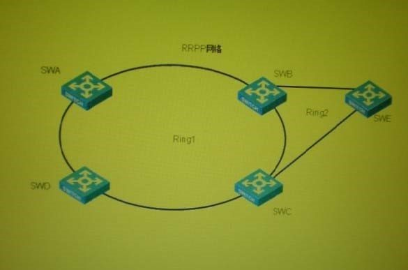
A. 如果交换机SWA连接交换机SWB的链路为Down状态，交换机SWE将放开副端口
B. 如果交换机SWB连接交换机SWC的链路为Down状态，交换机SWE将放开副端口
C. 如果交换机SWA连接交换机SWB的链路为Down状态,交换机SWB连接交换机SWC的链路为Down 状态，交换机SWE将放开副端口
D. 如果交换机SWA连接交换机SWB的链路为Down状态，交换机SWA连接交换机SWD的链路为Down 状态，交换机SWE将放开副端口
Correct Answer: C
Section: (none)
Explanation
Explanation/Reference:
QUESTION 232
图示是RRPP的组网应用客户局域网交换机SWA、SWB、SWC、SWD上构成RRPP环主环1,交换机SWB、
SWC和SWE构成子环2，交换机SWB、sWC和sWF构成子环3如果交换机SWE为子环2的主节点，SWF为子环3的主节点，交换机SWB为子环2和子环3的边缘节点为了消除RRPP双归属组网特定条件下产生广播风暴的缺陷，从上述信息可以得知
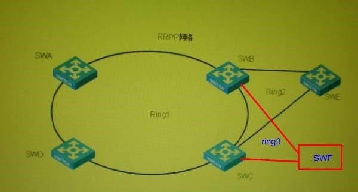
A. 如果交换机SWA连接交换机SWD的链路为Down状态，交换机SWB上的边缘端口将被阻塞
B. 如果交换机SWB连接交换机SWC的链路为Down状态，交换机SWB上的边缘端口将被阻塞
C. 如果交换机SWA连接交换机SWB的链路为Down状态,交换机SWB连接交换机SWC的链路为Down状态, 交换机SWB上的边缘端口将被阻塞
D. 如果交换机SWA连接交换机SWB的链路为Down状态，交换机SWA连接交换机SWD的链路为Down状态，交换机SWB上的边缘端口将被阻塞
Correct Answer: C
Section: (none)
Explanation
Explanation/Reference:
QUESTION 233
图示是RRPP的组网应用客户局域网交换机SWA、SWB、SWC、SWD上构成RRPP环主环1,交换机SWB、
SWC和SWE构成子环2，交换机SWB、sWC和sWF构成子环3如果交换机SWE为子环2的主节点，SWF为子环3的主节点从上述信息可以得知
A. 无法把子环2和子环3加入同一个环组中
B. 如果把子环2和子环3加入同一个环组，环组中的子环2和子环3,其边缘节点和辅助边缘节点可以不同
C. 如果把子环2和子环3加入同一个环组，环组应分别配置在交换机上SWB、SWC、SWE、SWF,并且配置应该一致
D. 如果把子环2和子环3加入同一个环组，环组中的子环2和子环3,其边缘节点和辅助边缘节点所对应的主环链路应该一致
Correct Answer: D
Section: (none) Explanation
Explanation/Reference:
QUESTION 234
客户二台路由器通过局域网连接在一起，二台路由器组成VRRP备份组相关配置如下：
[RTA-GigabitEthernet1 /0]display this ip address 192.168.0.252 255.255.255.0 vrrp vrid 1 virtual-ip 192.168.0.254 vrrp vrid 1 priority 120
[RTB-GigabitEthernet1/0]display this ip address 192.168.0.253 255.255.255.0 vrrp vrid 1 virtual-ip 192.168.0.254
RTA 路由器 GigabitEthernet1/0 接口 MAC 为 000f-4300-0001, RTB 路由器 GigabitEthernet1/0 接口MAC为
000f-4300-0002 如果RTA采用聚合组Real-mac模式，RTB采用聚合组virtual-mac模式，从上述信息可以得
知
A. RTA和RTB无法建立VRRP组
B. 局域网PC接收到的网关MAC为0000-5e00-0101
C. 局域网PC接收到的网关MAC为000f-4300-0001
D. 如果局域网PC接收到的网关MAC为0000-5e00-0101，则路由器RTB处于VRRP Master状态
Correct Answer: CD
Section: (none) Explanation
Explanation/Reference:
QUESTION 235
客户二台交换机SWA, SWB通过局域网连接在一起，二台交换机SWA、SWB组成链路聚合组在SWA上査看聚合组状态如下：
[SWA]display link-aggregation verbose
Loadsharing Type: Shar -- Loadsharing, NonS -- Non-Loadsharing
Port Status: S -- Selected, U -- Unselected
Flags:A -- LACP_Activity, B -- LACP_Timeout, C -- Aggregation,
D -- Synchronization, E -- Collecting, F -- Distributing,
G -- Defaulted, H -- Expired System ID: 0x8000, 000f-e245-6bc0 Local:
Port StatusPriority Oper-KeyFlag
GE1/0/1S 327682 {ACDEF}KOKOMADE
GE1/0/2S 327682 {ACDEF}KOKOMADE
GE1/0/3S 327682 {ACDEF}KOKOMADE Remote:
ActorPartner Priority Oper-KeySystemID Flag
GE1/0/125327682 0x8000, 000f-e23d-59f0 {ACDEF}KOKOMADE
GE1/0/226327682 0x8000 000f-e23d-59f0 {ACDEF}KOKOMADE
GE1/0/327327682 0x8000 000f-e23d-59f0 {ACDEF}KOKOMADE
从上述信息可以得知
A. 交换机SWA和交换机SWB之间建立的是静态聚合组
B. 交换机SWA和交换机SWB之间建立的是动态聚合组
C. LACP优先级为0x8001
D. 链路聚合端口带宽大小2G
Correct Answer: B
Section: (none) Explanation
Explanation/Reference:
QUESTION 236
两台路由器RTA和RTB通过局域网连接在一起，组成VRRP备份组，各路由器接口配置如下:
RTA 的 GigabitEthernet1/0 ip address 192.168.0.252 255.255.255.0 ip address 192.168.1.252 255.255.255.0 sub
vrrp vrid 1 virtual-ip 192.168.0.254 vrrp vrid 1 priority 120
vrrp vrid 2 virtual-ip 192.168.1.254 RTB 的 GigabitEthernet1/0 ip address 192.168.0.253 255.255.255.0 ip address 192.168.1.253 255.255.255.0 sub
vrrp vrid 1 virtual-ip 192.168.0.254 vrrp vrid 2 virtual-ip 192.168.1.254 vrrp vrid 2 priority 120
从上述信息可以-知
A. 备份组1可以成功建立，备份组2无法成功建立
B. 备份组1可以成功建立，备份组2可以成功建立
C. 路由器A为备份组1的Master路由器，备份组2无Master路由器
D. 路由器A为备份组1的Master路由器，路由器B为备份组2的Master路由器
Correct Answer: BD
Section: (none) Explanation
Explanation/Reference:
QUESTION 237
客户六台交换机SWA、SWB、swc、SWD、SWE、SWF通过局域网连接在一起，组成RRPP环在SWB上査看RRPP状态如下：
<SWB>dis rrpp verbose domain 1
Domain ID ： 1
Ring ID ： 1
Ring Level: 0
Node Mode ： Transit
Ring state:-
Enable Status ： YesActive Status: Yes
Primary port: GigabitEthernet2/0/1 Port status: UP
Secondary port: GigabitEthernet2/0/2 Port status: UP
Ring ID ： 2
Ring Level: 1
Node Mode ： Edge
Ring state:-
Enable Status ： YesActive Status: Yes
Common port ： GigabitEthernet2/0/1 Port status: UP
GigabitEthernet2/0/2 Port status: UP
Edge port ： GigabitEthernet2/0/3 Port status: UP Ring ID ： 3
Ring Level: 1
Node Mode ： Edge
Ring state:-
Enable Status ： YesActive Status: Yes
Common port ： GigabitEthernet2/0/1 Port status: UP
GigabitEthernet2/0/2 Port status: UP
Edge port ： GigabitEthernet2/0/4 Port status: UP
从上述信息可&得知
A. SWB是RRPP子环2的传输节点
B. SWB共接入了3个子环
C. GigabitEthernet2/0/1为 RRPP 子环 2 的边缘端口
D. GigabitEthernet2/0/4为 RRPP 子环 3 的边缘端口
Correct Answer: D
Section: (none) Explanation
Explanation/Reference:
QUESTION 238
客户的局域网交换机SWA双上行连接交换机SWB和交换机SWC,通过SmartLink保证链路可靠性从上述信息可以得知___
A. 在各端口配置一致的情况下，可以选取SWA聚合成员端口作为SmartLink端口
B. 在各端口配置一致的情况下，可以选取SWARRPP成员端口作为Smart Link端口
C. 在各端口配置一致的情况下，可以选取SWASTP成员端口作为Smart Link端口
D. 以上答案都不正确
Correct Answer: D
Section: (none) Explanation
Explanation/Reference:
QUESTION 239
两台路由器RTA和RTB通过局域网连接在一起，组成VRRP备份组，各接口配置如下：
RTA 的 GigabitEthernet1/0.1 vlan-type dot1 q vid 2 ip address 192.168.0.252 255.255.255.0 vrrp vrid 1 virtual-ip 192.168.0.254 vrrp vrid 1 priority 120
RTA 的 GigabitEthernet1/0.2 vlan-type dot1 q vid 3 ip address 192.168.1.252 255.255.255.0 vrrp vrid 2 virtual-ip 192.168.1.254 vrrp vrid 2 priority 120
RTB 的 GigabitEthernet1/0.1 ： vlan-type dot1 q vid 2 ip address 192.168.0.253 255.255.255.0
vrrp vrid 1 virtual-ip 192.168.0.254 RTB 的 GigabitEthernet1/0.2： vlan-type dot1 q vid 3 ip address 192.168.1.253 255.255.255.0 vrrp vrid 2 virtual-ip 192.168.1.254
局域网内主机HostA、HostB的IP地址分别为192.168.0.1 、192.168.1.1从上述信息可以得知
A. 备份组使用实MAC方式，则HostA、HostB学到的网关MAC地址一致
B. 备份组使用实MAC方式，则HostA、HostB学到的网关MAC地址不一致 C. 备份组使用虚MAC方式，则HostA、HostB学到的网关MAC地址一致
D. 备份组使用虚MAC方式，则HostA、HostB学到的网关MAC地址不一致
Correct Answer: AD
Section: (none) Explanation
Explanation/Reference:
QUESTION 240
两台路由器RTA和RTB通过局域网连接在一起，组成VRRP备份组，局域网内主机HostA的IP地址为
192.168.0.1, HostA学到的网关MAC地址为0000-5e00-0105 从上述信息可以得知
A. 备份组使用实MAC方式
B. 备份组使用虚MAC方式
C. 备份组vrid为4
D. 备份组vrid为5
Correct Answer: BD
Section: (none) Explanation
Explanation/Reference:
QUESTION 241
二台路由器通过局域网连接在一起，组成VRRP备份组，各接口上配置如下： [RTA-GigabitEthernet1/0]display this ip address 192.168.0.252 255.255.255.0 vrrp vrid 1 virtual-ip 192.168.0.254 vrrp vrid 1 priority 120 vrrp vrid 1 preempt-mode
vrrp vrid 1 track interface serial0/1 reduced 30 [RTB-GigabitEthernet1/0]display this ip address 192.168.0.253 255.255.255.0 vrrp vrid 1 virtual-ip 192.168.0.254 vrrp vrid 1 preempt-mode
若网络运行中，RTA串口 Serial0/1发生了一次DoWN/UP事件，则可以得知
A. 在RTA串口Serial0/1 DOWN/UP时间段内，响应局域网PC ARP请求的路由器不会改变
B. 在RTA串口Serial0/1 DOWN/UP时间段内，响应局域网PC ARP请求的路由器改变1次 C. 在RTA串口Serial0/1 DOWN/UP时间段内，响应局域网PC ARP请求的路由器改变2次
D. 在RTA串口Serial0/1 DOWN/UP时间段内，响应局域网PC ARP请求的路由器改变3次
Correct Answer: C
Section: (none) Explanation
Explanation/Reference:
QUESTION 242
二台路由器通过局域网连接在一起，组成VRRP备份组，各接口上配置如下：
[RTA-GigabitEthernet1/0]display this ip address 192.168.0.252 255.255.255.0 vrrp vrid 1 virtual-ip 192.168.0.254 [RTB-GigabitEthernet1/0]display this ip address 192.168.0.253 255.255.255.0 vrrp vrid 1 virtual-ip 192.168.0.254
从上述信息可以得知
A. RTA为备份组Master路由器
B. RTB为备份组Master路由器
C. RTA、RTB无法选举出备份组Master路由器
D. RTA、RTB都处于 VRRP Master 状态
Correct Answer: B
Section: (none) Explanation
Explanation/Reference:
QUESTION 243
组播应用基于UDP,故组播应用存在如下缺点
A. 无拥塞控制
B. 数据包重复接收
C. 可以纠正组播数据包乱序到达的问题
D. 尽 大努力交付，无法保证低延时应用需求
Correct Answer: ABD
Section: (none)
Explanation
QUESTION 244
关于单播、组播和广播的对比，正确的有
A. 和单播相比，组播可以减少链路负载
B. 和广播相比，组播可以提升链路使用率
C. 和广播相比，组播可以减轻发送源的负担
D. 和单播相比，组播可以减轻发送源的负担
Correct Answer: ABD
Section: (none) Explanation
QUESTION 245 组播IP 地址为 229.130.130.1,其对应的mac地址为：
Correct Answer: 01-00-5e-02-82-01
Section: (none) Explanation
Explanation/Reference:
QUESTION 246 组播IP 地址为 229.130.130.1，其对应的MAC地址为：
A. 00-00-5E-02-82-01
B. 01-00-5E-02-82-01
C. 00-00-5E-82-82-01
D. 01-00-5E-82-82-01
Correct Answer: B
Section: (none) Explanation
QUESTION 247
以下哪个地址不属于IPv4组播地址-
A. 232.255.255.255
B. 242.255.255.250
C. 239.255.255.255
D. 224.0.0.13
Correct Answer: B
Section: (none) Explanation
QUESTION 248
以下哪个地址不属于IPv4组播地址-
A. 232.255.255.255
B. 240.0.0.5
C. 239.255.255.255
D. 224.0.0.13
Correct Answer: B
Section: (none) Explanation
QUESTION 249
以下哪些协议不是运行在主机和路由器之间的组播组管理协议?
A. IGMPV2
B. MSDP
C. PIM-DM
D. PIM-SM
E. MLD
Correct Answer: BCD
Section: (none) Explanation
QUESTION 250
以下哪些协议是运行在路由器和路由器之间的组播路由协议-
A. IGMPV2
B. DVMRP
C. PIM
D. MOSPF
E. MLD
Correct Answer: BCD
Section: (none) Explanation
QUESTION 251
下列关于组播路由协议的表述，正确的有
A. 组播路由协议有密集和稀疏两种模式
B. 在密集模式下，组播数据流采用推的方式从组播源泛洪发送到网络的每个角落，组播接收者被动的接收组播报文
C. 在稀疏模式下，组播数据流采用拉的方式从组播源发送到组播接收者，组播接收者主动发送接收请求
D. 域内组播路由协议包括：MSDP、DVMRP、MOSPF、PIM
Correct Answer: ABC
Section: (none) Explanation
QUESTION 252
通过査看IGMP组信息，可以了解到的内容有
A. 路由器维护的组播组信息
B. 组播组Report报文个数
C. 组播组IGMP査询器
D. 组播组第一个发送Report报文的主机地址
Correct Answer: ABC
Section: (none)
Explanation
QUESTION 253
由于网络规模扩大可能导致管理工作越来越繁重，因此在网络建设初期，网络管理员都希望采取各种各样的技术来降低网络管理工作量其中 为常用的方法是简化网络结构，统一网络设备等方法下列哪些技术属于简化网络结构的技术
A. SNMP协议
B. 集群技术
C. 堆叠技术
D. 万兆以太网
Correct Answer: BC
Section: (none)
Explanation
Explanation/Reference:
QUESTION 254
为了实现网络的高效管理，在大型园区网络中我们常常需要部署哪些服务器-
A. 网管服务器
B. FTP服务器
C. Telnet服务器
D. 日志服务器
E. NTP服务器
Correct Answer: ADE
Section: (none)
Explanation
QUESTION 255
作为某企业的网络管理主管，王总在网络建设中坚持如下网络技术和网络设备的选择应用原则作为网络工程师的您认为那些技术的选择和应用对网络管理是不利的-
A. 网络设备至少由三个不同的厂家提供
B. 路由协议必须选择标准的动态路由协议
C. 要求所有设备都必须支持标准的拓扑发现协议
D. 各厂家网络设备必须采用自己的网络管理系统进行管理
Correct Answer: AD
Section: (none)
Explanation
QUESTION 256
路由器运行IGMPV2协议,其直连局域网中的主机收到的Query报文中GroupAddress可能为(选择一项或多项）
A. 255.255.255.255
B. 224.0.0.1
C. 0.0.0.0
D. 225.1.1.1
E. 224.0.0.2
Correct Answer: CD
Section: (none) Explanation
Explanation/Reference:
QUESTION 257
以下关于组播VLAN的表述，正确的是
A. 组播VLAN既节省了带宽，又减轻了三层设备的负担
B. 需要将主机所属的VLAN配置为组播VLAN的子VLAN
C. 组播VLAN需要启用IGMP-Snooping功能
D. 组播VLAN的子VLAN必须同时启用IGMP-Snooping功能
Correct Answer: ABC
Section: (none) Explanation
QUESTION 258
当主机收到IGMPV2査询器发出的通用组査询（GeneralQuery)报文后，（选择一项或多项)
A. 主机立即发送MembershipReport报文
B. Report报文的目的地址与报文中的GroupAddress地址相同
C. Report报文的目的地址为224.0.0.1
D. 主机只有收到通用组査询（GeneralQuery)后才会发送Membership Report报文
Correct Answer: B
Section: (none) Explanation
QUESTION 259
当IGMPV2主机离开某组播组时，会发送LeaveGroup报文，如下表述正确的是
A. 査询路由器收到Leave报文后立即发送特定组査询报文
B. Leave报文的目的地址与报文中的GroupAddress地址相同
C. Leave报文的目的地址为224.0.0.2
D. 査询路由器收到Leave报文后立即删除相关Group的组播组表项
Correct Answer: AC
Section: (none) Explanation
QUESTION 260
以下哪个组播组管理协议可以支持SSM模型-（选择一项或多项）
A. IGMPvl
B. IGMPV2
C. IGMPV3
D. MLDvl
E. MLDV2
Correct Answer: CE
Section: (none)
Explanation
QUESTION 261
在共享网段存在多台IGMPv2组成员主机(Client1/Client2/Client3),同时还存在多台IGMPv2路由器(Router1/ Router2),如下图所示：
192.168.207.254 192.168.207.253
Router1 Router2
+++++
Clientl Client2 Client3
192.168.207.1 192.168.207.2192.168.207.3
那么，如下表述正确的是
A. Routerl、Router2定期向共享网段发送通用组査询
B. 只有Router1定期向共享网段发送通用组査询
C. 只有Router2定期向共享网段发送通用组査询
D. 主机收到査询报文后，只有Clients发送Report报文
E. 主机收到通用组査询报文后，Client1、Client2、Client3都可能发送Report报文
F. 主机收到通用组査询报文后，第一台主机发送Report报文后，其他主机Report报文被抑制
Correct Answer: CE
Section: (none) Explanation
Explanation/Reference:
QUESTION 262 在共享网段存在多台IGMPV2组成员主机(Client1/Client2/Client3),同时还存在多台IGMPv2路由器 (Router1/Router2),如下图所示：
||192.168.207.254 192.168.207.253
|| Router1 Router2
||+++++
||111
|| III
||Clientl Client2 Client3
||192.168.207.1 192.168.207.2192.168.207.3
那么，如下表述正确的是
A. Routerl、Router2定期向共享网段发送通用组査询
B. 只有Router1定期向共享网段发送通用组査询
C. 只有Router2定期向共享网段发送通用组査询
D. 主机收到査询报文后，只有Client1发送Report报文
E. 主机收到通用组査询报文后，Clientl、Client2、Client3都可能发送相
F. 主机收到通用组査询报文后，Clientl发送加入A组的Report报文不会抑制Client2加入B组的Report报文
Correct Answer: CEF
Section: (none) Explanation
Explanation/Reference:
QUESTION 263
关于IGMPV2消息报文的目的IP地址和协议报文中的组地址（GroupAddress)字段填充正确的是
A. 通用组査询报文的目的IP地址为224.0.0.1，报文中的组地址字段为0.0.0.0
B. 特定组査询报文的目的IP地址与报文中的组地址相同
C. 成员Report报文的目的IP地址与报文中的组地址相同
D. 成员Leave报文的目的IP地址与报文中的组地址相同
Correct Answer: ABC
Section: (none) Explanation
QUESTION 264
如图所示，在共享网段存在2台组成员主机Client1和3分别运行不同版本的IGMP协议，同时还存在一台 IGMPV2路由器Router,那么如下表述正确的是
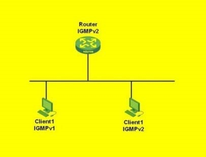
A. Router按照IGMPv2协议方式工作
B. Router按照IGMPv1协议方式工作
C. CIient1的主机报告抑制Client2的主机报告 D. CIient2的主机报告抑制Client1的主机报告
Correct Answer: BC
Section: (none) Explanation
Explanation/Reference:
QUESTION 265
当IGMPV3主机希望离开组播组G时，主机会主动发送Membership Report报文，报文中包含的组记录为
A. TO_IN(A, G)
B. TO_EX(A, G)
C. TO_IN(Null, G)
D. TO_EX(Null, G)
Correct Answer: C
Section: (none) Explanation
Explanation/Reference:
QUESTION 266
关于组播组管理协议IGMPv1、IGMPV2、IGMPv3三个版本的表述，正确的是
A. 三个版本査询器的选举原则相同
B. IGMPv1没有离开消息
C. IGMPV2、IGMPV3有特定组査询消息
D. 只有IGMPV3设计了特定组加入机制
E. IGMPV2、IGMPV3设计了成员报告抑制机制
Correct Answer: BCD
Section: (none) Explanation
Explanation/Reference:
QUESTION 267
关于组播组管理协议IGMPv1、IGMPV2、IGMPv3三个版本的表述，正确的是
A. 三个版本査询器的选举原则相同
B. IGMPv1没有离开消息
C. IGMPV2、IGMPV3有特定组査询消息
D. 只有IGMPV3设计了特定源、组加入机制
E. IGMPV3取消了成员报告抑制机制
Correct Answer: BCDE
Section: (none) Explanation
Explanation/Reference:
QUESTION 268
关于IGMP-Snooping工作原理，正确的是
A. 二层设备依靠IGMP-sliooping侦听IGMP消息，在二层维护组播地址转发表项
B. 通过侦听IGMPQuery报文，IGMP-Snooping确定路由端口
C. 通过侦听IGMPReport报文，IGMP-Snooping添加端口到已知组播组或者建立新的组播转发表项
Correct Answer: ABC
Section: (none) Explanation
QUESTION 269
关于组播分发树模型SPT,以下表述正确的是______。
A. SPT模型中，组播源到达任何一个接收者所经过的路径都是 优的
B. SPT上的每台路由器都会维护(S,G)表项
C. SPT上的每台路由器都会维护（*,G)表项
D. 不同组播源以自己为根，独立建立SPT
Correct Answer: ABD
Section: (none) Explanation
Explanation/Reference:
QUESTION 270
对于组播分发树模型，以下表述正确的是______。
A. 组播分发树模型分为SPT和RPT两种
B. SPT上的每台路由器都会维护(S,G)表项
C. RPT上的每台路由器都会维护（*,G)表项
D. 不同组播源以自己为根，独立建立RPT
Correct Answer: ABC
Section: (none) Explanation
Explanation/Reference:
QUESTION 271
当路由器收到组播数据后，査找组播转发表
A. 如果组播转发表中不存在对应的（S,G)表项，路由器丢弃组播数据
B. 如果组播转发表中存在对应的（S,G)表项，且该报文实际到达的接口与表项中入接口相匹配，路由器转发组播数据
C. 如果组播转发表中存在对应的（S,G)表项，但该报文实际到达的接口与表项中入接口不匹配，路由器丢弃组播数据
D. 如果组播数据RPF接口与（S,G)表项中的入接口不符，路由器会将表项的入接口更新为检査得到的RPF
Correct Answer: BD
Section: (none) Explanation
QUESTION 272
如图所示组网中，路由器的单播路由表如下：
<H3C>display ip routing-table
Routing Tables: Public
Destinations ： 9Routes ： 9
Destination/MaskProtoPreCost NextHop Interface
10.1.1.0/30 Direct 0010.1.1.2S0/2/0
10.1.1.1/32 Direct 0010.1.1.1 S0/2/0
10.1.1.2/32 Direct 00127.0.0.1 InLoopO
11.1.1.0/30 Direct 0011.1.1.1 Eth0/110
11.1.1.1/32 Direct 00127.0.0.1 InLoopO
12.1.1.0/30 Direct 0012.1.1.1Eth0/1/1
12.1.1.1/32 Direct 00127.0.0.1 InLoopO
13.1.1.0/30 Direct 0013.1.1.1EthO/1/2
13.1.1.1/32 Direct 00127.0.0.1 InLoopO
100.1.1.0/240SPF 10 1563 10.1.1.1S0/2/0
127.0.0.0/8 Direct 00127.0.0.1 InLoopO
127.0.0.1/32Direct 00127.0.0.1 InLoopO
200.1.1.0/240SPF 10 212.1.1.2Eth0/1/1
那么，接收者(Receiver)会收到的组播数据为
A. (100.1.1.1, 226.1.1.1)
B. (200.1.1.1, 226.2.2.2)
C. (100.1.1.1, 226.3.3.3)
Correct Answer: AB Section: (none) Explanation
Explanation/Reference:
QUESTION 273
如图所示PIM-DM组网中，路由器RT1、RT2的部分单播路由表如下:
<RT1>display ip routing-table
Routing Tables: Public
Destination/MaskProtoPreCost NextHop Interface
1.1.1.0/24xxxxP1-1 C1-110.1.1.1Port1
1.1.0.0/16xxxxP1-2 C1-210.1.1.1Port1
<RT2>display ip routing-table
Routing Tables: Public
Destination/MaskProtoPreCost NextHop Interface
1.1.1.0/24XXXX P2-1 C2-111.1.1.1Port2
1.1.1.1/32XXXX P2-2 C2-211.1.1.1Port2
那么，当路由器RT1、RT2进行Assert时，获胜的一方应该是
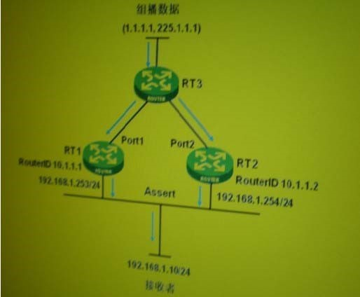
A. 如果P1-1> P2-1, C1-1<C2-1,则 RT1 获胜 B. 如果P1-1> P2-2, C1-1<C2-2,则 RT2 获胜 C. 如果P1-1= P2-1, C1-1<C2-1,则 RT1 获胜 D. 如果P1-1= P2-2, C1-1<C2-2,则 RT2 获胜 E. 如果P1-1= P2-1, C1-1=C2-1,则 RT1 获胜
F. 如果P1-1= P2-2, C1-1=C2-2,则 RT2 获胜
Correct Answer: BF
Section: (none)
Explanation
Explanation/Reference:
QUESTION 274
如图所示PIM-DM组网中，路由器RT1、RT2的部分单播路由表如下:
<RT1>display ip routing-table
Routing Tables: Public
Destination/MaskProtoPreCost NextHop Interface
1.1.1.0/24xxxxP1-1 C1-110.1.1.1POI11
1.1.0.0/16xxxxP1-2 C1-210.1.1.1Port1
<RT2>display ip routing-table
Routing Tables: Public
Destination/MaskProtoPreCost NextHop Interface
1.1.1.0/24XXXX P2-1 C2-111.1.1.1Port2
1.1.1.1/32XXXX P2-2 C2-211.1.1.1Port2
那么，当路由器RT1、RT2进行Assert时，获胜的一方应该是
A. 如果P1-1< P2-1,C1-1<C2-1,则 RT1 获胜 B. 如果P1-1< P2-2,C1-1<C2-2,则 RT2 获胜 C. 如果P1-1= P2-1,C1-1>C2-1,则 RT1 获胜 D. 如果P1-1= P2-2,C1-1>C2-2,则 RT2 获胜 E. 如果P1-1= P2-1,C1-1=C2-1,则 RT1 获胜
F. 如果P1-1= P2-2,C1-1=C2-2,则 RT2 获胜
Correct Answer: DF
Section: (none) Explanation Explanation/Reference:
QUESTION 275
如图所示PIM-DM组网中，路由器RT1、RT2的部分单播路由表如下:
<RT1>display ip routing-table
Routing Tables: Public
Destination/MaskProtoPreCost NextHop Interface
1.1.1.0/24xxxxP1-1 C1-110.1.1.1POI11
1.1.0.0/16xxxxP1-2 C1-210.1.1.1Port1
<RT2>display ip routing-table Routing Tables: Public
A. 如果P1-1> P2-2,
B. 如果P1-2> P2-2,
C. 如果P1-1= P2-2,
D. 如果P1-2= P2-2,
E. 如果P1-1= P2-2,
F. 如果P1-2= P2-2,
Correct Answer: C
Section: (none) Explanation
Explanation/Reference:
QUESTION 276
如图所示PIM-DM组网中，路由器RT1、RT2的部分单播路由表如下:
<RT1>display ip routing-table
Routing Tables: Public
Destination/MaskProtoPreCost NextHop Interface
1.1.0.0/16xxxxP1-1 C1-110.1.1.1POI11
1.1.1.0/24xxxxP1-2 C1-210.1.1.1Port1 <RT2>display ip routing-table
Routing Tables: Public
Destination/MaskProtoPreCost NextHop Interface
1.1.1.0/24XXXX P2-1 C2-111.1.1.1Port2
1.1.1.1/32XXXX P2-2 C2-211.1.1.1Port2
那么，当路由器RT1、RT2进行Assert时，获胜的一方应该是
A. 如果 P1-1>P2-2,C1-1<C2-2,则RT1获胜 B. 如果 P1-2>P2-2,C1-1<C2-2,则RT2获胜 C. 如果 P1-1=P2-2,C1-1<C2-2,则RT1获胜 D. 如果 P1-2=P2-2,C1-2<C2-2,则RT2获胜 E. 如果 P1-1=P2-2,C1-1=C2-2,则RT1获胜
F. 如果 P1-2=P2-2,C1-2=C2-2,则RT2获胜
Correct Answer: BF
Section: (none) Explanation
Explanation/Reference:
QUESTION 277
以下PIMV2的几种消息中，目的地址为组播地址的有.
A. Hello
B. Join
C. Prune
D. Assert
E. Graft
F. Graft-ACK
Correct Answer: ABCD
Section: (none) Explanation
QUESTION 278
以下PIMV2的几种消息中，目的地址为单播地址的有
A. Hello
B. Register
C. Join
D. Prune
E. Assert
F. Graft
Correct Answer: BF
Section: (none) Explanation
QUESTION 279
下列关于PIMSM共享网段DR的表述，正确的有
A. 只有当接收者侧有多台路由器连到该共享网段，且路由器运行IGMPV1时，才需要进行DR选举
B. 接收者侧的DR负责向RP发送加入报文
C. 组播源侧的DR负责向RP发送注册报文
D. 组播源侧的DR必须运行IGMP,否则接收者侧的接收者不能收到组播流量
Correct Answer: BC
Section: (none) Explanation
QUESTION 280
下列关于PIMSM共享网段DR选举过程的表述，正确的有
A. 选举DR时，首先比较Hello消息的优先级，拥有 高Hello消息优先级的路由器将成为该网段的DR
B. 如果Hello消息的优先级相同，则共享网段Routerid大的路由器将成为该网段的DR
C. 如果Hello消息的优先级相同，则共享网段接口IP地址大的路由器将成为该网段的DR
D. 选举DR后，再选举BDR,当DR出现故障时，BDR迅速接替其工作，保障组播流量正常转发
Correct Answer: AC
Section: (none) Explanation
QUESTION 281
如图所示组网中，RT1、RT2和RT3之间运行PIMSM协议，RP为1.1.1.1RT3上连有接收者，且在相应接口上使能IGMP,组播源2.2.2.2连接在RT2上在RT3査看单播路由表如下：
[RT3]display ip routing-table
Routing Tables: Public
Destinations ： 11 Routes ： 12
Destination/MaskProtoPreCost NextHop Interface
1.1.1.1/320SPF 10 1562 192.168.0.1 S0/2/0
2.2.2.2/320SPF 10 1562 192.168.2.1 so/2/1
127.0.0.0/8 Direct 00127.0.0.1 InLoopO
127.0.0.1/32Direct 00127.0.0.1 InLoopO
192.168.0.0/30Direct 00192.168.0.2 S0/2/0
192.168.0.1/32Direct 00192.168.0.1 S0/2/0
192.168.0.2/32Direct 00127.0.0.1 InLoopO
192.168.1.0/300SPF 10 3124 192.168.2.1 so/2/1
OSPF 10 3124 192.168.0.1 S0/2/0
192.168.2.0/30Direct 00192.168.2.2 so/2/1
192.168.2.1/32Direct 00192.168.2.1 so/2/1 192.168.2.2/32Direct 00127.0.0.1 InLoopO
那么，当接收者（Receiver)发送组加入请求后，下列哪些路由器上存在(*, G)表项
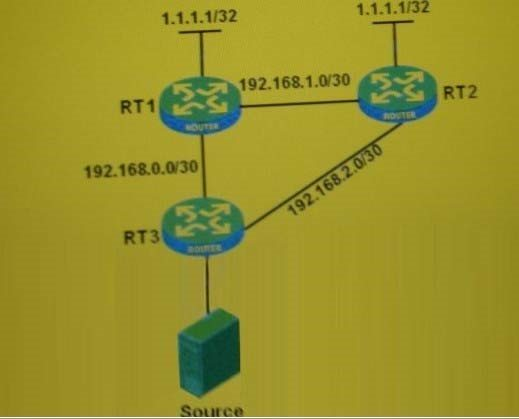
A. RT1
B. RT2
C. RT3
Correct Answer: AC
Section: (none) Explanation
Explanation/Reference:
QUESTION 282
如图所示组网中，RT1、RT2和RT3之间运行PIM SM协议，RP为1.1.1.1RT3上连有接收者，且在相应接口上使能IGMP在RT3査看单播路由表如下：
[RT3]display ip routing-table
Routing Tables: Public
Destinations ： 10 Routes ： 10
Destination/MaskProtoPreCost NextHop Interface
1.1.1.1/320SPF 10 1562 192.168.2.1 so/2/1
127.0.0.0/8 Direct 00127.0.0.1 InLoopO
127.0.0.1/32Direct 00127.0.0.1 InLoopO
192.168.0.0/30Direct 00192.168.0.2 S0/2/0
192.168.0.1/32Direct 00192.168.0.1 S0/2/0
192.168.0.2/32Direct 00127.0.0.1 InLoopO
192.168.1.0/300SPF 10 3124 192.168.2.1 so/2/1
192.168.2.0/30Direct 00192.168.2.2 so/2/1
192.168.2.1/32Direct 00192.168.2.1 so/2/1
192.168.2.2/32Direct 00127.0.0.1 InLoopO
那么，当接收者（Receiver)发送组加入请求后，下列哪些路由器上存在(*, G)表项
A. RT1
B. RT2
C. RT3
Correct Answer: BC
Section: (none) Explanation
Explanation/Reference:
QUESTION 283
如图所示组网中，RT1、RT2和RT3之间运行PIM SM协议，RP为1.1.1.1RT3上连有接收者，且在相应接口上使能IGMP,组播源2.2.2.2连接在RT2上在RT3査看单播路由表如下：
[RT3]display ip routing-table
Routing Tables: Public
Destinations ： 11 Routes ： 12
Destination/MaskProtoPreCost NextHop Interface
1.1.1.1/320SPF 10 1562 192.168.2.1 so/2/1
2.2.2.2/320SPF 10 1562 192.168.2.1 so/2/1
127.0.0.0/8 Direct 00127.0.0.1 InLoopO
127.0.0.1/32Direct 00127.0.0.1 InLoopO
192.168.0.0/30Direct 00192.168.0.2 S0/2/0
192.168.0.1/32Direct 00192.168.0.1 S0/2/0
192.168.0.2/32Direct 00127.0.0.1 InLoopO
192.168.1.0/300SPF 10 3124 192.168.2.1 so/2/1
OSPF 10 3124 192.168.0.1 S0/2/0
192.168.2.0/30Direct 00192.168.2.2 so/2/1
192.168.2.1/32Direct 00192.168.2.1 so/2/1
192.168.2.2/32Direct 00127.0.0.1 InLoopO
那么，当接收者（Receiver)发送组加入请求后，下列哪些路由器上存在(*, G)表项
A. RT1
B. RT2
C. RT3
Correct Answer: ABC
Section: (none) Explanation
Explanation/Reference:
QUESTION 284
如图所示组网中，RT1、RT2、RT3和RT4之间互连线除共享以太网部分为10Mbps链路外，其余均为 1000Mbps链路，运行OSPF协议使路由互通这4台路由器间均运行PIMSM协议，RP为1.1.1.1RT1与RT2下游接口上连有接收者，且均在相应接口上使能IGMP那么，当接收者（Received）发送组加入请求后，下列哪些路由器上存在(*, G)表项
A. RT1
B. RT2
C. RT3
D. RT4
Correct Answer: ABCD
Section: (none)
Explanation
Explanation/Reference:
QUESTION 285
如图所示组网中，RT1、RT2和RT3之间运行PIMSM协议，RP为1.1.1.1RT3上连有接收者，且在相应接口上使能IGMP在RT3査看单播路由表如下：
[RT3]display ip routing-table
Routing Tables: Public
Destinations ： 10 Routes ： 10
Destination/MaskProtoPreCost NextHop Interface
1.1.1.1/320SPF 10 1562 192.168.0.1 S0/2/0
127.0.0.0/8 Direct 00127.0.0.1 InLoopO
127.0.0.1/32Direct 00127.0.0.1 InLoopO
192.168.0.0/30Direct 00192.168.0.2 S0/2/0
192.168.0.1/32Direct 00192.168.0.1 S0/2/0
192.168.0.2/32Direct 00127.0.0.1 InLoopO
192.168.1.0/300SPF 10 3124 192.168.2.1 so/2/1
192.168.2.0/30Direct 00192.168.2.2 so/2/1
192.168.2.1/32Direct 00192.168.2.1 so/2/1
192.168.2.2/32Direct 00127.0.0.1 InLoopO
那么，当接收者（Receiver)发送组加入请求后，下列哪些路由器上存在(*, G)表项
A. RT1
B. RT2
C. RT3
Correct Answer: AC
Section: (none) Explanation
Explanation/Reference:
QUESTION 286
下列关于PIM SM加入过程的表述，正确的有.
A. 只要DR本地有组播组G的接收者时，DR就会周期性地向上游发送加入消息
B. 当DR本地没有组播组G的接收者时，DR会向上游路由器发送剪枝消息
C. 如果上游路由器接收到剪枝消息的接口下的共享网段仍有接收者，则该接收者会发送组加入消息
D. PIMSM和PIM DM都存在剪枝否决过程
Correct Answer: ABCD
Section: (none) Explanation
QUESTION 287
如图所示组网中，RT1、RT2、RT3和RT4之间互连线除共享以太网部分为10M链路外，其余均为1000M链路，运行OSPF协议使路由互通这4台路由器间均运行PIMSM协议，RP为1.1.1.1 ，RT1与RT2下游接口上连有接收者，且均在相应接口上使能IGMP那么，当接收者（Receiver)发送组加入请求后，下列哪些路由器上
存在(*, G)表项-
A. RT1
B. RT2
C. RT3
D. RT4
Correct Answer: ABC
Section: (none) Explanation
Explanation/Reference:
QUESTION 288
运行PIM-DM的路由器会周期性发送Hello消息，用于发现邻居、建立并维护邻居关系，以下关于Hello消息描述正确的有__
A. 路由器以组播方式发送PIM Hello,目的地址为224.0.0.13
B. 所有PIM路由器都是224.0.0.13的组播组成员
C. 当路由器运行IGMPV2时，通过PIMHello消息为共享网段选举DR,并由DR作为IGMP的Querier
D. 选举DR时，拥有较高Hello消息优先级的路由器将成为DR
E. 如果Hello消息优先级相同，接口IP地址较大的路由器将成为DR
Correct Answer: ABDE
Section: (none) Explanation
Explanation/Reference:
QUESTION 289
运行PIM-DM的路由器会周期性发送Hello消息，用于发现邻居、建立并维护邻居关系，以下关于Hello消息描述正确的有__
A. 路由器以组播方式发送PIM Hello,目的地址为224.0.0.13
B. 当共享网段上有多台路由器运行IGMPV1时,通过PIMHello消息为共享网段选举DR,并由DR作为IGMP的
Querier
C. 选举DR时，拥有较高Hello消息优先级的路由器将成为DR
D. 如果Hello消息优先级相同，接口IP地址较小的路由器将成为DR
E. 如果其余路由器在超时时间内未收到DR发送的Hello消息，则触发新的DR选举过程
Correct Answer: ABCE
Section: (none)
Explanation
Explanation/Reference:
QUESTION 290
下列关于PIM SM注册过程的表述，正确的有（选择一项或多项）
A. 与PIM DM的PUSH方式不同，在PIM SM中，组播源只在有下游接收者时才开始发送组播流量
B. 组播源初始发送流量时，与之相连的DR会封装若干空Register消息向RP进行注册
C. RP第一次收到源注册消息后，会向组播源发送(*,G)加入消息，沿途建立(*,G)表项
D. RP正常收到组播源组播转发的流量后，向其下游接口组播转发直至组播接收者，沿途形成一颗从RP到组播接收者的RPT
Correct Answer: D
Section: (none)
Explanation
Explanation/Reference:
QUESTION 291
下列关于PIM SM的表述，正确的有
A. 组播源初始发送流量时，与之相连的DR上会形成(S,G)表项
B. 在收到组播源的注册消息时，RP向组播源方向发送加入消息，待收到组播源正常组播转发来的流量时才生成(S, G)表项
C. RP只有在接收到组播源组播转发的数据后，才会向下游转发组播流量
D. 组播流量从RP正常转发至组播接收者之前，沿途路由器都已建立起了(*,G)表项
Correct Answer: AD
Section: (none)
Explanation
Explanation/Reference:
QUESTION 292
下列关于PIM SM注册抑制定时器的表述，正确的有（选择一项或多项）
A. 组播源的DR路由器会维护一个注册抑制定时器,若定时器超时，DR会向RP单播组播源注册消息
B. 为避免注册抑制定时器超时，DR会在定时器超时前，将封装了组播数据的Register消息发往RP
C. RP收到DR的注册消息后，会发送注册停止消息，并更新本地的(S,G)和(*, G）表项
D. DR收到注册停止消息后，会更新注册抑制定时器，并继续以组播方式发送数据
Correct Answer: AD
Section: (none)
Explanation
Explanation/Reference:
QUESTION 293
如图所示组网中，RT1、RT2和RT3之间运行PIMSM协议，RP为1.1.1.1,且有下游接收者RT3上连有组播源，査看RT3单播路由表如下：
[RT3]display ip routing-table
Routing Tables: Public
Destinations ： 10 Routes ： 10
Destination/MaskProtoPreCost NextHop Interface
1.1.1.1/320SPF 10 1562 192.168.2.1 so/2/1
127.0.0.0/8 Direct 00127.0.0.1 InLoopO
127.0.0.1/32Direct 00127.0.0.1 InLoopO
192.168.0.0/30Direct 00192.168.0.2 S0/2/0
192.168.0.1/32Direct 00192.168.0.1 S0/2/0
192.168.0.2/32Direct 00127.0.0.1 InLoopO
192.168.1.0/300SPF 10 3124 192.168.2.1 so/2/1
192.168.2.0/30Direct 00192.168.2.2 so/2/1
192.168.2.1/32Direct 00192.168.2.1 so/2/1
192.168.2.2/32Direct 00127.0.0.1 InLoopO
那么，当RP发送注册停止消息后，下列哪些路由器上存在(S, G)表项
A. RT1
B. RT2
C. RT3
Correct Answer: BC
Section: (none) Explanation
Explanation/Reference:
QUESTION 294
如图所示组网中，RT1、RT2和RT3之间运行PIM SM协议，RP为1.1.1.1RT1与RT2下游接口上连有组播源，RP上有下游接收者
那么，当RP发送注册停止消息后，下列哪些路由器上存在(S, G)表项
A. RT1
B. RT2
C. RT3
Correct Answer: ABC
Section: (none) Explanation
Explanation/Reference:
QUESTION 295
如图所示组网中，RT1、RT2和RT3之间运行PIM SM协议，RP为1.1.1.1,且有下游接收者RT3上连有组播源，査看RT3单播路由表如下：
[RT3]display ip routing-table
Routing Tables: Public
Destinations ： 10 Routes ： 10
Destination/MaskProtoPreCost NextHop Interface
1.1.1.1/320SPF 10 1562 192.168.0.1 S0/2/0
127.0.0.0/8 Direct 00127.0.0.1 InLoopO
127.0.0.1/32Direct 00127.0.0.1 InLoopO
192.168.0.0/30Direct 00192.168.0.2 S0/2/0
192.168.0.1/32Direct 00192.168.0.1 S0/2/0
192.168.0.2/32Direct 00127.0.0.1 InLoopO
192.168.1.0/300SPF 10 3124 192.168.2.1 so/2/1
192.168.2.0/30Direct 00192.168.2.2 so/2/1
192.168.2.1/32Direct 00192.168.2.1 so/2/1 192.168.2.2/32Direct 00127.0.0.1 InLoopO
那么，当RP发送注册停止消息后，下列哪些路由器上存在(S, G)表项?
A. RT1
B. RT2
C. RT3
Correct Answer: AC
Section: (none) Explanation
Explanation/Reference:
QUESTION 296
如图所示组网中，RT1、RT2、RT3、RT4和RT5之间互连线均为千兆以太网线，运行OSPF,发布相应网段后实现路由互通路由器间均运行PIM SM协议，RP为RT4上连有接收者，且在相应接口上使能IGMP当初始沿RPT转发的组播流量满足向SPT切换条件时,下列哪些路由器上会收到(S, G)加入消息-
A. RT1
B. RT2
C. RT3
D. RT4
E. RT5
Correct Answer: BC
Section: (none) Explanation
Explanation/Reference:
QUESTION 297
下列关于PIMSM中RPT和SPT的表述，正确的有
A. 当组播流量沿着RPT转发时，沿途设备都建立了对应该组播源的(S,G)表项
B. 设备进行RPT向SPT切换时，向组播源方向发送join消息
C. 在RPT向SPT切换过程中，RP有可能收到沿RPT和SPT两个方向到达的两份组播流量，此时RP会向上游发送prune消息
D. SPT与RPT相比，组播报文经过 优路径到达接收者，提高了报文转发的效率
Correct Answer: BD
Section: (none) Explanation
Explanation/Reference:
QUESTION 298
如图所示组网中，RT1、RT2、RT3、RT4和RT5之间互连线均为千兆以太网线，运行OSPF,发布相应网段后实现路由互通路由器间均运行PIM SM协议，RP为1.1.1.1RT4上连有接收者，且在相应接口上使能IGMP 当初始沿RPT转发的组播流量切换至SPT后，下列哪些路由器构成SPT
A. RT1
B. RT2
C. RT3
D. RT4
E. RT5
Correct Answer: ABCD
Section: (none) Explanation
Explanation/Reference:
QUESTION 299
下列关于PIMSM中BSR与RP的表述，正确的有（选择一项或多项）
A. —个PIMSM域中只能有一个BSR
B. —个PIMSM域中只能有一个C-BSR
C. 一个PIMSM域中只能有一个RP
D. —个PIMSM域中只能有一个C-RP
Correct Answer: A
Section: (none) Explanation
QUESTION 300
下列关于PIMSM中BSR和RP的表述，正确的有
A. C-RP路由器周期性的以组播方式发送宣告报文
B. BSR收到C-RP宣告报文后，根据RP和组播组关系，计算各组播组需选择的RP,并将计算结果组播发送出去
C. BSR通过C-BSR之间的自动选举过程产生
D. C-BSR选举时，首先比较优先级，再比较自举报文IP地址
Correct Answer: CD
Section: (none) Explanation
Explanation/Reference:
QUESTION 301
下列关于PIMSM中BSR和RP作用的表述，正确的有
A. RP是组播接收者加入某组播组的汇聚点
B. RP是组播源转发组播流量的中转站
C. BSR控制RP信息的收集与传播，是PIM-SM域的管理核心
D. 若PIM-SM域没有BSR,则RP信息无法扩散，组播接收者无法正常加入，组播流量无法正常转发
Correct Answer: ABC
Section: (none)
Explanation
QUESTION 302
在PIM-DM的网络中，组播报文的扩散过程如下
A. 无论是否运行PIM协议，所有路由器均泛洪组播报文
B. PIM-DM路由器收到组播报文后将报文从所有接口发出去
C. PIM-DM路由器收到组播报文后将报文从所有连接PIM-DM邻居的接口发出去
D. PIM-DM路由器收到组播报文后将报文从所有连接PIM-DM邻居的非RPF接口发出去
E. PIM-DM路由器收到组播报文后将报文从所有连接成员主机的接口发出去
Correct Answer: DE
Section: (none)
Explanation
QUESTION 303
下列关于PIMSM中RP选举的表述，正确的有
A. C-RP路由器周期性发送的宣告报文信息包括C-RP地址、优先级以及其服务的组播组范围等信息
B. BSR收集宣告报文信息后，将其汇总为RP-Set,并组播发送
C. 一个RP可以为多个组播组服务
D. —个组播组可以选择多个RP进行负载分担
Correct Answer: ABC
Section: (none)
Explanation
QUESTION 304
下列关于PIMSM中RP选择的表述，正确的有
A. 首先比较C-RP的优先级，优先级较高者获胜
B. 再比较Hash函数计算的哈希值，值较大者获胜
C. 后比较C-RP地址，值较大者获胜
D. 为两个不同的组播组一定会选择不同的RP
Correct Answer: ABC
Section: (none)
Explanation
QUESTION 305
基于SOA的网络架构将企业IT系统划分成以下哪些层次-（选择一项或多项)
A. 网络层
B. 会话层
C. 应用层
D. 基础设施层
Correct Answer: CD
Section: (none) Explanation
QUESTION 306
基于SOA的网络架构将企业IT系统划分成以下哪些层次-（选择一项或多项)
A. 应用层 B. 业务层 C. 网络层
D. 服务层
Correct Answer: AD
Section: (none) Explanation
QUESTION 307
在PIM-DM组网中，关于路由器发送Prune(剪枝）消息，描述正确的有
A. 路由器无本地直连组播接收者时，会向上游RPF邻居发送Prune消息
B. 路由器（S,G)表项中出接口列表为空时，会向上游RPF邻居发送Prune消息
C. Assert(断言）失败的一方会向获胜一方发送Prune
D. 路由器接口收到Prune消息后，从此将不在此接口发送相应组播组的报文
E. 路由器RPF接口收到Prune消息后，从此将不在此接口接收相应组播组的报文
Correct Answer: BC
Section: (none) Explanation
QUESTION 308
如图组网，交换机启用RSTP,关于其配置下列说法正确的有
A. 可以将SWB和SWC互连的端口配置为边缘端口，实现拓扑的快速收敛
B. 可以将SWB和SWC的端口E0/3配置为边缘端口
C. 配置为边缘端口的端口可以直接进入转发状态，不需要延时
D. 如果边缘端口收到BPDU则会进入阻塞状态
Correct Answer: BC
Section: (none) Explanation
Explanation/Reference:
QUESTION 309
当运行MSTP的交换机和运行RSTP的交换机一起工作时，说法正确的有
A. RSTP交换机会将MST域看作一台逻辑上的交换，桥ID为MST域中和RSTP交换机直连的那台交换机的
ID
B. MSTP交换机会将RSTP交换机看作由一台交换机单独构成的MSTP域
C. MSTP交换机和RSTP交换机可以属于同一个MST域
D. MSTP交换机会将RSTBPDU解析为MST BPDU,其中IRPC为0
Correct Answer: BD
Section: (none) Explanation
QUESTION 310
H3C S系列交换机支持的镜像组类型包括如下哪些
A. Local
B. Remote-source
C. Remote-destination
D. Remode
Correct Answer: ABC
Section: (none) Explanation
QUESTION 311
SNMP v2c相对SNMP v1协议增加了哪种请求操作
A. GetRequest
B. GetNextRequest
C. GetBulkRequestD. SetRequest
Correct Answer: C
Section: (none) Explanation
QUESTION 312
作为SNMP协议实现的基础，MIB中的被管理对象可以用对象名或者OID来标识，下列关于被管理对象描述
正确的有_____(多选)
A. 被管理对象以节点的形式存在，它既可以用对象名表示，也可以用OID表示，且二者一一映射
B. MIB中的节点分为叶子节点和非叶子节点，非叶子几点不可被访问
C. 叶子节点分为表型节点和标量节点，网管工作站访问叶子节点时都必须在叶子节点对应OID以后添加实例ID
D. 标量节点都只具有read属性，不具有write属性
Correct Answer: AC
Section: (none)
Explanation
QUESTION 313
模块化网络构架的优点包括 （选择一项或多项）
A. 取代了传统的层级化网络模型，便于进行网络的规划和部署
B. 允许不同应用功能或应用系统之间共享数据、资源和能力，参与业务流程
C. 允许通过开放的接口来动态调用IT资源，实现标准、兼容、安全、智能和可管理的IT应用环境
D. 对每一模块可以分别进行规划和部署。可以通过增删模块的方式增加或去除网络的功能，有利于构建复杂的网络
Correct Answer: D
Section: (none)
Explanation
QUESTION 314
SNMP vc2相对于SNMPV1协议的改进包含
A. 增加了GETBULK REQUEST 操作，可以一次请求大批量数据
B. 所有操作都变成了非原子性的，大大提高了协议报文交互的有效性
C. 提供更为丰富的错误码，能够将错误表达得更加准确，易于问题定位
D. 提供更可靠的安全机制，应用起来更加安全
Correct Answer: AC
Section: (none)
Explanation
QUESTION 315
RADIUS通过如下哪些手段来确保RADIUS服务器与RADIUS客户端之间交互消息正确性
A. RADIUS协议采用TCP来可靠性传输消息
B. RADIUS协议有报文重传机制
C. RADIUS协议采用定时器来管理消息发送
D. RADIUS协议发送的每个消息报文都有独立唯一不重复的序列号
Correct Answer: BC
Section: (none)
Explanation
QUESTION 316
AAA是网络安全的一种管理机制，它可以提供哪些安全功能
A. 接入（Access)
B. 认证（Authentication)
C. 控制（ACL)
D. 计费（Accounting)
Correct Answer: BD
Section: (none) Explanation
QUESTION 317
SNMP协议采用C/S结构并给予UDP实现报文传输，为了保证网管工作站和SNMP之间协议报文正常交互，他们都需要监听特定的UDP端口号，下列关于它们说法正确的是___
A. 网管工作站和SNMP代理都监听UDP 161端口
B. 网关工作站和SNMP代理都监听UDP 162端口
C. 网关工作站监听UDP 161端口，SNMP代理监听UDP 162端口
D. 网关工作站监听UDP 162端口，SNMP代理监听UDP 161端口
Correct Answer: D
Section: (none) Explanation
Explanation/Reference:
QUESTION 318
下列关于SNMP v3的架构说法正确的有_____。
A. SNMP引擎包含调度器，消息处理子系统，安全子系统和访问控制子系统
B. SNMP应用包含命令生成器，命令响应器，指示生成器，代理转发器等
C. SNMP Manager要么具有命令生成器，要么具有指示接收器
D. 一个SNMP实体可能既是SNMP Manager，也是SNMP Agent
Correct Answer: ABCD
Section: (none) Explanation
Explanation/Reference:
QUESTION 319
若客户倾向于使用TACACS+协议而非RADIUS完成用户接入认证，这可能是因为_______
A. TACACS+协议报文主题部分全部加密，安全性高
B. TACACS+协议采用TCP可靠传输
C. TACACS+协议报文简单，可以采取认证和授权相结合的方式，也可以轻松分离方式
D. TACACS+采用UDP协议，网络传输效率高
Correct Answer: AB
Section: (none) Explanation
Explanation/Reference:
QUESTION 320
SSH协议作为一种安全的远程登录协议，被广泛应用，关于SSH正确的是_______
A. SSH采用额外的加密技术确保登录安全性
B. SSH采用TCP端口22传输数据，端口23建立连接
C. SSH还可以为FTP提供安全的传输通道
D. SSH及Secure Shell，可以采用DES认证方式保证数据的安全性
Correct Answer: ACD
Section: (none) Explanation
Explanation/Reference:
QUESTION 321
某客户局域网中希望部署802.1X希望来完善接入安全性，同时客户希望通过端口安全特性来对端口收到的非法报文暂时关闭5分钟，以阻止非法用户访问网络，可以用到下列哪些特性实现
A. NeedToKnow特性
B. InstrusionProtection特性
C. Trap特性
D. ntk temporary特性
Correct Answer: B
Section: (none) Explanation
Explanation/Reference:
QUESTION 322
关于POE系统，说法正确的有______。
A. POE系统包含PSE设备和PD设备两部分，其中PD为供电设备，PSE为受电设备
B. POE通常采用min-span和end-span两种供电方法
C. 通常PSE可以支持mid-span和end-span两种方法，PD只能支持一种
D. POE电源提供的电压为48V，输出功率不超过13W
Correct Answer: BC
Section: (none) Explanation
Explanation/Reference:
QUESTION 323
在图示AAA基本实现结构中，若通过配置服务器组实现对主机的某业务提供AAA安全服务，那么如下哪些安全功能是AAA服务器组可以实现并完成的？
A. 核定接入的用户名和密码
B. 记录接入的接入流量及时长
C. 下发接入用户的接入级别
D. 下发接入用户可以访问的目录
Correct Answer: ABCD
Section: (none) Explanation
Explanation/Reference:
QUESTION 324
PIM-SM协议的配置，包含哪些内容？
A. 在接口下时能PIM-DM
B. 在接口下时能PIM-SM
C. RP的相关配置
D. Hello报文优先级选项 E. C-BSR的相关配置
Correct Answer: BCDE
Section: (none) Explanation
Explanation/Reference:
QUESTION 325
XYZ公司要求依据模块化企业网构架构建其网络。XYZ公司在深圳和西安各有一个研发基地，在北京和上海各有一座办公大楼，在23个省会城市拥有超过50人的办事处，在23个省会有技术员在外出差。由于环境和费用问题，部分办事处无法通过专线或分组交换广域网连接接入总部。根据这些情况，XYZ公司应具备的网络模块是_____.
A. 大型分支机构网
B. 专线、分组交换接入
C. 远程|分布式办公网
D. VPN接入
Correct Answer: ABCD
Section: (none) Explanation
Explanation/Reference:
QUESTION 326
在PIM-DM组网中，Assert（断言）消息的比较规则如下
A. 到组播源S的单播路由优先级较高者获胜
B. 如果到组播源S的单播路由优先级相等，那么S是路由由Metric值较小者获胜
C. 如果到组播源S的单播路由优先级相等，且到S的路由Metric值也相等，则本地接口IP地址较大者为胜
D. 如果以上条件均相等，则Router ID较小者获胜
Correct Answer: ABC
Section: (none) Explanation
Explanation/Reference:
QUESTION 327 组播IP地址为229.130.130.1，其对应的组播mac地址为_____.
A. 00-00-5E-02-82-01
B. 01-00-5E-02-82-01
C. 00-00-5E-82-82-01
D. 01-00-5E-82-82-01
Correct Answer: B
Section: (none) Explanation
Explanation/Reference:
QUESTION 328
在交换机SWA上执行display interface Ethernet 1/0/1 命令后，输出信息如下
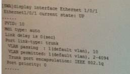
从以上输出可以判断_____.
A. 带有VLAN10标签的数据帧离开端口Ethernet 1/0/1时会被剥离标签
B. 带有VLAN10标签的数据帧离开端口Ethernet 1/0/1时会被剥离标签
C. 带有VLAN1标签的数据帧进入端口Ethernet 1/0/1时会被丢弃
D. 带有VLAN10标签的数据帧进入端口Ethernet 1/0/1时被丢弃
Correct Answer: B
Section: (none) Explanation
Explanation/Reference:
QUESTION 329
下面关于交换机VLAN间通信说法正确的是
A. 交换机划分VLAN内的主机可以通信，VLAN的主机没有办法互通的
B. 二层交换机划分VLAN后，不同的VLAN的主机可以借助路由器实现通信，方法是路由器到各个VLAN各有一个物理接口和一条物理连接
C. 二层交换机划分VLAN后，不同的VLAN的主机可以借助路由器实现通信，方法是路由器用一个接口连接交换机的Trunk口，且路由器必须支持802.1Q协议
D. 三层交换机划分VLAN后，不同的VLAN的主机可以实现通信，方法是三层交换机为每个VLAN创建一个虚拟的三层VLAN接口，需要VLAN接口配置相应的IP地址
Correct Answer: ABCD
Section: (none) Explanation
Explanation/Reference:
QUESTION 330
下面关于交换机VLAN间通信说法正确的是
A. RSTP和MSTP均要求上游设备的指定端口在接收到下游设备的Agreement报文后才能进行快速迁移
B. RSTP中，下游设备只有在收到上游设备发送的Proposa和Agreement均置为的BPDU，才会回应 Agreement置为的BPDU
C. 图中，默认情况下SWA的端口E1/0/1需要等待两倍的Forward Delay 时长才可以进入Forwarding状态
D. 通过在端口配置stp no-agreement-check，MSTP交换机将不会检查上游发送的Proposal BPDU中是否将 Agreement位置位
Correct Answer: ABCD
Section: (none) Explanation
Explanation/Reference:
QUESTION 331
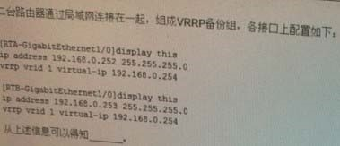
A. RTA为备份组Master路由器
B. RTB为备份组Master路由器
C. RTA,RTB无法选举出备份组Master路由器
D. RTA,RTB都处于VRRP Master状态
Correct Answer: B
Section: (none) Explanation
Explanation/Reference:
QUESTION 332
关于Voice VLAN的工作模式，说法正确的 是
A. Voice VLAN的工作模式包含自动和手动两种
B. 自动模式下，系统会识别IP Phone发出的报文，如果匹配为语音报文，则将连接IP Phone的端口加入
Voice VLAN
C. 手动模式下，需要手工将IP Phone加入Voice VLAN中
D. 手动模式下系统将不会向端口下发ACL
Correct Answer: ABC
Section: (none) Explanation
Explanation/Reference:
QUESTION 333
关于POE系统，说法正确的是
A. POE系统包含PSE设备和PD设备两部分，其中PD为供电设备，PSE为受电设备
B. POE通常采用mid-span和end-span两种供电方法
C. 通常PSE可以支持mid-span和end-span两种方法，PD只能支持一种
D. POE电源提供的电压为48V，输出功率通常不超过13W
Correct Answer: BD
Section: (none) Explanation
Explanation/Reference:
QUESTION 334
SSH协议作为一种安全的远程登录协议，被广泛 应用，关于SSH的描述正确的是
A. SSH采用额外的加密技术确保登录安全性
B. SSH采用TCP端口22传输数据，端口23建立连接
C. SSH还可以为FTP提供安全的传输通道
D. SSH即SecureShell，可以采用DES认证方式保证数据的安全性
Correct Answer: ABC
Section: (none) Explanation
Explanation/Reference:
QUESTION 335
若客户倾向于使用TACACS+协议而非RADUS完成用户的接入认证，这可能是因为
A. TACACS+协议对报文主体部分全部加密，安全性高
B. TACACS+协议采用TCP可靠传输
C. TACACS+协议报文简单，可以采取认证和授权相结合方式，也可以轻松分离方式
D. TACACS+采用UDP协议，网络传输效率高
Correct Answer: AB
Section: (none) Explanation
Explanation/Reference:
QUESTION 336
园区网的安全性应该考虑到如下哪些发面
A. 有效识别合法和非法用户
B. 对网络设备、网络拓扑进行有效管理
C. 有效地访问控制
D. 对物理线路进行保护
Correct Answer: ABCD
Section: (none) Explanation
Explanation/Reference:
QUESTION 337
对关于SNMP v3的架构说法描述正确的有
A. SNMP引擎包含调度器，消息处理子系统，安全子系统和访问控制子系统
B. SNMP应用包含命令生成器，命令响应器，指示生成器，指示接收器，代理转发器等
C. SNMP Manager要么具有生成器，要么具有只是接收器
D. 一个SNMP实体可能即是SNMP Manager也是SNMP Agent
Correct Answer: ABCD
Section: (none) Explanation
Explanation/Reference:
QUESTION 338
生成树配置中的stp mcheck命令，说法正确的有
A. 该命令用于RSTP交换机和MSTP交换机互联时使用
B. 该命令在不同厂商的交换机互连，且运行MSTP时使用，用于检查摘要信息
C. 该命令用于运行RSTP或MSTP的交换机端口连接STP设备时使用
D. 通过在RSTP或MSTP交换机端口上运行该命令，可以将端口的生成树描述切换到STP
Correct Answer: C
Section: (none)
Explanation
Explanation/Reference:
QUESTION 339
关于RSTP和STP的计算收敛的对比，说法正确的有
A. 如果STP想缩短收敛时间，只能配置较少的FORWARD Delay时间，但是可呢过会影响网络的稳定性
B. 相对于STP,RSTP定义了根基端口快速切换机制，这样是接主机的端口快速进入转发状态
C. 相对于STP,RSTP定义了根基端口快速切换机制，这样是可以使Altemate在跟端口障碍时，快速成为新的根端口态
D. 相对于STP，RSTP定义了指定端口快速切换机制，这样可以使得指定端口亏阿苏进入转发状态而不需要等待两倍的Forward Delay时间
Correct Answer: ABCD
Section: (none)
Explanation
Explanation/Reference:
QUESTION 340
可以实现跨越多个交换机的镜像技术是
A. 端口镜像
B. 流镜像
C. 远程镜像
D. 本地镜像
Correct Answer: C
Section: (none)
Explanation
Explanation/Reference:
QUESTION 341
NTP为了适应不同的应用场景，提供了多种工作模式，下列关于NTP工作模式描述正确的是
A. 客户端/服务器模式适用于已知时钟服务器地址的情况，且可以适当提高时钟同步的可能性
B. 对等体模式中，主动对等体和被动对等体可以相互同步时钟
C. 广播模式适合干点到多点的网络应用，提高部署和运行效率
D. 组播模式适用于不确定服务器或对等体IP地址的情况，简化部署
Correct Answer: AB
Section: (none)
Explanation
Explanation/Reference: